Всесоюзный
ордена Трудового Красного Знамени
комплексный научно-исследовательский и конструкторско-технологический
институт водоснабжения, канализации, гидротехнических сооружений
и инженерной гидрогеологии
(ВНИИ ВОДГЕО) Госстроя СССР
СПРАВОЧНОЕ ПОСОБИЕ
К СНиП
СЕРИЯ ОСНОВАНА В 1989 ГОДУ
ПРОЕКТИРОВАНИЕ
СООРУЖЕНИЙ ДЛЯ ОЧИСТКИ
СТОЧНЫХ ВОД
Москва Стройиздат 1990
Рекомендовано к изданию Научно-техническим советом ВНИИ ВОДГЕО Госстроя СССР.
Редактор З.С. Шестопалова
Разработано к СНиП 2.04.03-85 «Канализация. Наружные сети и сооружения» на основе результатов научных исследований и опыта эксплуатации сооружений и установок для очистки сточных вод за последние годы в различных отраслях промышленности. Содержит методики и примеры расчета, вспомогательные справочные материалы, необходимые при проектировании очистных сооружений.
Для инженерно-технических работников проектных и строительно-монтажных организаций.
1.1. Усреднение расхода и концентрации загрязнений позволяют рассчитывать все последующие звенья очистки не на максимальные, а на некоторые средние значения параметров потока. Экономичнее иметь усреднитель в начале цепи, чем завышать объем и производительность каждого из последующих звеньев очистки.
1.2. Выбор рациональной схемы усреднения (типа усреднителя), расчет его объема проводятся на основе информации о характере колебаний параметров входного потока концентраций Cen(t) и расхода qen(t) и требований на допустимые колебания параметров сточных вод на выходе усреднителя Cex(t), qex(t). Эти требования обычно устанавливаются на основе максимально допустимых величин Cadm и qadm, назначаемых в зависимости от типа последующих очистных сооружений, при этом они должны превышать средние значения параметров Сen mid, qen mid.
Для расчета объема усреднителя используется информация, получаемая: от технологов основного производства, которые, используя характеристику номинального режима производства и аварийных режимов, могут прогнозировать характер поступления сточных вод на очистные сооружения; с объектов-аналогов, а также непосредственным наблюдением на объекте.
Информация может накапливаться в записях заводских лабораторий об изменениях расхода и лимитируемых показателей загрязнения сточной воды.
При наличии на предприятии контрольно-измерительной аппаратуры изменение состава сточных вод регистрируется непрерывно, при отсутствии - дискретно с различной длительностью интервалов между лабораторными анализами (не более 1 ч). Окончательная форма представления информации о колебаниях - таблицы и графики. Полученная информация о колебаниях расхода и состава сточных вод (по лимитируемым загрязнениям, например: pH среды, интенсивность окраски, взвешенные вещества, специфические загрязнения производства), а также представление о количественном и качественном составе нерастворимых загрязнений, дает возможность вести расчет объема усреднителя в соответствии с основными типами нестационарности потока:
залповые сбросы высококонцентрированных сточных вод;
циклические колебания;
случайные колебания произвольного спектра.
Сведения о количественном и качественном составе нерастворимых загрязнений необходимы для выбора способа перемешивания и расчета перемешивающих устройств. Кроме того, эти сведения помогут принять решение о возможной компоновке усреднителя с отстойной зоной в целях облегчения его эксплуатации и частичной очистки стоков. Образование непредусмотренного и трудноотделяемого осадка в усреднителях является основной причиной снижения эффективности их работы.
Конструктивное выделение зоны отстаивания в усреднителе приемлемо при наличии узла обработки осадка в технологической цепи очистки (напорная, реагентная флотация, отстаивание, осветление).
1.3. Тип усреднителя необходимо выбирать в зависимости от характера и количества нерастворенных компонентов загрязнений, а также динамики поступления сточных вод. При гашении залповых сбросов предпочтительнее конструкции многоканального типа, при произвольных колебаниях - практически равноценны любые типы усреднителей. В таких случаях большую роль играют вид и количество нерастворенных загрязнений.
К многоканальным конструкциям относятся: прямоугольные - Д.М. Ванякина, круглые - Д.А. Шпилева, конструкции с неравномерным распределением расхода и объемов по каналам.
Усреднитель-смеситель барботажного типа следует применять для усреднения стоков независимо от режима их поступления при содержании грубодиспергированных взвешенных веществ с концентрацией до 500 мг/л, гидравлической крупностью до 10 мм/с.
Усреднитель-смеситель с механическим перемешиванием и отстойной зоной необходимо применять для усреднения стоков с содержанием взвешенных веществ более 500 мг/л любой гидравлической крупности. Режим поступления стоков - произвольный.
Усреднители следует устанавливать после отстойников или оборудовать их отстойной частью с целью облегчения эксплуатации. Расчет отстойной части необходимо проводить по данным кинетики осаждения взвесей, аналогично расчету отстойников. При этом необходимо учитывать гидродинамический режим выбранного типа усреднителя. Для подавления залповых сбросов высококонцентрированных стоков и произвольных колебаний состава и при наличии взвешенных мелкодиспергированных веществ с концентрацией до 500 мг/л, гидравлической крупностью до 5 мм/с следует применять многоканальные усреднители без принудительного перемешивания. При необходимости усреднения и расхода усреднитель блокируется с аккумулирующей емкостью.
КОНСТРУКЦИИ УСРЕДНИТЕЛЕЙ РАЗЛИЧНОГО ТИПА
1.4. Комплексный подход к выбору типа усреднителя и его расчету в зависимости от характера колебаний концентрации загрязнений и расхода сточных вод, от их качественного состава, позволил выявить основные типы конструкций.
Однако для конкретных технологических задач усреднения сточных вод могут быть использованы и другие схемы усреднения (последовательно-параллельные, двухступенчатые и др.) с соответствующим обоснованием, разрабатываться новые конструкции с заданными свойствами.
Усреднитель-смеситель барботажного типа
1.5. Союзводоканалпроект разработал типовые проекты многосекционных пневматических усреднителей концентрации сточных вод полезным объемом одной секции 300, 1400 и 5000 м3. Применение усреднителей барботажного типа связано с соблюдением ряда принципиальных положений:
1. Распределение сточных вод по площади усреднителя должно быть максимально равномерное. С этой целью могут использоваться системы подающих лотков с придонными водосливными окнами, расположенными на расстоянии 2 м друг от друга. При обеспечении должного качества строительства возможно распределение жидкости из лотков через донные выпуски. Размеры выпусков рассчитываются по формуле
Каждый распределительный лоток оборудуется двумя шиберами: на входе в лоток для создания оптимального режима и равномерного распределения сточной воды между лотками; и в конце лотка на торцевом придонном водосливном окне размером 20×40 см (Н×В), обеспечивающий периодическую промывку лотка.
Число распределительных лотков и размещение выпускных окон в одной или обеих стенках лотков принимается из такого расчета, чтобы в каждый циркуляционный поток поступало одинаковое количество жидкости.
2. При напорной подаче воды на усреднитель перед ним на трубопроводе необходимо устанавливать колодец гашения напора. Целесообразнее самотечная подача стоков на усреднитель. В этом случае сооружение несет на себе всю нагрузку по выравниванию расхода и концентрации.
3. Расчет объема усреднителя ведется в зависимости от характера поступления сточных вод на сооружение в соответствии с формулами (19) - (24) СНиП 2.04.03-85.
Максимальная величина скорости проточного течения жидкости в усреднителе 2,5 мм/с, при этом длина секции усреднителя принимается из расчета
с учетом графика поступления концентрации загрязнении по часам суток.
С целью обеспечения равномерного распределения жидкости и воздуха вдоль усреднителя целесообразна длина секции не более 24 м. Глубина слоя воды в усреднителя из конструктивных соображений принимается в пределах 3 - 6 м. Ширина секции усреднителя принимается не более 12 м.
4. В качестве барботеров в усреднителе рекомендуется использовать перфорированные трубы с отверстиями диаметром 3 мм (шаг 8 - 16 см), располагаемыми в нижней части трубы в один или два ряда под углом 45° к оси трубы.
Трубы укладываются горизонтально вдоль резервуара на подставках высотой 6 - 10 см. Допустимое отклонение от горизонтальной укладки труб барботеров не должно превышать ±0,015 м так, чтобы связанная с этим неравномерность подачи воздуха по длине барботера не превысила одной трети от принятой в расчете неравномерности подачи воздуха (20 % среднего расхода воздуха).
Барботеры подразделяют на пристеночные, создающие один циркуляционный поток, и промежуточные, создающие два циркуляционных потока.
Оптимальное расстояние между барботерами следует считать (2 - 3)H, а между барботерами и параллельной ему стеной усреднителя (1 - 1,5)H, где H - глубина погружения барботера.
При расчете принимаются:
интенсивность барботирования для усреднения концентрации растворенных примесей при пристеночных барботерах 6 м3/ч на 1 м, при промежуточных барботерах 12 м3/ч на 1 м;
интенсивность барботирования для предотвращения выпадания в осадок взвесей в пристеночных барботерах 12 м3/ч на 1 м, в промежуточных 24 м3/ч на 1 м.
Число стояков подвода воздуха к барботеру и шаг между радиальными отверстиями перфорации для барботеров из полиэтиленовых труб надлежит определять в зависимости от требуемой интенсивности барботирования и заданной неравномерности подачи воздуха на основании данных, приведенных в табл. 1.
|
Наружный диаметр трубы, мм |
Диаметр центрального отверстия, барботера, мм |
Диаметр перфорационных отверстий, мм |
Число рядов перфорационных отверстий |
Интенсивность подачи воздуха, Н · м3/ч |
Перепад давления на перфорационном отверстии, кПа |
Шаг радиальных отверстий, мм |
Неравномерность подачи воздуха, % |
Длина барботера, обслуживаемого одним стояком, м |
|
50 |
42,5 |
3 |
1 |
6 |
1 |
160 |
20 |
39,5 |
|
12 |
4 |
160 |
20 |
42,5 |
||||
|
12 |
1 |
80 |
20 |
28,5 |
||||
|
2 |
12 |
1 |
160 |
20 |
29 |
|||
|
24 |
4 |
160 |
20 |
32 |
||||
|
24 |
1 |
80 |
20 |
22 |
||||
|
6,3 |
59 |
3 |
1 |
6 |
1 |
160 |
12 |
50 |
|
12 |
4 |
160 |
10 |
50 |
||||
|
12 |
1 |
80 |
20 |
44 |
||||
|
2 |
12 |
1 |
160 |
20 |
43,5 |
|||
|
24 |
4 |
160 |
20 |
47 |
||||
|
24 |
1 |
80 |
20 |
33,5 |
||||
|
75 |
71 |
3 |
1 |
6 |
1 |
160 |
5 |
50 |
|
12 |
4 |
160 |
4 |
50 |
||||
|
12 |
1 |
80 |
13 |
50 |
||||
|
2 |
12 |
1 |
160 |
13 |
50. |
|||
|
24 |
4 |
160 |
10 |
50 |
||||
|
24 |
1 |
80 |
20 |
43,5 |
В расчете принято, что каждый стояк присоединен к середине обслуживаемого им участка барботера длиной l. При расположении стояка подвода воздуха у одного из концов барботера длина обслуживаемого участка будет равна l/2.
Расчетная глубина погружения барботера принята равной 4,3 м. Приведенные в табл. 1 данные могут использоваться при изменении погружения в диапазоне 3 - 5 м.
При среднем перепаде давления на перфорированных отверстиях ΔH = 1 кПа максимальные потери в барботере не более ΔHм = 2 кПа, а при ΔH = 4 кПа - не более ΔHм = 7 кПа.
5. Для предотвращения выпадения осадка в местах прямоугольного сопряжения днища со стенками резервуара рекомендуется заполнение этих мест тощим бетоном. При этом угол сопряжения днища с заполнением должен составлять 30°.
Возможен уклон в сторону забора воды, где должен быть предусмотрен трубопровод опорожнения секции усреднителя.
6. На входе в усреднитель необходимо устанавливать контрольно-измерительную аппаратуру для определения расхода воды и воздуха, поступающих на сооружение.
7. Все конструктивные узлы сооружения необходимо оборудовать трубопроводами опорожнения и предусматривать малые средства механизации (например, бадья-таль-кошка, бадья-тельфер и др.) для периодической чистки усреднителя.
Возможно предусмотреть нестационарную систему пеногашения усредненными стоками (например, шланги с насадками, укрепленные на штативах). Как показал опыт эксплуатации, пены в усреднителях нет, кроме исключительных случаев, когда применяли в производстве запрещенные в настоящее время ПАВ.
8. В зависимости от характеристик стоков в цеховых каналах, на выпусках из промышленных зданий или перед резервуаром-усреднителем необходимо предусматривать решетки для сбора волокон, шерсти, тряпок и других отходов производства. Целесообразно по ходу технологических линий на определенных производствах устанавливать шерстеуловители.
9. Самым надежным способом водоотведения, как показал опыт эксплуатации, является работа насосов.
Многоканальные усреднители
1.6. Перспективным типом усреднителя для большого числа объектов, например, легкой промышленности, является многоканальный усреднитель, схема которого разработана во ВНИИ ВОДГЕО, с оптимальным распределением сточных вод по коридорам разной ширины. На базе этой схемы МИСИ и ГПИ-1 разработали конструкцию усреднителя для сточных вод, относящуюся к категории легких (взвешенных веществ до 500 мг/л, гидравлической крупностью до 5 мм/с), для суточного расхода сточных вод свыше 67 тыс. м3.
Конструкция, представленная на рис. 1, состоит из приемной камеры, распределительного лотка, каналов усреднителя, камеры усредненных стоков аккумулирующей емкости. Сточная вода попадает в приемную камеру, оборудованную полупогружной доской для гашения волновых колебаний на поверхности, откуда поступает в распределительный лоток. При превышении величины среднего расхода сточных вод избыточное количество воды переливается в аккумулирующую емкость через регулируемый водослив. Усреднение колебаний концентрации загрязнений в поступающих сточных водах осуществляется за счет различного времени пребывания потока в каждом из каналов. Распределение сточных вод по каналам усреднителя осуществляется через донные выпуски расчетного диаметра.
Рис. 1. Схема многоканального усреднителя
1 - приемная камера; 2 - распределительный лоток; 3 - донные выпуски и боковой водослив с шибером; 4 - каналы; 5 - система гидросмыва; 6 - удаление осадка гидроэлеваторами; 7 - камера усредненных стоков; 8 - аккумулирующая емкость; 9 - водослив
Для возможности дорегулировки расходов воды по каналам усреднителя в стенке лотка устраиваются прямоугольные водосливы, оборудованные шиберами. На выходе из каждого канала предусматриваются измерительные водосливы, которые позволяют контролировать уровень и расход воды по каждому каналу.
Из камеры усредненных стоков вода либо откачивается, либо самотеком поступает на дальнейшую очистку. На предприятиях в часы минимального водостока сточные воды из аккумулирующей емкости перекачиваются в приемную камеру. В каждом из каналов усреднителя и в аккумулирующей емкости предусматривается отстойная зона.
Система сбора и удаления осадка выбирается в зависимости от конкретных данных по кинетике отстаивания, количеству и характеру взвешенных веществ (гидровзмучивание, гидросмыв и др.). Периодичность удаления осадка определяется в период пусконаладочных работ.
Длина, общая ширина и глубина сооружения принимаются в зависимости от требуемого расчетного объема с учетом граничных условий (граничные условия определены для суточной производительности сточных вод свыше 10 тыс. м3); ширина одного канала от 1 до 6 м, глубина не более 3 м.
При меньших расходах сточных вод возможен лотковый вариант многоканального усреднителя, сохраняющий принцип дифференцированного распределения потока.
Распределение потока воды между каналами осуществляется в соответствии с формулой (3) (i - номер канала)
qi/qω = [(2n - 1)/n(n - 1)] - 2i/(n2 - 1). (3)
Объем коридоров различен. Ширина каждого i-го канала рассчитывается по формуле
bi/Bset = 3(i - 0,5){[(2n - 1)/n] - 2i/(n + 1)}/n(n - 1) (4)
При этом в целях создания наилучшего гидродинамического режима работы каждого канала (высокого коэффициента полезного использования объема каждого канала) минимальная скорость течения воды в канале желательна не менее 7 мм/с.
Порядок расчета многоканального усреднителя
1. Расчет объема аккумулирующей емкости Wreg с учетом графика притока сточных вод на очистные сооружения (аналогично расчету регулирующей емкости водонапорных сооружений).
2. Расчет объема многоканального усреднителя Wes (для qmin) с учетом характера поступления концентрации загрязнений: залповый, циклический или произвольный. См. формулы (25) - (29) СНиП 2.04.03-85.
3. Определение общего объема сооружения: W = Wres + Wes.
4. Определение размеров усреднителя, в плане B×H×L в соответствии с граничными условиями.
5. Расчет ширины bi каждого канала по формуле (4), причем число каналов должно выбираться, начиная с трех при соблюдении конструктивных граничных условий и обеспечения минимальной скорости течения 7 мм/с.
6. Расчет расхода qi по каждому каналу по формуле (3).
7. Расчет распределительного лотка и размеров донных и боковых водосливов.
Распределительный лоток с донными выпусками рассчитывается с учетом следующих положений:
горизонтальное расположение дна лотка;
скорость течения воды в лотке принимают постоянной, не менее 0,4 м/с из условия незаиливания лотка. При этом влияние на изменение кривой свободной поверхности воды при неравномерном ее отборе по длине лотка должно быть незначительным.
Лоток лучше располагать затопленным (ниже уровня воды в каналах) для более равномерного распределения воды по глубине потока;
расчет донных и боковых выпусков необходимо производить для расходов в м3/с, определяемых по формуле (3) для каждого канала по общепринятой методике гидравлического расчета водосливов
Для донного цилиндрического отверстия μ = 0,8, для бокового прямоугольного отверстия μ = 0,7.
8. Расчет измерительных и регулируемых водосливов производится в соответствии с расчетом, изложенном в Справочнике по гидравлическим расчетам систем водоснабжения и канализации /А.М. Курганов, Н.Ф. Федорова. - М.: Стройиздат, 1978.
Регулирование водослива, установленного между приемной камерой и аккумулирующей емкостью, производится с помощью передвижной стенки. На стенке из каждого канала устанавливаются водосливы треугольного профиля.
Кроме предложенной конструкции возможны варианты многоканального типа усреднителя. Например, в проектном институте ГИАП многоканальный усреднитель схемы ВНИИ ВОДГЕО выполнен в П-образной компоновке сблокированным с аварийным накопителем.
Усреднитель-смеситель с механическим перемешиванием, оборудованный отстойной зоной
1.7. В настоящее время теоретически и экспериментально данная конструкция не отработана. Работы по созданию такой конструкции для сточных вод, относящихся к категории «тяжелых» (содержание взвешенных веществ более 500 мг/л, гидравлическая крупность не лимитируется) начаты в МИСИ им. В.В. Куйбышева.
При конструировании такого типа усреднителя необходимо учитывать большое количество факторов, влияющих на эффективность перемешивания, например:
уплотнение или отстаивание, происходящее в донной части усреднителя (отстаивание в зоне сжатия). Интенсивность осаждения взвеси, зависимость между скоростью осаждения взвешенных частиц и их содержанием. На основании этих и других данных можно будет рассчитать отстойную зону усреднителя;
влияние условий смешения (скорость перемешивания, перемешивание за счет диффузии, создание градиента скорости между различными элементами объема и др.) на эффект выравнивания концентрации в воде и осуществления химических реакций (нейтрализация, хлопьеобразование и т.д.);
выбор мешалок или аэраторов, а также конфигурации сооружения для создания условий перемешивания.
Нельзя также не учитывать требования последующих звеньев очистки: реагентная обработка, отстаивание, флотация, биологические методы.
Так, например, для стоков кожзаводов слишком интенсивное перемешивание стоков в усреднителе разрушает естественные структурные образования, что в дальнейшем ведет к снижению эффекта коагулирования, флотации.
В то же время при аэрации стоков кожевенных производств, содержащих большое количество сульфидов, в усреднителе происходит окисление сульфидов и частичное выдувание сероводорода в атмосферу (при значениях pH менее 7). Процесс выдувания не желателен в связи с загрязнением окружающей атмосферы, в то же время процесс частичного окисления сульфидов - положителен (с повышением степени диспергирования воздуха - степень окисления сульфидов возрастет). Целесообразно в отдельных случаях использовать поверхностные аэраторы в качестве перемешивающих устройств.
Конструкция усреднителя с механическим перемешиванием разработана для стоков кожевенных производств институтом ГПИ-2 на базе радиального отстойника диаметрами 12; 24 и 40 м. Усреднитель оборудован вращающимся мостом с механическими мешалками и скребками для сгребания осадка. Выпуск стока из нижней точки конического днища.
Анализ эффективности работы действующих сооружений показал, что построенные сооружения неудовлетворительно справляются с функцией усреднения состава сточных вод. Сказываются расчетные и конструктивные ошибки при проектировании, плохое качество строительства и низкий уровень эксплуатации.
Модернизация существующих конструкций может быть осуществлена использованием следующих мероприятий:
вместо централизованного впуска воды в усреднитель предусмотреть рассредоточенный по периметру сооружения (возможен металлический лоток с подачей воды через придонные выпуски);
интенсифицировать работу системы перемешивания;
предусмотреть возможный забор воды выше зоны отстаивания не менее 1,5 м. Из нижней точки дна усреднителя удалять осадок, обработка которого возможна в общей схеме локальной очистки.
Общие сведения
1.8. Для проектирования сооружений и аппаратов механической очистки должны быть заданы следующие данные:
общее количество сточных вод, м3/ч;
температура сточных вод, °С;
периодичность образования сточных вод;
тяжелые механические принеси, мг/л;
нефтепродукты, масла, мг/л;
плотность тяжелых и легких загрязнений, г/см3; кинетика осаждения механических примесей тяжелее и легче воды, при их расчетной концентрации в исходной воде;
требуемая степень очистки (%) или допустимое содержание загрязнений легче и тяжелее воды, мг/л;
гидравлическая крупность частиц, тяжелее и легче воды, которую необходимо выделить для обеспечения требуемой степени очистки, мм/с.
Гидравлическая крупность определяется по кривым кинетики отстаивания Э = f(t) (рис. 2), полученным экспериментально отстаиванием сточной воды в статических условиях в слое h, как правило, отличным от действительной высоты отстаивания в выбранном типе отстойника, поэтому для приведения полученных результатов к натурным надлежит производить пересчет по формулам (30) и (31) СНиП 2.04.03-85 с учетом поправки на изменение вязкости воды при изменении температуры (табл. 2).
Таблица 2
|
Температура воды, °С |
60 |
50 |
40 |
30 |
25 |
20 |
15 |
10 |
5 |
0 |
|
Коэффициент вязкости μ, 10-3 Н · с/м2 |
0,469 |
0,549 |
0,656 |
0,801 |
0,894 |
1,01 |
1,14 |
1,308 |
1,519 |
1,792 |
Показатель степени n2, зависящий от природы загрязнений, в том числе и от агломерируемости взвесей для промышленных сточных вод, определяется по полученным экспериментально кривым кинетик отстаивания в слоях h1 и h2
n2 = (lgt2 - lgt1)/(lgh2 + lgh1). (6)
При расчете сооружений для механической очистки промышленных сточных вод экспериментальное определение показателей характеристики воды и загрязнений должно предшествовать проектированию в каждом конкретном случае. Если проектирование ведется для строящегося предприятия, данные о характеристике воды возможно получить при изучении воды на аналогичном производстве. Опыт обследования промышленных предприятий показывает, что величина гидравлической крупности частиц U0, которые должны быть выделены для обеспечения требуемого эффекта колеблется в пределах 0,2 - 0,5 мм/с, поэтому для ориентировочных расчетов отстойных сооружений величину U0 можно принимать равной 0,25 - 0,3 мм/с.
Рис. 2. Кинетика отстаивания сточных вод прокатных производств при исходной концентрации С0 = 200 мг/л
1 - h - 200 мм; 2 - h = 500 мм
Для городских сточных вод продолжительность отстаивания t в слое h = 500 мм можно принимать по табл. 30 СНиП 2.04.03-85, а показатель степени п2 по рис. 2 СНиП 2.04.03-85.
1.9. Принимая во внимание, что при проектировании очистных установок, как правило, применяются типовые или экспериментальные конструкции отстойных сооружений с известными геометрическими размерами, за расчетную величину следует принимать производительность одного отстойника qset, при которой обеспечивается заданный эффект очистки. После расчета qset исходя из общего расхода сточных вод определяется количество рабочих единиц отстойников N
Для горизонтального отстойника производительность одной секции рассчитывается по формуле (32) СНиП 2.04.03-85. Для радиальных, всех типов вертикальных отстойников, а также отстойников с вращающимся сборно-распределительным устройством (см. пример 2), производительность одного отстойника рассчитывается по формуле (33) СНиП 2.04.03-85.
Отстойники с вращающимися сборно-распределительными устройствами
1.10. Для отстойников с вращающимся сборно-распределительным устройством υtb = 0. Кроме того, при проектировании этих отстойников должна рассчитываться форма перегородки, разделяющая распределительный и водоприемный лоток. Форма этой перегородки может быть выражена через изменяющуюся ширину Bp распределительного лотка
где m = 1/11; 1/12;
где bз - зазор между стенкой и фермой (bз = 0,1 - 0,15 м); lл - удаление расчетного створа лотка от центра отстойника. Количество струенаправляющих лопаток nл определяется конструктивно при соблюдении следующего соотношения:
где rл = 0,1 - 0,125 м.
Число лопаток nл не следует принимать более 24 шт. Изменение высоты водослива по длине водоприемного лотка зависит от изменения по радиусу расхода воды, удаляемой из отстойника. Высота водослива hсб по мере удаления от центра отстойника рассчитывается по формуле затопленного водослива с тонкой стенкой
Период вращения T, с, водораспределительного устройства, зависит от требуемой степени очистки и должен также рассчитываться при привязке отстойника к конкретным условиям,
1.11. Тонкослойное отстаивание применяется в случае необходимости сокращения объема очистных сооружений при ограниченности выделяемой площади и при необходимости повышении эффективности существующих отстойников. В первом случае тонкослойные отстойники выполняют роль самостоятельных сооружений, во втором - существующие отстойники дополняются тонкослойными модулями, располагаемыми в совершенствуемом отстойнике, перед водосборным устройством.
1.12. При расчете отстойника, работающего по перекрестной схеме (рис. 3) расчетными величинами являются длина яруса Lbl и производительность отстойника qset. Длина яруса Lbl, м, определяется по формуле
где υW - скорость потока воды в ярусе отстойника, мм/с, применяемая по табл. 31 СНиП 2.04.03-85; hti - высота яруса, м, по табл. 31 СНиП 2.04.03-85 (при высоких концентрациях загрязнений рекомендуется принимать большие значения); Kdis - коэффициент сноса выделенных частиц (при плоских пластинах Kdis =1,2; при рифленых пластинах Kdis = 1); u0 - гидравлическая крупность задерживаемых частиц, которую рекомендуется определять в слое, равном высоте яруса hti.
Производительность отстойника qset определяется по формуле
qset = 7,2KsetHblLblBblU0/Kdishti, (14)
где Bbl - ширина тонкослойного блока, назначается исходя из допустимого прогиба листа, выбранного для тонкослойного блока (Δδ = 3 - 5 мм) при наклоне под углом сползания осадка. Строительная ширина Bстр, м, отстойника определяется по формуле
где b1 = 0,25 м; b2 = 0,05 - 0,1 м.
После определения длины яруса отстойника Lbl, исходя из возможных размеров материала, применяющегося для параллельных пластин, назначаются длина пластины в ярусе и количество блоков (модулей), располагаемых по одной прямой.
Обязательным условием, выполняемым при конструировании отстойника, должна быть плотная стыковка соответствующих пластин в рядом устанавливаемых блоках (модулях). Строительная высота отстойника Hстр, м (см. рис. 3) определяется по формуле
Hстр = Hbl + h3 + hм + 0,3, (15а)
Рис. 3. Схема тонкослойного отстойника, работающего по перекрестной схеме удаления осадка
где h3 - высота, необходимая для расположения рамы, на которой устанавливаются блоки (h3 = 0,2 - 0,3 м; hм = 0,1 м). Строительная длина тонкослойного отстойника Lстр (см. рис. 3) определяется по формуле
Lстр = Lbl + l1 + l2 + 2l3 + l4. (16)
Зона длиной l1 служит для выделения крупных примесей. Объем зоны рассчитывается на 2 - 3-минутное пребывание потока
l1 = qsett/(60HblBстрKset), (17)
где Kset - коэффициент использования зоны, принимаем равным 0,3; при применении пропорционального устройства l2 = 0,2 м, если распределение осуществляется дырчатой перегородкой l2 = 0; l3 = 0,2 - 0,25 м; l4 = 0,15 - 0,2 м.
1.13. В настоящее время применяется большое количество конструктивных разновидностей тонкослойных отстойников, работающих по противоточной схеме, все они, практически, могут быть сведены к двум расчетным схемам, показанным на рис. 4 и рис. 5. В конструкции отстойника, показанного на рис. 4, расчетной являются длина пластины в блоке (модуле) Lbl и производительность секции qset.
Длину пластины Lbl можно определить по формуле
где υW - скорость потока в ярусе; hti - высота яруса. Данные параметры задаются по табл. 31 СНиП 2.04.03-85.
Производительность одной секции рассчитывается по формуле (36) СНиП 2.04.03-85, для которой Hbl определяется по формуле
где nti - количество ярусов в блоке, которое назначается из конструктивных соображений; bn - определяется по формуле
Рис. 4. Схема тонкослойного отстойника, работающего по противоточной схеме удаления примесей
а - тяжелых примесей; б - легких примесей (масла, нефтепродукты и т.п.)
Ширина секции отстойника назначается из конструктивных соображений и исходя из размеров пластин, предназначающихся для изготовления блоков (модулей). Все размеры других узлов отстойника (ширина резервуара отстойника, его строительная глубина и т.д.) назначаются из конструктивных соображений.
За расчетные параметры тонкослойного отстойника (см. рис. 5) следует принимать длину пластин в блоке Lbl и длину расположения тонкослойных блоков (модулей) Lb. Величина Lbl определяется так же, как и в предыдущем случае по формуле (18), а Lb - по формуле
Lb = qset/(3,6KsetυWBbl), (21)
где qset - расход сточных вод на секцию, м3/ч.
Общая длина L0стр отстойника определяется по формуле
L0стр = Lb + lп1 + lп2 + lп3 + lп4 + lпл, (22)
Рис. 5. Схема отстойника, оборудованного тонкослойными блоками, работающего по противоточной схеме удаления примесей
а - тяжелых примесей; б - легких примесей (масла, нефтепродукты и т.п.)
где lп1 - длина зоны определяется из условия формирования потока перед распределением между ярусами. В этом же объеме происходит выделение крупных механических примесей при этом lп1 принимается в интервале 1 - 1,5 м;
lп2 = Lblsin(90 - α);
lп3 = 0,3 м; lп4 = 0,05 - 0,1 м; lпл = 0,4 - 0,5 м.
Общая глубина воды в отстойнике Hстр, м, определяется как сумма высот различных зон
Hстр = hм + h2 + h3 + h4 + h5, (23)
hм ≥ 0,1 м; h3 = 0,2 - 0,5 м; h4 = 0,1 - 0,2 м; h5 = 0,3 м.
Затем определяется удельный объем образующегося осадка Qmud, м3/ч, назначается способ его удаления в приямок и способ удаления из приямка, а по формуле (37) СНиП 2.04.03-85 рассчитывается его расход.
1.14. В случае дополнения горизонтальных отстойников тонкослойными блоками (при необходимости повышения их эффективности или для увеличения производительности), расчетными параметрами являются длина пластин Lbl в блоке (модуле) и расстояние Lb, на котором устанавливаются блоки в отстойнике. Эти величины рассчитываются по формулам (18) и (21). Величина Bbl численно равна ширине секции отстойника (пример 5).
При дополнении тонкослойными блоками вертикальных отстойников, при известных габаритах отстойника Lset и Bset или Dset, заданной крупности задерживаемых частиц U0 расчетной величиной является длина пластин Lbl, которая при заданной высоте яруса hti рассчитывается по формуле (18) или высота яруса hti рассчитывается по заданной длине пластин по той же формуле. Производительность отстойника рассчитывается по формуле
Fset = LsetBset или Fset = 0,785Dset; Hbl = Lblsin α. (26)
Когда производительность отстойника известна и требуется лишь увеличить эффективность очистки Этр, по лабораторным анализам кинетики отстаивания изучаемой воды определяется гидравлическая крупность частиц. Далее, задаваясь высотой яруса hti, по формуле (25) определяется высота Hbl, на которой должны быть расположены тонкослойные элементы, а затем по формуле (26) рассчитывается длина пластины и проверяется по формуле (18) скорость потока в ярусе.
При дополнении существующих радиальных отстойников тонкослойными блоками (модулями) (рис. 6), когда известны геометрические размеры отстойника и его производительность, а требуемая степень очистки задана гидравлической крупностью частиц U0, которые необходимо выделить, расчетными параметрами являются длина пластины в блоке Lbl, высота блока Hbl и число ярусов в блоке nti. Величина Lbl рассчитывается по формуле (18) при заданной высоте яруса hti. Высота блока Hbl рассчитывается по следующей зависимости:
где Kset - коэффициент использования объема, определяется по табл. 31 СНиП 2.04.03-85, как для радиальных отстойников; D1 - диаметр расположения блоков.
Рис. 6. Схема радиального отстойника дополненного тонкослойными блоками (модулями)
Затем определяется число ярусов в блоке (модуле)
Пример 1. Требуется определить гидравлическую крупность частиц для проектирования отстойника при очистке сточных вод прокатного производства.
Исходные данные: расход сточных вод qω - 1000 м3/ч; температура Tw - 30 °С; расход сточных вод постоянен в течение суток. Исходная концентрация тяжелых механических примесей - 200 мг/л; маслопродуктов - 50 - 60 мг/л; плотность тяжелых загрязнений - 5 г/см3; маслопродуктов - 0,8 г/см3; кинетики отстаивания механических примесей тяжелее воды расчетной концентрацией в различных слоях воды показаны на рис. 2.
В очищенной воде содержание тяжелых примесей не должно превышать 60 мг/л, маслопродуктов - 25 мг/л.
В проекте принимаются отстойники с рабочей глубиной отстаивания Hset = 1,5 м. Определение расчетной гидравлической крупности исходя из заданных параметров производится в следующем порядке:
по заданным величинам концентраций механических примесей в исходной и осветленной воде определяем требуемый эффект очистки Этр
Этр = 100(200 - 60)/200 = 70 %;
по кривым кинетики отстаивания (см. рис. 2) определяется продолжительность отстаивания t1 = 13,5 мин (810 с); t2 = 17,5 мин (1050 с), при которых в слоях воды h1 = 200 мм и h2 = 500 мм достигается требуемый эффект;
после этого по формуле (6) определяется показатель степени n2
n2 = (lg 1050 - lg 810)/(lg 500 - lg 200) = 0,3;
затем по формуле (30) СНиП 2.04.03-85 определяется гидравлическая крупность U0 частиц взвесей, которые должны быть выделены в отстойнике, при этом Kset = 0,5 (по табл. 31 СНиП 2.04.03-85), если температура сточных вод, поступающих на отстойники, будет такая же, какая была обеспечена при экспериментальном определении кинетик отстаивания, например Tw = 20 °С:
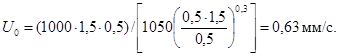
Поскольку температура сточных вод, поступающих на отстойник Tw = 30 °С, требуется внести поправку:
U0T = 0,63 · 1,005/0,801 = 0,79 мм/с.
Таким образом, отстойники, принятые как сооружения для механической очистки сточных вол прокатных производств, должны рассчитываться на задержание частиц гидравлической крупностью 0,79 мм/с.
Пример 2. Для очистки городских сточных вод требуется рассчитать отстойник с вращающимся сборно-распределительным устройством, который должен обеспечивать 60 %-ное задержание механических загрязнений, при исходной концентрации 300 мг/л. Расчетная температура воды составляет 20 °С, плотность осадка 2,6 г/см3.
Задаемся диаметром отстойника Dset = 24 м, в котором высота отстаивания Hset = 1 м.
По формуле (30) СНиП 2.04.03-85 определяется гидравлическая крупность частиц, которые требуется выделить для обеспечения заданного эффекта. При этом по табл. 30 и рис. 2 СНиП 2.04.03-85 определяется значение h1 = 0,5; tset = 970 с и n2 = 0,275, входящие в эту формулу, а по табл. 31 СНиП 2.04.03-85 назначается значение коэффициента использования объема Kset = 0,85
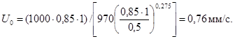
Внесение поправки на температуру не требуется, так как при лабораторных определениях кинетики отстаивания температура воды была той же, что в производственных условиях.
По формуле (33) СНиП 2.04.03-85 определяется производительность одного отстойника
qset = 2,8 · 0,85(242 - 12)0,76 = 1042 м3/ч.
По формуле (12) определяется период вращения водораспределительного устройства
T = 1000 · 1 · 0,85/0,76 = 1118,4 с = 18,6 мин.
Определив по формуле (9) величину Rл = (24/2) - 0,15 = 11,85 и задавшись значениями m = 1/12, bз = 0,15 и bл по формулам (8) и (11), рассчитываем ширину распределительного лотка Bp и высоту водослива hсб по створам. Для удобства результаты расчета сводим в табл. 3
Таблица 3
|
Rл, м |
2 |
3 |
4 |
5 |
6 |
7 |
8 |
9 |
10 |
11 |
11,85 |
|
Bp, м |
0,973 |
0,955 |
0,929 |
0,895 |
0,851 |
0,796 |
0,728 |
0,642 |
0,529 |
0,367 |
0 |
|
hсб, м |
0,030 |
0,039 |
0,047 |
0,055 |
0,062 |
0,069 |
0,075 |
0,081 |
0,087 |
0,093 |
0,097 |
Исходя из общего количества сточных вод и коэффициента неравномерности рассчитывается количество отстойников, а по формуле (37) СНиП 2.04.03-85 определяется количество образующегося осадка и принимается способ его удаления.
Пример 3. Расчет тонкослойного отстойника, работающего по перекрестной схеме удаления осадка (см. рис. 3).
Исходные данные: расход сточных вод завода производства железобетонных изделий (ЖБИ) составляет 1200 м3/сут; коэффициент часовой неравномерности составляет 1,1; завод работает в две смены.
Исходная концентрация тяжелых механических примесей - 700 мг/л; масло- и нефтепродуктов - 100 - 300 мг/л. Допустимая концентрация механических примесей в очищенной воде - 50 мг/л, нефтепродуктов - 25 мг/л.
По кривым кинетики отстаивания в слое воды, равном высоте яруса hti = 0,1 м, находим, что гидравлическая крупность тяжелых механических взвесей, которые требуется выделить, составляет
U0 = 1000hti/t = (0,1 · 1000)/500 = 0,2 мм/с.
Гидравлическая крупность нефтепродуктов
U0н = (0,1 · 1000)/330 = 0,3 мм/с.
Следовательно, расчет отстойника нужно вести на задержание частиц крупностью 0,2 мм/с.
Из условия количества загрязнений в сточных водах (700 мг/л) принимаем высоту яруса в отстойнике hti = 0,1 м (табл. 31, СНиП 2.04.03-85). Для обеспечения условий сползания осадка по пластинам, угол наклона пластин α принимаем равным 45°. В качестве материала пластин по имеющимся возможностям будет использована листовая сталь δ = 3 мм. Задавшись скоростью потока в ярусе отстойника (табл. 31 СНиП 2.04.03-85) υw = 7 мм/с, определяем по формуле (13) длину яруса
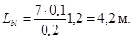
Из условия допустимого прогиба (Δδ = 3 - 5 мм) наклоненной под углом 45° пластины принимаем ширину блока Bbl = 0,75 м. Таким образом, максимальная ширина пластины в блоке будет Bblcos α = 0,75 · 1,41 = 1,060 м. Задаемся высотой блока с параллельными пластинами Hbl = 1,5 м.
По формуле (35) СНиП 2.04.03-85 определяем производительность одной секции тонкослойного отстойника с двумя рядами блоков (см. рис. 3)
qset = 7,2 · 0,75 · 1,5 · 0,75 · 4,2 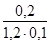
Проверяем скорость потока в ярусе отстойника при использовании поперечного сечения на 75 % Kset = 0,75 (табл. 31, СНиП 2.04.03-85)
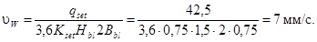
Приведенный расчет показывает, что исходные величины выбраны верно. Строительная ширина секции отстойника рассчитывается по формуле (15)
Bстр = 2×0,75 + 0,2 + 2×0,05 = 1,8;
Hстр = 1,5 + 0,3 + 0,1+0,3 = 2,2 м.
Длина зоны грубой очистки l1 по формуле (17)
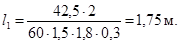
Строительная длина секции Lстр по формуле (16)
Lстр = 4,2 + 1,75 + 0,2 + 2 · 0,2 + 0,15 = 6,7 м.
Определяется часовой расход сточных вод с учетом коэффициента часовой неравномерности
qW = (1200 · 1,1)/16 = 82,5 м3/ч.
Исходя из общего количества сточных вод определяется количество секции тонкослойного отстойника
N = 82,5/42,5 = 1,94 ≈ 2 секции.
В соответствии с п. 6.58 СНиП 2.04.03-85 уточняется количество секций: N = 2 секции.
Из условия выбранного материала для пластин (листовая сталь δ = 3 мм) и облегчения массы блока, исходя из расчетной длины ярусного пространства (Lbl = 4,2 м), принимаем длину блока (модуля) 1,06 м. Таким образом, в каждом ряду будет располагаться по 4 блока (модуля).
Количество выделяемого осадка влажностью W = 96 % определяется по формуле (37) п. 6.65 СНиП 2.04.03-85
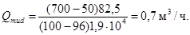
Далее принимается метод удаления осадка из отстойника. В данном случае, так как тонкослойный отстойник рекомендуется располагать над поверхностью земли, целесообразно принять многобункерную конструкцию отстойника с удалением осадка под гидростатическим напором.
Пример 4. Рассчитать тонкослойный отстойник, работающий по противоточной схеме удаления осадка (см. рис. 4).
Расчет ведется для случая очистки нефтесодержащих сточных вод НПЗ, когда для обеспечения снижения содержания нефтепродуктов до 50 - 70 мг/л из воды должны быть удалены глобулы нефти гидравлической крупностью U0н = 0,3 мм/с, которая определена при отстаивании в слое воды h = 100 мм. Расход сточных вод qw постоянен и составляет 600 м3/ч, температура воды 20 °С.
Приняв по табл. 31 СНиП 2.04.03-85 высоту яруса h = 0,1 м, и скорость рабочего потока υw = 5 мм/с, определяем по формуле (18) длину пластины в ярусе
Lbl = 5 · 0,1/0,3 = 1,67 ≈ 1,7 м.
Задавшись углом наклона пластин, определенным экспериментально, α = 45°, определяем расстояние между пластинами
bп = 0,1 · 1/√2 = 0,07 м.
Задаемся количеством ярусов в блоке (модуле) из условия простоты монтажа nti = 15 шт. Определяем высоту блока по формуле (19)
Hbl = 0,07 · 15 = 1,05 м.
Ширина блока Bbl определяется из условия ширины материала листа и условий монтажа. Назначаем ширину одной секции отстойника
Bset = Bbl = 6 м.
Определяем производительность одной секции по формуле (36) СНиП 2.04.03-85, если коэффициент использования объема Kset = 0,55 (табл. 31 СНиП 2.04.03-85);
qset = 3,6 · 0,55 · 1,05 · 6 · 5 = 62,4 м3/ч.
Толщиной пластин в блоке при технологическом расчете можно пренебречь.
Исходя из расхода сточных вод определяем количество секций отстойника
N = 600/62,4 = 9,6 ≈ 10 шт.
Далее из конструктивных соображений и с учетом обеспечения гидравлического режима потоков воды, близкого к ламинарному, назначаются другие размеры секции отстойника. Например:
l1 = lsin α + 0,5 = 1,7 · 0,707 + 0,5 = 1,7 м;
Hbl/sin α = l2 = 1,05/0,707 = 1,48 ≈ 1,5 м;
h1 = 0,5 м из условия более равномерного сброса очищенной воды;
l2 = Hblcos α + lsin α = 1,05 · 0,707 + 1,7 · 0,707 = 1,94 м;
h3 = 0,5 м из условия равномерности распределения воды между ярусами блока. Таким образом Hоб = 0,5 + 1,94 + 0,5 = 2,94 м.
Пример 5. Требуется рассчитать отстойник, работающий по противоточной схеме, показанной на рис. 5, для очистки коагулированных сточных вод литейного производства расходом 500 м3/ч, сточные воды с концентрацией механических примесей 1000 мг/л образуются постоянно, температура сточных вод Tw (в среднем) 30 °С. Экспериментально в заводской лаборатории установлено, что требуемая степень очистки (содержание взвесей 150 - 200 мг/л) обеспечивается при задержании частиц гидравлической крупностью 0,2 мм/с. Крупность определена по кривым кинетики отстаивания, полученным при температуре 20 °С в слое 100 мм.
По формуле (31) СНиП 2.04.03-85 уточняем величину гидравлической крупности
U0t = 0,2 · 1,005/0,8007 = 0,25 мм/с.
По формуле (18) определяем длину пластины в ярусе Lbl, задавшись предварительно по табл. 3.1 СНиП 2.04.03-85 высотой яруса hti = 0,1 м; и скоростью потока в ярусе υw = 5 мм/с
Lbl = (5 · 0,1)/0,25 = 2 м.
Назначаем угол наклона пластин, определенный экспериментально: α = 50°.
Задаемся количеством секций отстойника N = 5 и определяем производительность одной секции qset = 500/5 = 100 м3/ч.
Задаемся шириной одной секции Bbl = 3 м.
По формуле (21) определяем длину зоны Lb тонкослойного отстаивания, если коэффициент использования ее объема в соответствии с табл. 31 СНиП 2.04.03-85 Kset равен 0,5:
Lb = 100/(3,6 · 0,5 · 5 · 3) = 3,7 м.
Задаем длину зон тонкослойного отстойника (см. рис. 5): l1п = 1,5 м; l2п = 2sin(90 - 50°) = 2 · 0,64 = 1,28; l3п = 0,3 м; = 0,1 м; l4п = 0,5 м, а затем по формуле (22) определяем общую рабочую длину отстойника
L0стр = 3,7 + l,5 + 1,28 + 0,3 + 0,1 + 0,5 = 7,38 ≈ 8 м.
По формуле (23) определяем общую глубину воды в отстойнике Hстр, предварительно задавшись высотой зон: h1п = 0,1; h2п = 2sin50° = 2 · 0,77 = 1,54; h3п = 0,3; h4п = 0,2; h5п = 0,3;
Hстр = 1 + 1,54 + 0,3 + 0,2 + 0,3 = 2,44 см = 2,5 м.
Принимаем удаление осадка в приямок скребковым механизмом. По формуле (37) СНиП 2.04.03-85 определяется расход удаляемого осадка
Qmud = (1000 - 200)500/(100 - 96)2,6 · 104 = 3,85 м3/ч.
Пример 6. Необходимо повысить эффективность работы действующего радиального отстойника Dset = 30 м, на который подается расход воды qset = 1000 м3/ч. При этой производительности в отстойнике задерживаются частицы гидравлической крупностью U0 = 1 мм/с, что не удовлетворяет предъявляемым требованиям. Анализ характеристики загрязнений показал, что требуемый эффект очистки обеспечивается при выделении примесей гидравлической крупностью 0,25 мм/с и более.
Одним из путей, интенсификации работы существующих отстойников является дополнение их тонкослойными блоками (модулями) (см. рис. 6).
Требуется определить размеры тонкослойных блоков, которыми должен быть оборудован радиальный отстойник.
Приняв по табл. 33 СНиП 2.04.03-85 скорость потока υw = 5 мм/с и высоту яруса hti = 0,07 м по формуле (18), определяем длину пластин в блоке
Lbl = 5 · 0,07/0,25 = 1,4 м.
Задавшись диаметром D1 = 27 м, на котором предполагается расположить блоки с параллельными пластинами, по формуле (27) определяем высоту блока, при коэффициенте использования объема Kset = 0,45, определяемого по табл. 31 СНиП 2.04.03-85
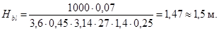
Рассчитываем количество ярусов в блоке (модуле)
nti = 1,5/0,07 = 21,4 ≈ 22 яруса.
1.15. Для расчета и проектирования установок с открытыми гидроциклонами должны быть заданы те же параметры по воде и по загрязнениям, что и для отстойников (см. п. 1.8).
Гидравлическая крупность частиц, которые необходимо выделить для обеспечения требуемого эффекта очистки, определяется при высоте слоя воды, равном 200 мм. Для многоярусных гидроциклонов слой отстаивания должен быть равен высоте яруса.
Основной расчетной величиной открытых гидроциклонов (рис. 7 - 9) является удельная гидравлическая нагрузка, которая определяется по формуле (38) СНиП 2.04.03-85.
Величину конструктивных параметров (Dhcden и т.д.), входящих в расчетные зависимости, следует назначать по табл. 4. Производительность одного аппарата рассчитывается по формуле (41) СНиП 2.04.03-85.
Исходя из общего количества сточных вод Qw определяется количество рабочих единиц гидроциклонов: N = Qw/Qhc. После назначения диаметра аппарата и определения их количества по табл. 4 определяются основные размеры гидроциклона.
Угол наклона образующей конических диафрагм в открытых гидроциклонах в каждом конкретном случае должен задаваться в зависимости от свойств выделяемого осадка, но не менее 45°. Диафрагмы в открытых гидроциклонах могут быть выполнены как из стали, так и из неметаллических материалов: ткань, пластик и т.д.
В распределительном канале пропорционального водораспределительного устройства многоярусного гидроциклона скорость восходящего потока должна быть не менее 0,4 м/с.
Рис. 7. Схемы открытых гидроциклонов
а - без внутренних вставок; б - с конической диафрагмой; в - с конической диафрагмой и внутренним цилиндром
Рис. 8. Схема многоярусного гидроциклона с центральными выпусками
Рис. 9. Схема многоярусного гидроциклона с периферийным отбором очищенной воды
Таблица 4
|
Единица измерения |
Тип гидроциклона по рис. |
|||||
|
7, а |
7, б |
7, в |
8 |
9 |
||
|
1 |
2 |
3 |
4 |
5 |
6 |
7 |
|
Диаметр аппарата |
м |
2 - 10 |
2 - 6 |
2 - 6 |
2 - 6 |
2 - 6 |
|
Высота цилиндрической части H |
доля от Dhc |
Dhc |
Dhc |
Dhc + 0,5 |
- |
- |
|
Размер впускного патрубка |
» |
0,07 |
0,05 |
0,05 |
Определяется по скорости входа |
|
|
Количество впусков n1 |
шт. |
2 |
2 |
2 |
3 |
3 |
|
Угол конической части α |
град |
60 |
60 |
60 |
60 |
60 |
|
Угол конуса диафрагм β |
» |
- |
90 |
90 |
90-60 |
90-60 |
|
Диаметр центрального отверстия в диафрагме dd |
доля от Dhc |
- |
0,5 |
0,5 |
0,6 - 1,4 м |
0,9 - 1,6 м* 0,6 - 1,0 |
|
Диаметр внутреннего цилиндра D1 |
то же |
- |
- |
0,88 |
- |
- |
|
Высота внутреннего цилиндра H1 |
» |
- |
- |
1,0 |
- |
- |
|
Высота водосливной стенки над диафрагмой H2 |
м |
- |
0,5 |
0,5 |
0,5 |
0,5 |
|
Диаметр водосливной стенки D2 |
в долях от Dhc |
Dhc |
Dhc + 0,2 |
Dhc + 0,2 |
Dhc + 0,2 |
Dhc + 0,2 |
|
Диаметр полупогруженной кольцевой перегородки D3 |
то же |
Dhc - 0,2 |
Dhc |
Dhc |
Dhc |
Dhc |
|
Высота ярусов hti |
- |
- |
- |
0,1 - 0,25 |
0,1 - 0,2 |
|
|
Число ярусов nti |
шт. |
- |
- |
- |
4 - 20 |
4 - 20 |
|
Зазор между корпусом и диафрагмой ΔD |
м |
- |
0 |
0 |
0,05 - 0,07 |
0,1 - 0,15 |
|
Ширина шламоотводящей щели b |
» |
- |
- |
- |
0,1 - 0,15 |
- |
|
Скорость потока на входе в аппарат ubn |
м/с |
0,3 - 0,5 |
0,3 - 0,5 |
0,3 - 0,5 |
0,3 - 0,4 |
0,3 - 0,4 |
|
Скорость потока на входе в раструб выпуска uвых |
» |
- |
- |
- |
≤ 0,1 |
- |
|
Количество выпусков из яруса n3 |
шт. |
- |
- |
- |
3 |
- |
* Над чертой показан размер нижней диафрагмы пары ярусов, под чертой - верхней.
При расположении гидроциклонов над поверхностью земли и удалении осадка под гидравлическим напором, отвод осадка производится с разрывом струи через коническую насадку, присоединенную к шламовому патрубку через задвижку. Диаметр шламовой насадки подбирается при наладке сооружения. Для предупреждения засорения насадки крупными загрязнениями перед ней, но после задвижки, устанавливается камера, в которой располагается решетка, набранная из металлической полоски с прозорами 6 - 8 мм.
Для равномерного распределения воды между гидроциклонами их водосливные кромки должны располагаться на одной отметке, а на подводящих трубопроводах должны быть установлены водоизмерительные устройства.
Напорные гидроциклоны
1.16. Посредством напорных гидроциклонов успешно решаются следующие технологические задачи: осветление сточных вод, например стекольных заводов, автохозяйств (удаление песка, глины и других минеральных компонентов), литейных производств (удаление компонентов формовочной земли), нефтепромыслов (удаление нефтепродуктов и шлама), мясокомбинатов (удаление жира, твердой фазы минерального и органического происхождения), сточных вод свиноводческих промышленных комплексов (удаление частиц минерального происхождения) и т.д.
обогащение твердой фазы стоков (удаление из твердой фазы частиц минерального или органического происхождения, снижающих ценность основного продукта). Например, обогащение твердой фазы сточных вод галтовочных барабанов, в которых содержится ценный карборундовый порошок и отходы процесса шлифовки керамики, с обеспечением повторного использования порошка карборунда в процессе шлифовки.
1.17. Для обезвоживания сырых осадков при использовании шнековых центрифуг напорные гидроциклоны надлежит применять для предварительного удаления абразивных частиц твердой фазы осадка, обеспечивающего защиту центрифуг от абразивного износа.
Удаление из известкового молока инертных примесей (частиц песка, необожженного известняка) позволяет повысить надежность работы дозаторов, реакторов, контрольно-измерительной аппаратуры.
1.18. Классификация частиц твердой фазы сточных вод: разделение частиц на фракции с различной крупностью. Например, классификация частиц твердой фазы сточных фаз литейных производств с повторным использованием отдельных фракций в технологическом процессе.
Процесс классификации реализуется с использованием нескольких ступеней разделения в напорных гидроциклонах с получением на каждой ступени фракций с определенными размерами частиц.
1.19. На очистных сооружениях в напорных гидроциклонах производится сгущение сточных вод и осадков. Учитывая то, что объем сгущенного продукта в напорных гидроциклонах может составлять всего 2,5 - 10 % начального объема обрабатываемой суспензии, технологическая операция сгущения может обеспечить значительную экономию материальных затрат на строительство очистных сооружений и участков обработки осадков. При этом происходит эффективная отмывка минеральных частиц от налипших на них органических загрязнений, например, на очистных сооружениях НПЗ при обработке песка, выгружаемого из песколовки гидроэлеваторами, или при отмывке песчаной загрузки фильтров при ее гидроперегрузке.
1.20. В зависимости от расположения напорных гидроциклонов в технологическом процессе и схемы их обвязки могут иметь место четыре гидродинамических режима работы:
при свободном истечении верхнего и нижнего продуктов в атмосферу Pex = Pa; Ршл = Pа;
при наличии противодавления со стороны сливного трубопровода и свободном истечении шлама Pex > Pa; Ршл = Pа;
при противодавлении со стороны сливного и шламового трубопроводов Pex > Pa; Ршл > Pа.
Режимы работы гидроциклонов учитываются при расчете конструктивных и технологических параметров.
1.21. Одной из важных особенностей напорных гидроциклонов является сильная корреляция производительности и эффективности разделения суспензий с основными конструктивными и технологическими параметрами аппаратов (рис. 10).
Наибольшие значения коэффициентов корреляции имеют следующие параметры: диаметр цилиндрической части гидроциклона Dhc; площадь питающего патрубка Fen; диаметры сливного и шламового патрубков dex, dшл; и высота цилиндрической части Hц, угол конусности конической части α, перепад давления в гидроциклоне ΔP = Pen - Pex, концентрации суспензии на входе в гидроциклон Cen, размеры и плотность частиц твердой фазы суспензии dсрρт.
1.22. Основные размеры напорного гидроциклона подбираются по данным заводов-изготовителей, при этом должны учитываться:
Рис. 10. Схема напорного гидроциклона
Рис. 11. Схема трехпродуктового напорного гидроциклона
диаметр питающего den и сливного dex патрубков должны отвечать соотношениям den/dex = 0,5 - 1; den/Dhc = 0,12 - 0,4;
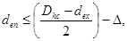
где Δ - толщина стенки сливного патрубка; dшл - диаметр шламового патрубка назначается из соотношения dшл/dex = 0,2 - 1,0 (для предупреждения засорения шламового патрубка его минимальный диаметр должен в 6 - 8 раз превышать максимальный размер частиц загрязнений); Hц - высота цилиндрической части для гидроциклонов осветлителей должна приниматься: Hц = (2 - 4)Dhc, для гидроциклонов сгустителей: Hц = (1 - 2)Dhc.
Угол конусности α конической части следует принимать для гидроциклонов осветлителей 5 - 15°, для гидроциклонов-сгустителей - 20 - 45°.
1.23. В зависимости от особенностей решаемых технологических задач могут применяться двухпродуктовые (см. рис. 10) и многопродуктовые (рис. 11) напорные гидроциклоны. В последнем случае аппараты имеют несколько сливных трубопроводов, отводящих целевые продукты из различных зон восходящего вихревого потока гидроциклонов. Такие конструкции аппаратов, как правило, применяются при разделении многофазных сред.
1.24. За последние годы в ряде отраслей промышленности широко внедряются мультигидроциклоны - монолитные или сборные блочные конструкции, включающие десятки или сотни единичных напорных гидроциклонов, имеющих единые питающие, сливные и шламовые камеры. Путем создания мультигидроциклонов успешно реализуется возможность промышленного применения высокоэффективных двухпродуктовых и многопродуктовых напорных гидроциклонов с малым диаметром цилиндрической части от 8 до 75 мм.
Таблица 5
|
Наименование узлов и деталей, технологические параметры |
Размеры основных узлов и деталей |
|||
|
ГЦ-150К* |
ГЦ-250К* |
ГЦ-360К* |
ГЦ-500К* |
|
|
Внутренний диаметр цилиндрической части Dhc, мм |
150 |
250 |
350 |
500 |
|
Сечение вкладыша питающего патрубка на входе в гидроциклон b×h, мм |
15×45 |
30×65 |
40×90 |
55×140 |
|
Диаметр патрубка питающего den, мм |
50 |
80 |
100 |
150 |
|
Насадок сливной dex, мм |
40 |
65 |
90 |
130 |
|
Патрубок сливной dex, мм |
65 |
100 |
125 |
150 |
|
Патрубок шламовый dшл, мм |
12; 17; 24 |
17; 24; 34 |
24; 34; 48 |
34; 48; 75 |
|
Угол конусности конической части α, град |
20 |
20 |
20 |
20 |
|
Масса гидроциклона, кг |
94 |
209 |
344 |
605 |
|
Объемная производительность Qen, м3/ч, при Pen = 0,03 - 0,25, МПа |
12 - 35 |
30 - 85 |
55 - 160 |
98 - 281 |
|
Граничная крупность разделения δгр, мкм |
28 - 95 |
37 - 135 |
44 - 180 |
52 - 240 |
* ГЦ - сокращенное название гидроциклона; цифры - внутренний диаметр цилиндрической части, мм; буква К - внутренняя поверхность стенок аппарата футерована каменным литьем.
Таблица 6
|
Размеры основных узлов и деталей |
||||||||||||
|
Тип гидроциклона* |
||||||||||||
|
ГН-25 |
ГН-40 |
ГН-60 |
ГН-80 |
ГНС-100 |
ГНС-123 |
ГНС-160 |
ГНС-200 |
ГНС-250 |
ГНС-320 |
ГНС-400 |
ГНС-500 |
|
|
Диаметр: цилиндрической части Dhc, мм |
25 |
40 |
60 |
80 |
100 |
125 |
160 |
200 |
250 |
320 |
400 |
500 |
|
питающего патрубка den, мм |
4, 6, 8 |
6, 8, 12 |
8, 12, 16 |
10, 12, 16, 20 |
12, 16, 20, 25 |
16, 25, 32, 40 |
20, 25, 32, 40, 50 |
25, 32, 40, 50, 60 |
32, 40, 50, 60, 80 |
40, 50, 60, 80, 100 |
50, 60, 80, 100, 125 |
60, 80, 100, 125, 160 |
|
сливного патрубка dex, мм |
5, 8, 12 |
8, 12, 16 |
12, 16, 20 |
16, 20, 32 |
20, 32, 40 |
25, 32, 40, 50 |
32, 40, 50, 60 |
40, 50, 60, 80 |
50, 60, 80, 100 |
60, 80, 100, 125 |
80, 100, 125, 160 |
100, 125, 160,200 |
|
шламового патрубка dшл, мм |
3, 4, 5 |
4, 5, 6 |
5, 6, 8 |
6, 8, 10, 12 |
8, 10, 12,16 |
8, 10, 12, 16 |
10, 12, 16, 20, 25 |
12, 16, 20, 25 |
16, 20, 25, 32, 40 |
16, 20, 25, 32, 40, 50 |
20, 25, 32, 40, 50 |
25, 32, 40, 50, 60 |
|
Угол конусности конической части α, град |
5, 10, 15 |
5, 10, 15 |
5, 10, 15, 20 |
5, 10, 15, 20 |
10, 15, 20 |
10, 15, 20 |
10, 15, 20 |
10, 15, 20, 30 |
10, 15, 20, 30 |
10, 15, 20, 30 |
15, 20, 30, 45 |
15, 20, 30, 45 |
|
Высота цилиндрической части Нц, мм |
25, 50, 75, 100 |
40, 80, 60, 120, 160 |
60, 120, 180, 240 |
80, 160, 240, 320 |
100, 200, 300, 400 |
125, 250, 375 |
160, 320, 480 |
200, 400, 600 |
250, 500, 750 |
320, 500, 750 |
400, 500, 800 |
500, 750, 1000 |
|
Глубина погружения сливного патрубка Hк, мм |
10, 16, 25 |
16, 25, 32 |
25, 32, 40 |
32, 40, 64 |
40, 64, 80 |
50, 64, 80, 100 |
64, 80, 100, 120 |
80, 100, 120, 160 |
120, 160, 200 |
120, 160, 200, 250 |
160, 200, 250, 320 |
200, 250, 320, 400 |
|
Объемная производительность Qen при Pen = 0,1 МПа |
0,3 - 1,1 |
0,6 - 2,2 |
1,1 - 3,7 |
1,8 - 6,4 |
2,7 - 10,1 |
4,4 - 21,1 |
6,7 - 31,8 |
10,2 - 47,4 |
16,3 - 78,7 |
24,05 - 117,3 |
37,67 - 180,3 |
54,6 - 282 |
|
Граничная крупность разделения δгр, мкм |
2,3 - 64 |
2,3 - 84,9 |
3,4 - 92,9 |
4,3 - 103,0 |
6,1 - 150 |
6,6 - 311 |
89 - 330,8 |
10,5 - 342 |
12,5 - 413,3 |
15,3 - 685,5 |
17,5 - 745,0 |
20,5 - 884 |
* ГН - гидроциклон напорный с монолитными элементами, ГНС - со сборными элементами рабочей камеры.
1.25. Для выделения из сточных вод частиц механических загрязнений крупностью δ = 50 - 100 мкм (табл. 5) рекомендуются конструкции напорных гидроциклонов малых диаметров, выпускаемых Усолье-Сибирским заводом горного оборудования.
Для выделения из сточных вод мелкодисперсных механических примесей и сгущения осадка - гидроциклоны опытно-экспериментального завода Дзержинского филиала Ленниихиммаш (табл. 6).
1.26. Гидроциклоны малых диаметров объединяются в батареи и блоки (мультициклоны), что позволяет при обеспечении требуемого эффекта очистки и производительности добиться максимальной компактности установки.
Батарейные гидроциклоны имеют единую систему питания, а также системы сбора верхнего и нижнего продуктов разделения. Батарейный гидроциклон, состоящий из 12 аппаратов Dhc = 75 мм, имеющий производительность 60 - 70 м3/ч, изготовляет опытно-экспериментальный завод Ленниихиммаш. Материал - нержавеющая сталь.
Аппарат рекомендуется к применению в технологических процессах очистки производственных сточных вод литейных, стекольных и керамических производств и т.д. Опытно-экспериментальный завод Дзержинского филиала Ленниихиммаш изготавливает батарейные гидроциклоны, включающие шесть единичных гидроциклонов Dhc = 125 мм (den = 25 мм; dex = 35 мм; dшл = 12 мм; α = 10°). С целью сокращения расхода шлама и повышения надежности работы батареи, единичные гидроциклоны снабжаются автопульсирующими шламовыми патрубками.
Производительность батарейного гидроциклона при давлении питания 0,4 МПа - 120 м3/ч. Материал - нержавеющая сталь.
Центральным научно-исследовательским институтом крахмало-паточной промышленности (ЦНИИКПП) разработаны конструкции мультигидроциклонов марки ГБ-2, ГБ-3, ГБ-6, ГБ-7, ГБ-8, (табл. 7). Серийное производство аппаратов осуществляет Кореневский опытный завод ЦНИИКПП.
Единичные аппараты изготовляют из пластмасс. Основные геометрические размеры и технологические параметры мультигидроциклонов приведены в табл. 7. Назначение аппаратов; разделение суспензий картофеле- и кукурузокрахмального производства. В технологии очистки сточных вод мультигидроциклонов ЦНИИКПП рекомендуется применять для механической очистки промышленных стоков, содержащих минеральные частицы размером δ = 200 мкм и плотностью ρт = 2,7 г/см3.
Таблица 7
|
Тип мультигидроциклонов |
|||||
|
ГБ-2* |
ГБ-3* |
ГБ-6** |
ГБ-7** |
ГБ-8** |
|
|
1 |
2 |
3 |
4 |
5 |
6 |
|
Единичный гидроциклон: |
|||||
|
диаметр цилиндрической части Dhc, мм |
20 |
20 |
20 |
20 |
20 |
|
размер питающего патрубка den, мм |
2×5 |
2×5 |
2×5 |
2×5 |
2×5 |
|
диаметр сливного патрубка dex, мм |
6 |
6 |
6 |
6 |
6 |
|
диаметр шламового патрубка dшл, мм |
3 |
3 |
3 |
3 |
3 |
|
Угол конической части α, град |
10 |
10 |
10 |
10 |
10 |
|
Число гидроциклонов в выпускаемых блоках, шт. |
29 |
48 |
16 |
24 |
48 |
|
Давление питания мультигидроциклонов Pen, МПа |
0,4 - 0,5 |
0,4 - 0,5 |
0,4 - 0,5 |
0,4 - 0,5 |
0,4 - 0,5 |
|
Объемная производительность блока Qen, м3/ч |
15,0 |
25,0 |
8,0 |
15,0 |
25,0 |
|
Габариты блока мультигидроциклонов, мм: |
|||||
|
высота |
1017 |
1147 |
1243 |
1336 |
1410 |
|
ширина |
475 |
475 |
374 |
440 |
477 |
|
длина |
475 |
475 |
400 |
400 |
400 |
|
Масса блока мультигидроциклонов, кг |
250 |
290 |
60 |
96 |
133 |
* Мультигидроциклоны первого выпуска.
** Модернизированная конструкция мультигидроциклонов.
Рис. 12. Кинетика отстаивания сточных вод фасонно-формовочного цеха (С0 = 300 мг/л; h = 200 мм)
1.27. Для проектирования гидроциклонных установок должны быть заданы те же данные о характеристике сточных вод и механических загрязнений, что и при проектировании других методов механической очистки.
1.28. По кривой кинетики отстаивания (рис. 12) по заданному эффекту очистки определяется охватывающая гидравлическая крупность U0, мм/с:
затем из точки на оси ординат, соответствующей требуемому эффекту очистки, проводится касательная к кривой Э = f(t), из точки касания опускается перпендикуляр на ось абсцисс и по найденному времени tгр. Определяется граничная гидравлическая крупность Uгр задерживаемых частиц, мм/с:
по которой по формуле Стокса рассчитывается граничный диаметр задерживаемых при заданном эффекте частиц
1.29. После определения граничной крупности частиц, которые требуется выделить по табл. 5 - 7, подбирается диаметр гидроциклона, в котором эти частицы могут быть выделены, назначаются размеры его основных узлов den, dex, dшл, HцαHк (см. рис. 10) и назначается давление Pen, под которым исходная вода будет подаваться на гидроциклоны. Затем исходя из заданных размеров гидроциклона рассчитывается граничная крупность разделения, мкм:
1.30. В случае если рассчитанная крупность δгр будет больше крупности, которая соответствует требуемому эффекту очистки, определенной по формуле (32), то подбор гидроциклона необходимо повторить, изменяя его конструктивные размеры и давление на входе. На основании формулы (32) в ГИСИ им. В.В. Куйбышева составлена номограмма, упрощающая определение δгр.
1.31. После уточнения всех геометрических размеров гидроциклона определяется его производительность. Для гидроциклонов, работающих без противодавления, расчет производительности следует производить по формуле (42) СНиП 2.04.03-85. Для получения более точных расчетов рекомендуется следующая формула, л/с:
Qen = 1,03Dhc0,053den1,28dex0,405dшл0,143Hц0,015α0,025Pen0,443. (33)
После определения производительности одного аппарата, исходя из общего количества сточных вод, определяют число рабочих гидроциклонов, назначают общее количество аппаратов и приступают к проектированию гидроциклонной установки в соответствии со СНиП 2.04.03-85.
1.32. Потери воды с выделенным осадком, удаляемым через шламовую насадку dшл, л/с, определяются по уравнению
1.33. Для примерного расчета потерь воды с выделяемым осадком следует принимать для гидроциклонов диаметром меньше 100 мм - 0,07 - 0,08Qen, более 100 мм - 0,04 - 0,03Qen.
Пример 7. Требуется рассчитать открытий гидроциклон для очистки сточных вод, образующихся при мойке грузовых автомобилей. Расход сточных вод составляет 50 м3/ч. Гидроциклон применен на первой ступени очистки и должен задерживать частицы гидравлической крупностью 0,3 мм/с.
Для расчета принимаем открытый гидроциклон с конической диафрагмой и внутренним цилиндром (см. рис. 7, в).
По формуле (38) СНиП 2.04.03-85 рассчитываем удельную гидравлическую нагрузку на гидроциклон
qhc = 3,6 · 1,98 · 0,3 = 2,14 м3/(м2 · ч).
Определяем общую площадь зеркала воды в гидроциклонах
Fhc = 50/2,14 = 23,4 м2.
Задавшись диаметром гидроциклона Dhc = 3 м, рассчитываем их количество N, шт.:
N = 23,4/32 · 0,785 = 3,3.
Принимаем 3 гидроциклона диаметром Dhc = 3 м.
По табл. 4 рассчитываем все конструктивные размеры гидроциклона с конической диафрагмой и внутренним цилиндром (графа 5): высота цилиндрической части, Hhc = 3 м; диаметр впускного патрубка den = 150 мм; количество патрубков n = 2; угол конической части α = 60о; угол конуса диафрагм β = 90°; диаметр центрального отверстия в диафрагме dd = 1,5 м; диаметр внутреннего цилиндра D1 = 2,64 м; высота внутреннего цилиндра H1 = 3 м; высота водосливной стенки H2 = 0,5 м; диаметр водосливной стенки D2 = 3,2 м; диаметр водопогруженного щита D3 = 3 м.
Выбираем материал для изготовления гидроциклона.
При решении о применении железобетона для выполнения корпуса аппарата в проекте обязательно должно быть оговорено непременное применение опалубки, позволяющей получить гладкую внутреннюю поверхность в аппарате.
Далее с учетом п. 6.89 СНиП 2.04.03-85 приступают к проектированию схемы гидроциклонной установки.
Пример 8. Требуется запроектировать установку с многоярусными гидроциклонами для очистки сточных вод цеха среднесортного проката. Расход сточных вод 1500 м3/ч. Расход воды практически постоянен в течение суток. Температура воды Tw в течение года изменяется в пределах 15 - 30 °С. Концентрация взвесей в исходной воде составляет 250 мг/л, масла 60 мг/л.
В очищенной воде содержание тяжелых примесей не должно превышать 60 мг/л, масел 25 мг/л. По данным анализа кривых кинетик отстаивания сточных вод при температуре 20 °С в слое h = 200 мм, требуемая степень очистки обеспечивается при задержании частиц тяжелых примесей крупностью 0,3 мм/с и 0,5 мм/с - легче воды, поэтому за расчетную принимается 0,3 мм/с.
Принимаем многоярусный гидроциклон с центральными выпусками (см. рис. 8).
Расчет производится в следующем порядке.
Задаемся диаметром гидроциклона Dhc = 5 м.
По формулам (38), (39) СНиП 2.04.03-85 рассчитываем удельную гидравлическую нагрузку, приходящуюся на один ярус гидроциклона:
qhc = 3,6 · 0,75 · 0,3 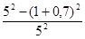
Зная диаметр аппарата (Dhc = 5 м), определим расход воды, который может подаваться на один ярус:
qhc = 0,785 · 52 · 0,7 = 13,73 м3/ч.
Определяем количество ярусов
nti = 1200/13,73 = 87,4 ≈ 88 шт.
Задавшись количеством ярусов в гидроциклоне n = 15 шт., определяем количество рабочих аппаратов
N = 88/15 ≈ 6 шт.
По табл. 4 назначаем основные размеры аппарата.
Пример 9. Требуется запроектировать установку с многоярусными гидроциклонами для очистки сточных вод от вагранок литейного цеха.
Расход сточных вод 680 м3/ч. Расход воды практически постоянен в течение суток. Температура воды в течение года изменяется в пределах 22 - 60 °С. За расчетную принимаем 30 °С. Концентрация взвесей в исходной воде составляет 800 - 1200 мг/л. В очищенной воде содержание тяжелых примесей не должно превышать 150 мг/л.
По данным анализа кривых кинетик отстаивания сточных вод при температуре 20 °С, в слое h = 200 мм требуемая степень очистки обеспечивается при задержании частиц крупностью 0,2 мм/с.
В качестве очистного сооружения принимаем многоярусный гидроциклон с периферийным отбором очищенной воды (см. рис. 9). Расчет производится в следующем порядке.
Задаемся следующими параметрами гидроциклона: диаметр гидроциклона Dhc = 5 м; диаметр центрального отверстия верхней диафрагмы прямоточного яруса dd = 1 м; высота ярусов hti = 0,12 м.
По формулам (38), (40) СНиП 2.04.03-85 рассчитываем удельную гидравлическую нагрузку, приходящуюся на один ярус гидроциклона, b - ширина периферийной щели для отвода очищенной воды, назначаем b = 0,1 м; Kset - коэффициент использования объема яруса, так как гидравлическая нагрузка на ярус обещает быть небольшой, принимаем Kset = 0,4.
Если температуру оборотной воды принимаем равной 30 °С, тогда гидравлическая крупность по зависимости (31) СНиП 2.04.03-85 при этой температуре составит
U0t = 0,2 · 1/0,8 = 0,25 мм/с;
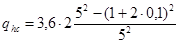
Зная диаметр аппарата (Dhc = 5 м), определим расход воды, который может подаваться на один ярус
Qhc = Fhcqhc = 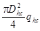
Определим количество ярусов
nti = 680/13,33 = 51 шт.
Задавшись количеством пар ярусов в гидроциклоне n1 = 15 шт., определим количество аппаратов
N = 51/15 = 3,4 ≈ 4 шт.
По табл. 4 (графа 7) назначаем все остальные размеры многоярусного гидроциклона:
высоту цилиндрической части определяем исходя из количества ярусов Hц = 2htinti + 400 = 4000 мм; количество впусков nen = 3; угол конической части, α = 60°; угол конуса диафрагм, β = 50°; диаметр центрального отверстия, dd = 1 м; высоту ярусов принимаем hti = 0,12 м; зазор между корпусом и диафрагмой ΔD = 0,1 м; скорость потока на входе υen = 0,3 м/с; размер впускной щели: высота 0,12 м; ширина 13,3 · 1000/0,3 · 3600 = 12 мм; высота водосливной стенки H2 = 0,5 м.
Пример 10. Требуется запроектировать очистные сооружения фасонно-формовочного цеха, сточные воды которого в основном представлены пылевидными частицами песка, глины, шлака, формовочной земли и т.д. Расход сточных вод в среднем составляет 120 м3/ч. Концентрация взвешенных веществ изменяется в пределах 1500 - 3000 мг/л. Кривая кинетики отстаивания приведена на рис. 12. По требованиям производств эту воду необходимо очистить до 10 мг/л, т.е. 99,7 % Подобные жесткие требования диктуются условиями предохранения плунжерных насосов от образивного износа. Этими насосами очищенная сточная вода будет подаваться в технологический процесс. Температура воды 20 °С; pH = 6 - 7. Удельный вес механических загрязнений в среднем равен: ρт = 2,6 г/см3.
Расход воды следует считать постоянным в течение суток.
Для достижения столь грубой степени очистки принимаем двухступенную схему очистки, по которой на первой ступени применены напорные гидроциклоны, в которых обеспечивается удаление основной массы механических загрязнений (Э = 80 %), на второй ступени - отстаивание с применением реагентов. В данном примере рассматривается лишь расчет напорных гидроциклонов.
По кривой кинетики отстаивания (см. рис. 12) по заданному эффекту Э = 80 % определяем охватывающую гидравлическую крупность U0 = 200/10,60 = 0,33 мм/с.
Затем из точки на оси ординат, соответствующей заданному эффекту очистки (80 %), проводим касательную к кривой. Из точки касания опускаем перпендикуляр на ось абсцисс и по найденному времени tгр = 16,5 мин рассчитываем граничную гидравлическую крупность
Uгр = 200/(16,5 · 60) = 0,2 мм/с.
Затем по формуле (31) рассчитываем граничный диаметр δгр, мкм, задерживаемых частиц
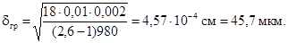
После определения граничной крупности по табл. 6 подбираем гидроциклон, который может выделить частицы этой крупности Dhc = 80 мм и по этой же таблице в соответствии с рекомендуемыми соотношениями СНиП 2.04.03-85 назначаем размеры основных рабочих узлов den = 80 · 0,25 = 20 мм; dex = 20/0,6 = 32 мм; dшл = 10; Hц = 4Dhc = 4 · 80 = 320 мм; α = 10°;
Hк = Dhc/(2tg α/2) = 457 мм.
Давление питания принимаем Pen = 0,3 МПа.
По формуле (32) определяем δгр
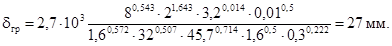
Вследствие того, что полученное значение δгр = 27 мкм меньше значения δгр = 47,5 мк, которое требуется обеспечить, ожидается, что подобранный гидроциклон обеспечит эффект очистки несколько выше задаваемого.
В случае, если определенная δгр была бы больше заданного, потребовалось бы подбор повторить, задаваясь другими размерами гидроциклона.
Далее по формуле (33) определяем производительность одного аппарата
Qen = 1,03 · 0,80,053 · 21,28 · 3,20,405 · 1,60,143 · 3,20,015 · 100,025 · 0,30,443 = 3,7 л/с = 13,3 м3/ч.
Исходя из общего количества сточных вод для их очистки потребуется гидроциклонов
N = 120/13,4 = 8,9 ≈ 9 шт.
В соответствии с п. 6.91 СНиП 2.04.03-85 установка должна включать 9 рабочих аппаратов и 1 (один) резервный. После определения количества гидроциклонов определяем расход воды, удаляемой со шламом, на который нужно рассчитывать уплотнитель осадка
qшл = 0,07(13,4 · 9) = 8,4 м3/ч.
2.1. В соответствии с СНиП 2.04.03-85 технологические параметры аэротенков определяются расчетом по зависимостям (48) - (67). На очистных станциях производительностью более 30000 м3/сут аэротенки, как правило, устраиваются в виде железобетонных резервуаров глубиной 4 - 5 м, шириной коридоров 6 - 9 или 12 м. Количество коридоров и их длина зависят от типа аэротенка и компоновки очистных сооружений.
2.2. Сооружения этого типа целесообразно применять для очистки производственных сточных вод при относительно небольших колебаниях их состава и присутствии в воде преимущественно растворенных органических веществ, например на второй ступени биологической очистки сточных вод II системы канализации нефтеперерабатывающих заводов.
Пример. Исходные данные: расчетный расход сточных вод в смеси с городскими 1250 м3/ч; БПКполн воды (после аэротенков I ступени) и смешения с городскими в соотношении 1:1 (Len) = 150 мг/л; БПКполн очищенной воды (Lex) = 15 мг/л.
Значения констант принимаются из уравнения (40) СНиП 2.04.03-85: ρmax = 59 мг БПКполн/(г · ч); Kl = 24 мг/л; Ko = 1,66 мг/л; φ = 0,158 л/г.
Доза ила и концентрация растворенного кислорода должны определяться по технико-экономическим расчетам. В данном случае практически установлены ai = 2 г/л; CO = 2 мг/л. Величина ρ, рассчитанная по уравнению (49) СНиП 2.04.03-85, составит
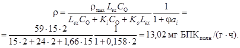
Период аэрации определяется по уравнению (48) СНиП 2.04.03-85
tatm = (Len - Lex)/ai(1
- s)ρ = 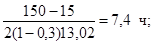
qi = 24tatm.
Объем аэротенков
Wat = qωtatm = 1250 · 7,4 = 9250 м3.
Степень рециркуляции определяется по формуле (52) СНиП 2.04.03-85. В первом приближении принимать Ji = 100 см3/г, который потом уточняется по табл. 41 СНиП 2.04.03-85, исходя из нагрузки на ил.
Аэротенки-смесители с регенераторами
2.3. Эти сооружения применяются для очистки производственных сточных вод со значительными колебаниями состава и расхода стоков и присутствии в них эмульгированных и биологически трудноокисляемых компонентов, например, при очистке сточных вод I ступени второй системы канализации НПЗ.
Пример расчета.
Исходные данные: расчетный расход (с учетом неравномерности поступления) qω = 625 м3/ч; Len = 300 мг/л; Lex = 100 мг/л.
Значения констант уравнения (49) приведены в табл. 40 СНиП 2.04.03-85: ρmax = 59 мг БПКполн/(г · ч); KI = 24 мг/л; KO = 1,66 мг/л; φ = 0,158 л/г.
По данным технико-экономического расчета или опыту эксплуатации принимаются величины средней дозы ила ai mix = 3,5 г/л и концентрации растворенного кислорода СO = 2 мг/л.
Для расчета аэротенков, предназначенных для очистки производственных сточных вод, степень регенерации Rr задается по данным исследований или по опыту эксплуатации.
В данном случае степень регенерации принимается Rr = 0,3 (объем, занятый регенератором, составляет 30 %), иловой индекс Ji = 100 см3/г.
По формуле (52) СНиП 2.04.03-85 определяется коэффициент рециркуляции
Ri = ai/(1000/Ji - ai) = 3,5/(1000/100 - 3,5) = 0,54.
Средняя скорость окисления ρ в системе аэротенка с регенератором при ai mix = 3,5 г/л определяется по формуле (49) СНиП 2.04.03-85, а значения констант по табл. 40 СНиП 2.04.03-85
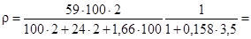
Общий период окисления при ρ = 18,3 рассчитываем по формуле (48) СНиП 2.04.03-85
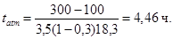
Общий объем аэротенка и регенератора
Watm + Wr = qωtatm = 625 · 4,46 = 2788 м2.
Общий объем аэротенка определяется по формуле
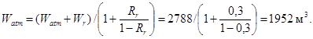
Объем регенератора Wr = 2788 - 1952 = 836 м3.
С учетом величины периода аэрации следует уточнить нагрузку на ил, а затем значения илового индекса. По формуле (53) СНиП 2.04.03-85 определим значения qi
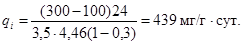
По табл. 41 СНиП 2.04.03-85 при этом значении qi для сточных вод НПЗ Ji = 74 см3/г, что отличается от ранее принятого Ji = 100 см3/г.
С учетом скорректированного значения Ji по формуле (52) СНиП 2.04.03-85 уточняется величина коэффициента рециркуляции
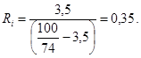
Для расчета вторичного отстойника уточняется доза ила в аэротенке по следующей формуле:
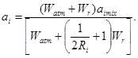
Подставляя численные значения в формулу (35), получим
ai = (2788 · 3,5)/[1952 + (1/(2 · 0,35)836] = 2,45 г/л.
Гидравлическая нагрузка на вторичный отстойник определяется по формуле (67) СНиП 2.04.03-85 с учетом допустимого выноса ила из отстойника после I ступени биологической очистки at = 30 мг/л. Принимается радиальный отстойник с коэффициентом использования объема Kss = 0,4, для которого при глубине зоны отстаивания 3 м гидравлическая нагрузка будет равна:
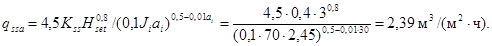
2.4. Сооружения этого типа применяются для очистки городских сточных вод и близких к ним по составу промышленных при незначительных колебаниях в составе и расходе.
Пример расчета.
Исходные данные: расчетный часовой расход сточных вод qω = 4200 м3/ч; величина БПКполн исходной воды Len - 250 мг/л; требуемая величина БПКполн очищенных вод Lex - 15 мг/л; допустимый вынос ила из вторичных отстойников at - 15 мг/л.
В начале по формуле (52) СНиП 2.04.03-85 определяется степень рециркуляции Ri, причем, в первом приближении принимается величина Ji = 100 см3/г. Доза ила в аэротенке определяется оптимизационным расчетом с учетом работы вторичных отстойников, ориентировочно ai = 3 г/л
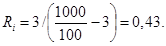
Величина БПКполн воды, поступающей в начало аэротенка-вытеснителя Lmix, определяется по формуле (51) СНиП 2.04.03-85 с учетом разбавления циркуляционным илом
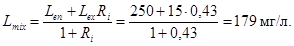
Период пребывания сточных вод в аэротенке рассчитывается по формуле
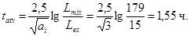
Доза ила в регенераторе определяется зависимостью (55) СНиП 2.04.03-85. В первом приближении
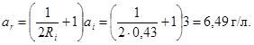
Удельная скорость окисления ρ рассчитывается по формуле (49), где величины констант и коэффициентов следует брать из табл. 40 СНиП 2.04.03-85. Для городских сточных вод ρmax = 85 мг БПКполн/(г · ч); Kl = 33 мг/л; KO = 0,625 мг/л; φ = 0,07 л/г; s = 0,3.
Концентрация кислорода и доза ила определяется оптимизационным расчетом. Для регенератора принимается в данном случае CO = 2 мг/л, ar = 6,49 г/л,
16,6 мг · БПКполн/(г · ч).
Продолжительность окисления загрязнений рассчитывается по формуле (54) СНиП 2.04.03-85
Продолжительность регенерации ила по формуле (57) СНиП 2.04.03-85
tr = tO - tat = 7,29 - 1,55 = 5,74 ч.
Продолжительность пребывания в системе аэротенк-регенератор рассчитывается по формуле
Подставив численные значения, получим t = (1 + 0,43)1,55 + 0,43 · 5,74 = 4,68 ч.
Объем аэротенка определяется по формуле (58) СНиП 2.04.03-85
Wat = tatυ(1 + Ri)qω = 1,55(1 + 0,43)4200 = 9309 м3.
Объем регенератора - по формуле (59) СНиП 2.04.03-85
Wr = trRiqω = 5,74 · 0,43 · 4200 = 10366 м3.
Для уточнения илового индекса определяется средняя доза ила в системе аэротенк-регенератор по формуле
aimix = [(1 + Ri)tatai + Ritrar]/t, (37)
Подставив численные значения, получим
aimix = [(1 + 0,43)1,55 · 3 + 0,43 · 5,74 · 6,49]/4,68 = 5,45 г/л.
По формуле (53) СНиП 2.04.03-85 определяется нагрузка на ил qi, где доза ила принимается равной величине aimix, а период аэрации равен продолжительности пребывания в системе аэротенк-регенератор t:
По табл. 41 СНиП 2.04.03-85 для ила городских сточных вод при qi = 355 мг/(г · сут), Ji = 76 см3/г. Эта величина отличается от принятой ранее Ji = 100 см3/г.
По формуле (52) СНиП 2.04.03-85 с учетом скорректированной величины Ji = 76 см3/г уточняется степень рециркуляции
Ri = 3/(1000/76 - 3) = 0,29.
Принимается Ri = 0,3. Эта величина существенно отличается от рассчитанной в первом приближении, поэтому нуждается в уточнении величины Lmix и tat. По формуле (51) СНиП 2.04.03-85
Lmix = (250 + 15 · 0,3)/(1 + 0,3) = 196 мг/л.
По формуле (56) СНиП 2.04.03-85
По формуле (55) СНиП 2.04.03-85
По формуле (49) СНиП 2.04.03-85
15,47 мг · БПКполн/(г · ч).
По формуле (54) СНиП 2.04.03-85
По формуле (57) СНиП 2.04.03-85
tr = 9,04 - 1,6 = 7,44 ч.
Продолжительность пребывания в системе аэротенк-регенератор по формуле (36)
t = (1 + 0,3)1,6 + 0,3 · 7,44 = 4,31 ч.
Объем аэротенка по формуле (58) СНиП 2.04.03-85
Wat = 1,6(1 + 0,3)4200 = 8790 м2.
Объем регенератора по формуле (57) СНиП 2.04.03-85
Wr = 7,44 · 0,3 · 4200 = 9374 м3.
Далее необходима проверка величины ai mix по формуле (37)
aimix = [(1 + 0,3)1,6 · 3 + 7,44 · 0,3 · 8]/4,31 = 4,79 г/л,
с учетом которой нагрузка на ил будет равна:
величина Ji по табл. 41 СНиП 2.04.03-85 равна 79 см3/г, что не существенно отличается от ранее определенного значения этой величины, и дальнейшей корректировки расчетов не требуется.
Вторичные отстойники для аэротенков-вытеснителей с регенераторами рассчитываются по формуле (67) СНиП 2.04.03-85, в котором значения ai и at соответствуют первоначально заданным величинам, значение Ji принимается на основе последних корректировок, в данном случае для радиальных отстойников при Kss = 0,4 и Hset = 3 м
2.5. Сооружения этого типа рекомендуется применять для очистки городских и близких к ним по составу производственных сточных вод с БПКполн не более 150 мг/л, либо на второй ступени биологической очистки.
Пример расчета.
Исходные данные: расчетный расход сточных вод qω = 4200 м3/ч, для городских сточных вод БПКполн исходной воды Len - 150 мг/л; БПКполн очищенных вод Lex - 15 мг/л; вынос ила из вторичных отстойников at - 15 мг/л.
В начале определяется степень рециркуляции Ri, в которой величина илового индекса в первом приближении принимается Ji = 100 см3/г, доза ила в аэротенке - ai устанавливается в результате технико-экономических расчетов. Ориентировочно ai = 2 г/л. По формуле (52) СНиП 2.04.03-85
Ri = 2/(1000/100 - 2) = 0,25.
Для обеспечения нормального удаления ила из вторичных отстойников с илососами следует принимать Ri = 0,3.
БПКполн воды, поступающей в начало аэротенка-вытеснителя Lmix с учетом разбавления циркуляционным илом рассчитывается по формуле (51) СНиП 2.04.03-85
Период аэрации определяется по уравнению (50) СНиП 2.04.03-85, в котором значения констант и коэффициентов для рассматриваемого примера по табл. 40 СНиП 2.04.03-85 имеют следующие значения: ρmax = 85 мг/(г · ч), Kl = 33 мг/л; KO = 0,625 мг/л; φ = 0,07 л/г; s = 0,3. При Lex = 15 мг/л коэффициент Kp = 1,5. Концентрация кислорода определяется технико-экономическими расчетами с учетом типа аэраторов. Приближенно CO = 2 мг/л
Объем аэротенка и вытеснителя с учетом рециркуляционного расхода определяется по зависимости (58) СНиП 2.04.03-85
Wat = tatv(1 + Ri)qω = 2,96(1 + 0,3)4200 = 16162 м3.
Для расчета вторичного отстойника следует уточнить величину илового индекса по нагрузке на ил, которая рассчитывается по формуле (53) СНиП 2.04.03-85, где для аэротенка-вытеснителя без регенерации исходная величина БПК равна Lmix:
По табл. 41 СНиП 2.04.03-85 при qi = 421 мг/(г · сут) Ji = 83 см3/г.
При новом значении илового индекса степень рециркуляции уточняется по формуле (52) СНиП 8.04.03-85
но для обеспечения нормального удаления ила следует принять Ri = 0,3, и, следовательно, дальнейший расчет в корректировке не нуждается.
Гидравлическая нагрузка qssa на вторичный отстойник определяется по формуле (67) СНиП 2.04.03-85, в котором величина илового индекса принимается после последней корректировки Ji = 83 см3/г. Для радиальных отстойников с Kss = 0,4; Hset = 3 м;
2.6. Аэраторы должны обеспечивать заданный кислородный режим и необходимую интенсивность перемешивания в аэротенках.
2.7. Пневматические аэраторы рассчитываются по зависимостям, приведенным в п. 6.157 СНиП 2.04.03-85. В конструкции мелкопузырчатых аэраторов могут применяться фильтросные пластины и трубы, синтетические ткани, пористые пластины и т.п.
При использовании пористых материалов удельный расход воздуха на единицу рабочей поверхности аэраторов Ja,d зависит от индивидуальных свойств этих материалов и назначается в пределах Ja,d = 30 - 100 м3/(м2 · ч); для фильтросных пластин - Ja,d = 60 - 80 м3(м2 · ч), для фильтросных труб - Ja,d = 70 - 100 м3/(м2 · ч), считая на площадь горизонтальной проекции трубы, для синтетических тканей (арт. 56007, арт. 56026) Ja,d = 50 - 80 м3/(м2 · ч). Потери напора в фильтросных материалах и тканях следует принимать 0,7 - 1 м. Скорость выхода воздуха из отверстий дырчатых труб - 50 м/с.
При использовании аэраторов из синтетических тканей или пористых пластмасс целесообразны конструкции в виде решеток шириной до 2 м, что позволяет увеличить площадь полосы аэрации (отношение faz/fat = 0,2 - 0,3), повысить эффективность использования и снизить удельный расход воздуха.
2.8. В аэротенках-смесителях пневматические аэраторы располагаются вдоль одной стены коридора равномерно по всей их длине. Количество фильтросных пластин или труб определяется с учетом необходимой интенсивности аэрации и рекомендуемых значений Ja,d. В регенераторах аэраторы размещаются неравномерно по длине: в первой половине в 2 раза больше, чем во второй.
2.9. В аэротенках-вытеснителях аэраторы располагаются неравномерно в соответствии со снижением концентрации загрязнений и скоростей биохимического окисления.
Пример расчета.
Исходные данные: вид сточных вод (например, городские); расход сточных вод qω = 4200 м3/ч; солесодержание воды Cs = = 3 г/л; БПКполн исходной и очищенной воды Len и Lex - 150 и 15 мг/л; расчетная температура воды Тω - 20 °С.
Удельный расход воздуха qair определяется по формуле (61) СНиП 2.04.03-85 для условий полной биологической очистки. В рассматриваемом примере удельный расход кислорода qO = 1,1 и средняя концентрация кислорода в аэротенке CO = 2 мг/л.
По данным расчета объем аэротенка Watv = 16162 м3. Приняв по конструктивным соображениям длину коридора l = 60 м и рабочую глубину Hat = 4 м, общая ширина аэротенка будет равна:
Bat = Watv/Hatl = 16162/(4 · 60) = 67 м.
Приняв ширину одного коридора b = 6 м, число коридоров будет равно:
nk = Bat/b = 67/6 = 11,17.
Следует принять nk = 12 и соответственно изменить и длину коридора l
Bat = nkb = 12 · 6 = 72 м; l = Watv/HatBat = 16162/(4 · 72) = 56 м.
В зависимости от температуры воды, ее солесодержания и глубины погружения аэратора растворимость кислорода определяется зависимостью
(38)
где ha = Hat - hay; при hay = 0,3 м; ha = 4 - 0,3 = 3,7 м; Tω = 20 °С; Cs = 3 г/л;
Приняв в первом приближении faz/fat = 0,1; по табл. 42 СНиП 2.04.03-85 K1 = 1,47 для аэратора из фильтросных труб при ha = 4 м, по табл. 43 СНиП 2.04.03-85 K2 = 2,52. При 20 °С коэффициент Kт = 1.
Рис. 13. Зависимость Lex от продолжительности пребывания в аэротенках-вытеснителях
Для городских сточных вод коэффициент K3 = 0,85. Приведем значения коэффициентов K3 для некоторых видов производственных сточных вод
Источники сточных вод K3
Целлюлозно-бумажные комбинаты........................................ 0,7 - 0,8
Молочные заводы.......................................................................... 0,8
Производства крафт-бумаги........................................................ 0,7
Деревообрабатывающие производства...................................... 0,68
Бумажные фабрики...................................................................... 0,85
Картонажные фабрики........................................................... 0,53 - 0,64
Фармацевтические заводы....................................................... 0,8 - 1,6
Заводы синтетического волокна............................................... 1 - 1,8
Для определения интенсивности аэрации по длине аэротенка-вытеснителя строится график изменения БПКполн во времени (рис. 13). Периоды аэрации для заданных промежуточных значений Lex определяются расчетом по формуле (50) СНиП 2.04.03-85. Данные расчетов для условий рассматриваемого примера приведены в табл. 8.
На графике (см. рис. 13) интервал времени, соответствующий продолжительности аэрации, при которой достигается Lex = 15 мг/л, делится на равные части (по принятому числу ячеек аэротенка-вытеснителя), например на 6 частей. Для периодов аэрации в каждой ячейке с помощью полученной кривой (см. рис. 13.) определяются значения БПКполн на входе и выходе из ячеек. Эти данные приведены в табл. 9.
Таблица 8
|
Lmix, мг/л |
119 |
119 |
119 |
119 |
119 |
|
Lex, мг/л |
100 |
75 |
50 |
25 |
15 |
|
tatv, ч |
0,44 |
1,06 |
1,73 |
2,53 |
2,96 |
Таблица 9
|
Номер ячейки |
Примечания |
||||||
|
I |
II |
III |
IV |
V |
VI |
||
|
Len, мг/л |
119 |
95 |
75 |
56 |
40 |
25 |
По рис. 13 |
|
Lex, мг/л |
95 |
75 |
56 |
40 |
25 |
14 |
То же |
|
qO, мг/мг |
0,9 |
0,9 |
0,9 |
0,9 |
1,0 |
1,1 |
- |
|
Len - Lex |
|||||||
|
qair, м3/м3 |
1,02 |
0,85 |
0,81 |
0,68 |
0,71 |
0,47 |
- |
|
Ja, м3/(м2 · ч) |
6,38 |
5,32 |
5,06 |
4,25 |
4,43 |
2,95 |
- |
|
Q¢air, м3/ч |
4284 |
3570 |
3402 |
2856 |
2982 |
1974 |
- |
|
nd, ед. |
1,82/2 |
1,52/2 |
1,44/2 |
1,21/1 |
1,27/1 |
0,84/1 |
- |
Примечание. Под чертой указано принятое число рядов фильтросных труб.
На основе данных табл. 9 по формуле (39) определяется интенсивность аэрации в каждой ячейке
(39)
где q¢air - удельный расход воздуха для каждой ячейки определяется по формуле (61) СНиП 2.04.03-85.
Для рассматриваемого примера количество ячеек принято nja = 6, общая продолжительность аэрации в сооружении по табл. 8 tatv = 2,96 ч.
Количество рядов пневматических аэраторов (например, фильтросных труб) определяется по формуле
(40)
В рассматриваемом примере ширина коридора аэротенка принята b = 6 м, удельный расход воздуха на аэратор для фильтросных труб Jad = 70 м3/(м2 · ч), площадь одного ряда аэратора на 1 м фильтросных труб dy = 300 мм; f¢d = 0,3 м2/м. Расход воздуха Q¢air, м3/ч, в каждой ячейке определяется по формуле
Общий расход воздуха на аэротенк Qair равен сумме всех Q¢air.
Для более точного регулирования подачи воздуха на воздуховодах каждой ячейки следует установить расходомеры с задвижками или вентилями.
2.10. В аэротенках-вытеснителях с регенераторами удельный расход воздуха определяется по формуле (61) СНиП 2.04.03-85. Количество аэраторов на первой половине длины аэротенков и регенераторов принимается вдвое больше, чем на остальной длине коридора.
Для условий рассмотренного примера в п. 2.9 удельный расход воздуха, рассчитанный по формуле (61) СНиП 2.04.03-85, составил
Общий расход воздуха Qair = 12,22 · 4200 = 51309 м3/ч.
Средняя интенсивность аэрации
Ja = (12,22 · 4)/3,76 = 13,03 м3/(м2 · ч).
Интенсивность аэрации на первой половине аэротенка и регенератора Ja1 = 1,33Ja, на второй - Ja2 = Ja1,33/2 = 0,67Ja.
При ширине коридора аэротенка b = 6 м, удельном расходе воздуха на аэратор в виде фильтросных труб Jad = 90 м3/(м2 · ч) и площади одного ряда фильтросных труб dy = 300 мм; f¢d = = 0,3 м2/м.
Количество рядов фильтросных труб в первой половине аэротенка вытеснителя составило
во второй половине: nd2 = 3,92/2 = 1,96.
В данном случае следует принять на первой половине аэротенка и регенератора число рядов фильтросных труб - 4, на второй половине - 2, соответственно распределив расходы воздуха.
2.11. С целью сокращения длины воздуховодов количество стояков для подвода воздуха к аэраторам следует ограничить минимально возможным числом, которое определяется из заданной неравномерности распределения воздуха вдоль коридора аэротенка.
Таблица 10
|
Допустимая неравномерность подачи воздуха, % |
Максимальная удельная производительность, м3/(м · ч) |
Перепад давления, кПа |
||||
|
Наружный диаметр |
толщина стенки |
5 |
10 |
15 |
||
|
длина трубы на 1 стояк, м |
||||||
|
242 |
29 |
25 |
43 |
53 |
112 |
3 - 10 |
|
260 |
30 |
29 |
51 |
60 |
115 |
3 - 10 |
|
288 |
30 |
33 |
56 |
72 |
126 |
3 - 10 |
Число стояков зависит от длины обслуживаемого ими участка фильтросного канала, фильтросной или дырчатой трубы.
Параметры аэраторов из фильтросных труб приведены в табл. 10, из фильтросных пластин - в табл. 11, из дырчатых труб - в табл. 12.
Таблица 11
|
Геометрические размеры, мм |
Допустимая неравномерность подачи воздуха, % |
Максимальная удельная производительность, м3/(м · ч) |
Перепад давления, кПа |
|||
|
ширина |
глубина |
5 |
10 |
15 |
||
|
длина канала на 1 стояк, м |
||||||
|
250 |
100 |
64 |
78 |
88 |
30 |
2 - 10 |
|
250 |
200 |
120 |
146 |
150 |
30 |
2 - 10 |
Пример. Определить основные параметры аэратора (фильтросный канал) для обеспечения аэрации коридора аэротенка-смесителя длиной 100 м, шириной 9 м с интенсивностью аэрации 10 м3/(м2 · ч) при допускаемой неравномерности подачи воздуха 15 %.
Интенсивность подачи воздуха на 1 м длины коридора
J"a = J¢bb = 10 · 9 = 90 м3/(м · ч).
Указанная интенсивность при перепаде 1,5 кПа (новые пластины) может быть обеспечена установкой трех параллельных рядов фильтросных каналов. Для допустимой неравномерности 15 % при глубине канала 100 мм находим из табл. 11 максимальную длину аэратора на 1 стояк - 88 м. Стояк присоединен к середине обслуживаемого им участка. Для коридора длиной 100 м потребуется, таким образом, 2 стояка. Полученное данным методом число стояков является минимально допустимым и может быть увеличено из конструктивных соображений.
Таблица 12
|
Допустимая неравномерность подачи воздуха, % |
Максимальная удельная производительность, м3/(м · ч) |
Перепад давления, кПа |
||||||
|
условный проход |
наружный диаметр |
диаметр отверстий |
число отверстий на 1 трубы |
5 |
10 |
15 |
||
|
длина трубы на стояк, м |
||||||||
|
50 |
60 |
3 |
20 |
13 |
15,5 |
17,2 |
18 |
1,5 |
|
50 |
60 |
3 |
40 |
5,7 |
9,6 |
13,6 |
36,5 |
1,5 |
|
50 |
60 |
3 |
80 |
2,6 |
4,0 |
5,0 |
73 |
1,5 |
|
80 |
88,5 |
3 |
40 |
20 |
24,0 |
26,4 |
36,5 |
1,5 |
|
80 |
88,5 |
3 |
80 |
7 |
10,7 |
14,0 |
73,0 |
1,5 |
|
80 |
88,5 |
3 |
120 |
4,5 |
6,7 |
8,5 |
110,0 |
1,5 |
|
100 |
114 |
3 |
40 |
27,3 |
34,2 |
37,9 |
36,5 |
1,5 |
|
100 |
114 |
3 |
80 |
11,3 |
17,4 |
23,4 |
73 |
1,5 |
|
100 |
114 |
3 |
120 |
7,1 |
10,7 |
13,6 |
110 |
1,5 |
Следует обратить внимание, что при этом должны быть предусмотрены упругие вставки на температурных швах резервуара аэротенка.
2.12. Эрлифтные аэраторы. При наличии в сточных водах значительных количеств карбонатных солей, смол, жиров, вязких нефтепродуктов и волокнистых веществ, способных вызвать быструю кольматацию пор в мелкопузырчатых пневматических аэраторах, целесообразно применение эрлифтных аэраторов. По эффективности они приближаются к механическим, но не имеют сложного привода и не подвержены засорениям.
Принцип действия эрлифтных аэраторов совмещают в себе среднепузырчатую аэрацию с помощью сжатого воздуха в эрлифте и дополнительную аэрацию при изливе струи через кромку водослива (рис. 14). Конструкция эти аэраторов разработана ВНИИ ВОДГЕО.
Ориентировочно производительность эрлифтного аэратора Qm, кг/ч по кислороду определяется по уравнению
(42)
где hb - высота кромки водослива, рекомендуется принимать hb = 0,45 - 0,5 м; dэр - диаметр трубы аэратора dэр = (0,6 - 1)Ba; Hэр - глубина погружения аэратора Hэр = 3,5 - 4 м.
Рис. 14. Схема эрлифтного аэратора
1 - аэрационная решетка; 2 - нижний конус диффузора; 3 - труба диффузора; 4 - верхний конус диффузора с гребенчатым водосливом; 5 - лопатки; 6 - воздухопровод; 7 - опорные стойки
Рис. 15. Зависимость удельных энергозатрат и производительности по кислороду от диаметра эрлифтных аэраторов при различных значениях интенсивности аэрации
1 - Ja = 5; 2 - Ja = 10; 3 - Ja = 15 м3/(м2 · ч)
Растворимость кислорода Са определяется по формуле (38). Пример расчета. Для подбора эрлифтных аэраторов приведен график (рис. 15). Оптимальный режим работы эрлифтных аэраторов наблюдается при Ja1 = 10 - 15 м3/(м2 · ч) и dэр = 0,3 - 1,2 м.
Исходные данные: тип сооружения - аэротенк-смеситель первой ступени. БПК сточных вод Len = 550 мг/л; Lex = 137 мг/л; расчетный расход qω = 40000 м3/сут = 1667 м/ч; период аэрации tatm = 3 ч; растворимость кислорода Ca = 9 мг/л; концентрация растворенного кислорода в аэротенке CO = 2 мг/л; ширина коридора аэротенка b = 9 м.
В данном случае принят dэр = 0,1 · b, т.е. dэр = 0,1 · 9 = 0,9 м; Ia1 = 15 м3/(м2 · ч).
Объем аэротенка Watm = qωtatm = 1667 · 3 = 4999 м3.
По рис. 15 при Ja1 = 15 м3/(м2 · ч) производительность по кислороду этого типоразмера аэратора приближенно составит 65 кг/ч.
Для определения необходимого числа эрлифтных аэраторов может быть использована формула (65) СНиП 2.04.03-75
Следует принять Nma = 18 ед. При общей длине коридоров аэротенка La = Watm/Hatb = 4999/(4,5 · 9) = 123 м.
Расстояние между аэраторами l1 = 123/18 = 6,86 м. Расход воздуха QB1 на один аэратор при Ja1 = 15 м3/(м2 · ч)
QB1 = Ja1bl1 = 15 · 9 · 6,86 = 926 м3/ч = 257 л/с.
2.13. Окситенки представляют собой комбинированные сооружения, в конструкции которых предусмотрены зоны окисления и илоотделения, сообщающиеся между собой с помощью циркуляционных окон и щелей. Зона окисления оборудуется механическим аэратором, системой автоматической подпитки кислорода и стабилизации кислородного режима (рис. 16). Окситенки работают в режиме реактора-смесителя. Они могут применяться для полной и неполной очистки городских и производственных сточных вод.
Институт Союзводоканалпроект разработал проекты окситенков диаметром 10; 22 и 30 м, в которых зоны окисления и илоотделения равны между собой по объему.
2.14. При расчете окситенков определяются необходимые объемы зоны окисления и илоотделения, размеры турбины аэратора частота ее вращения и мощность привода при заданной эффективности использования кислорода.
Рис. 16. Схема окситенка
1 - резервуар; 2 - полупогружная перегородка; 3 - корпус зоны реакции; 4 - кислородопровод; 5 - механический аэратор; 6 - стояк сброса газа; 7 - привод илоскреба; 8 - кислородный датчик; 9 - зона илоотделения; 10 - решетка илоскреба; 11 - водослив водосборного лотка; 12 - донная циркуляционная щель; 13 - подводящий дюкер; 14 - циркуляционные окна
2.15. Исходные данные для расчета окситенков аналогичен тем, которые необходимы при применении аэротенков. Для примера рассмотрим случай, при котором расход сточных вод qω = 1667 м3/ч; БПКполн исходной воды Len = 400 мг/л: БПКполн очищенной воды Lex = 15 мг/л.
Сточная вода представляет собой смесь промышленной и бытовой и по составу близка к городской, поэтому кинетические константы могут быть взяты из табл. 40 СНиП 2.04.03-85 ρmax = 85 мг БПКполн/(г · ч), Kl = 33 мг/л; KO = 0,625 мг/л, φ = 0,07.
Доза ила и концентрация кислорода определяются в результате технико-экономических расчетов. Для окситенков эти параметры находятся в следующих пределах: ai = 5 - 12 г/л; CO = 6 - 12 мг/л.
В данном случае в первом приближении принято ai = 6 г/л, CO = 8 мг/л.
В начале определяется удельная скорость окисления по формуле (49) СНиП 2.04.03-85
18,25 мг · БПКполн/(г · ч).
Период пребывания в зоне реакции определяется по формуле (48) СНиП 2.04.03-85
Суммарный объем зон реакции окситенков, м3
WO = qωtatm = 1667 · 5,02 = 8368 м3.
Приняв окситенки DО = 22 м, глубиной HО = 4,5 м, с общим объемом, равным:
WO1 = 0,785D2OHO = 0,785 · 222 · 4,5 = 1708 м3,
получим объем зоны реакции
Wa1 = WO1/2 = 1708/2 = 854 м3.
Далее рассчитаем диаметр зоны реакции по формуле, м:
(43)
Затем количество окситенков
nO = WO/Wa1 = 8368/854 = 9,718 ед.
Согласно расчетам принимаем nO = 10 ед.
2.16. Для определения седиментационной характеристики ила по формуле (53) СНиП 2.04.03-85 рассчитываем нагрузку на ил
qi = (400 - 15)24/6 · 5,02(1 - 0,3) = 438 мг · БПКполн/(г · сут).
По табл. 41 СНиП 2.04.03-85 при qi = 438 величина илового индекса Ji = 85 см3/г. С учетом снижения его за счет кислорода Ji = 85/1,4 = 60,7 см3/г.
По табл. 45 СНиП 2.04.03-85 в зависимости от величины параметра (aiJi) определяем допустимую гидравлическую нагрузку на илоотделитель; для aiJi = 6 · 60,7 = 364, при котором qms = 1,4 м3/(м2 · ч).
Необходимая площадь илоотделителей окситенков
Fms = qω/qms = 1667/1,4 = 1140 м2.
Фактическая площадь илоотделителей
FOi = WO1/2HO = 1708/(2 · 4,5) = 1900 м2,
что значительно превышает необходимую величину, поэтому дозу ила можно несколько увеличить.
2.17. Во втором приближении принимается доза ила ai = 8 г/л, остальные параметры остаются неизменными и расчет повторяется в прежней последовательности. По формуле (49) СНиП 2.04.03-85
16,62 мг/(г · ч).
По формуле (48) СНиП 2.04.03-85
tatm = (400 - 15)/[8(1 - 0,3)16,62] = 4,13 ч.
Объем зон реакции окситенков Wa = 1667 · 4,13 = 6895 м3. Количество окситенков nO = 6895/854 = 8,07 ед. Можно принять nO = 8 ед. По формуле (53) СНиП 2.04.03-85
qi = (400 - 15) · 24/[8 · 4,13(1 - 0,3)] = 399,5 мг/(г · сут)
По табл. 41 СНиП 2.04.03-85 при qi = 399,5 мг/(г · сут), Ji = 80 см3/г; с учетом влияния кислорода Ji = 80/1,4 = 57 см3/г; величина aiJi = 8 · 57 = 456, при котором по табл. 45 СНиП 2.04.03-85 qms = 1 м3/(м2 · ч).
Необходимая площадь илоотделителей Fms = 1667/1 = 1667 м2. Фактическая площадь илоотделителей F¢ms = 6895/4,5 = 1532 м2, что соответствует необходимой величине.
2.18. Производительность аэратора по кислороду Qma, кг/ч, при использовании технологического 95 %-ного кислорода определяется по формуле
Qma = CaυO/1000 · K3 · KT{[0,174 (1 - ηk)/ηk] - CO/1000}, (44)
где Са - концентрация насыщения воды кислородом, мг/л, в стандартных условиях по формуле (38) (в данном случае Ca = 10 мг/л); KT и K3 - коэффициенты, учитывающие температуру и состав сточных вод, определяются по п. 6.157 СНиП 2.04.03-85.
Например, при температуре воды 12 °С KT = 1 + 0,02(12 - 20) = 0,84. Для смеси промышленных и городских вод K3 = 0,7. Коэффициент использования кислорода в окситенке принимается в пределах ηk = 0,85 - 0,95.
Концентрация растворенного кислорода в зоне реакции определяется технико-экономическим расчетом. Для окситенков оптимальные значения CO = 6 - 12 мг/л. В данном случае CO = 8 мг/л.
Скорость потребления кислорода рассчитывается с учетом БПК исходной и очищенной воды и производительность одного окситенка по формуле, кг/ч:
υO = [(Len - Lex)qω/1000CO. (45)
Для данного случая
υO = (400 - 15)1667/1000 · 8 = 80 кг/ч.
Приняв ηk = 0,9; CO = 8 мг/л,
Qma = 10 · 80/1000 · 0,84 · 0,7[0,174(1 - 0,9)/0,9 - 8/1000] = 119 кг/ч.
Исходя из конструктивных соображений, принимается диаметр турбины механического аэратора da = 2 м. Параметры механических аэраторов приведены в табл. 13.
Таблица 13
|
Количество лопаток, шт. |
Длина лопатки, мм |
Высота лопатки, мм |
Частота вращения, мин-1 |
Производительность по кислороду, кг/ч |
Мощность (нетто), кВт |
|
|
0,5 |
6 |
17 |
14 |
133 |
3,33 |
1,2 |
|
0,7 |
8 |
20 |
14 |
95 |
7,08 |
2,4 |
|
1,0 |
12 |
21 |
13 |
67 |
9,58 |
3,4 |
|
1,5 |
16 |
25 |
14 |
48 |
22,91 |
7,5 |
|
2 |
18 |
30 |
15 |
38 |
33,33 |
11,8 |
|
2,5 |
18 |
37 |
18 |
32 |
52,08 |
18,1 |
|
3 |
24 |
35 |
17 |
27 |
77,5 |
26,5 |
|
3,5 |
24 |
40 |
18 |
24 |
108,33 |
38,5 |
|
4 |
24 |
47 |
20 |
22 |
145,83 |
52,5 |
|
4,5 |
24 |
52 |
22 |
21 |
204,16 |
75 |
Для аэратора с da = 2 м, работающего на воздухе, производительность по кислороду составляет Qm = 33,5 кг/ч, мощность (нетто) Nm =11,8 кВт, частота вращения nm = 38 мин-1.
Поскольку Qm аэратора недостаточна, следует повысить скорость его вращения и соответственно увеличить мощность привода.
Необходимая частота вращения nO, мин-1, определяется по формуле
(46)
т.е.
Мощность (нетто) на валу NO, кВт, рассчитывается по формуле
NO = Nmn2O/n2m, (47)
для рассматриваемого примера
NO = 11,8 · 722/382 = 42,3.
Мощность привода аэратора (брутто) при его КПД ηэ = 0,7
NОb = NO/ηэ = 42,3/0,7 = 60,5 кВт.
Интенсивность перемешивания механического аэратора оценивается по величине донной скорости JO, м/с, в наиболее удаленной точке зоны его действия, величина которой должна быть не менее 0,2 м/с и рассчитывается по формуле
где Ha и Ba - глубина и ширина зоны реактора.
Для рассматриваемого примера при Ba = Dr = 15,5 м; Ha = 4,5 м, донная скорость будет равна:
что значительно выше требуемой величины, и, следовательно, перемешивание будет обеспечено.
2.19. Расход кислорода определяется с учетом расхода сточных вод, БПКполн исходной и очищенной воды и эффективности использования кислорода. Весовой расход кислорода рассчитывается по формуле
Для рассматриваемого примера
Объемный расход
Q¢O = QO/γO,
где плотность 1 м3 кислорода при нормальном давлении γO = 1,43 кг/м3. Для условий примера Q¢O = 713/1,43 = 498,7 м3/ч.
2.20. При подборе оборудования можно использовать технико-экономические показатели установок разделения воздуха (по Данным Гипрокислорода), которые приведены в табл. 14.
2.21. Применение окситенков экономически целесообразно при получении кислорода по себестоимости от действующих кислородных цехов предприятий азотной, нефтехимической, коксохимической и других отраслей промышленности, а также при строительстве собственных кислородных установок в составе очистных сооружений.
Экономический эффект от применения окситенков с собственными кислородными установками по сравнению с аэротенками при очистке городских сточных вод возрастает с повышением производительности очистных сооружений. Ориентировочные величины экономического эффекта для этих условий приведены в табл. 15.
Таблица 14
|
Марка установки |
Количество блоков в установке, шт. |
Производительность по кислороду, м3/ч |
Стоимость цеха, тыс. руб. |
Расход электроэнергии тыс. кВт×ч |
Годовые эксплуатационные затраты, тыс. руб. |
Себестоимость 1 м3 кислорода, коп. |
|
К-0,15 |
1 |
165 |
134,2 |
1918 |
73,38 |
5,5 |
|
К-0,4 |
1 |
420 |
275 |
4631 |
162,23 |
4,79 |
|
К-0,4 |
1 |
840 |
505,2 |
926,2 |
308,26 |
4,5 |
|
К-1,4 |
1 |
1400 |
632,15 |
7268 |
306,33 |
2,85 |
|
К-1,4 |
2 |
2800 |
1164,45 |
14535,4 |
554 |
2,53 |
|
К-5 |
1 |
4850 |
1604,2 |
24823,5 |
848,18 |
2 |
Примечание. Производительность и себестоимость даны при нормальном давлении кислорода при температуре 20 °С. Содержание кислорода не ниже 99,5 %.
Таблица 15
|
20 |
55 |
110 |
180 |
360 |
620 |
|
|
Экономический эффект, тыс. руб. |
55 |
126,7 |
208,5 |
381,2 |
645 |
970,1 |
2.22. Технологическая схема очистки производственных сточных вод с флотационным разделением иловой смеси предназначается для полной и глубокой биологической очистки производственных сточных вод.
Рекомендуется двухступенная очистка, в которой на первой ступени используются аэротенки-смесители, работающие с высокой дозой ила, и разделение иловой смеси в напорных флотаторах на второй ступени - секционированные аэротенки-вытеснители и вторичные отстойники.
Схемы с флотационным разделением иловой смеси могут быть применены при строительстве новых и при реконструкции существующих очистных сооружений.
Рис. 17. Схема аэротенка с флотационным илоотделителем для очистки производственных сточных вод
1 - резервуар аэротенка; 2 - центробежный насос; 3 - сатуратор; 4 - дросселирующая арматура; 5 - флотационный илоотделитель; 6 - трубопровод подачи воды на II ступень; 7 - вторичный отстойник; 8 - сброс очищенной воды; 9 - аэротенк II ступени; 10 - ячейки аэротенка II ступени; 11 - аэротенк I ступени; 12 - подача исходной воды; 13 - регенератор; 14 - подача возвратного ила; 15 - опорожнение флотатора
При проектировании целесообразно использовать комбинированные сооружения аэротенков I и II ступени, между которыми располагается флотационный илоотделитель (рис. 17).
Применение аэротенков с флотационным илоотделением экономически целесообразно для очистки производственных сточных вод с БПКполн более 400 мг/л биологически трудноокисляемых загрязнений сточных вод, для которых необходимый период аэрации превышает 16 ч. При преимущественном развитии в аэротенках, так называемых «вспухающих» активных илов с иловым индексом более 200 см3/г, применение напорной флотации имеет преимущества перед отстаиванием.
Применение двухступенчатых аэротенков с флотационным разделением иловой смеси целесообразно для сточных вод химической, нефтехимической, микробиологической, гидролизной, дрожжевой, медицинской, пищевой и других отраслей промышленности на станциях любой производительности. Причем экономическая эффективность этих схем повышается при увеличении производительности станции.
Принцип действия и схемы аэротенков с флотационным илоотделением
2.23. Разделение напорной флотацией основано на всплывании частиц активного ила вместе с мельчайшими пузырьками воздуха, которые выделяются из иловой смеси после насыщения ее воздухом под давлением.
Преимущества напорной флотации для разделения иловой смеси по сравнению с общепринятым в настоящее время вторичным отстаиванием заключается в том, что процесс биологической очистки интенсифицируется в результате увеличения окислительной мощности аэротенка первой ступени как за счет увеличения рабочей дозы ила, так и при увеличении нагрузки на ил в результате сокращения времени пребывания во флотаторе. При этом уменьшается объем сооружений для разделения иловой смеси и в них создаются аэробные условия, что позволяет получить более глубокую очистку сточных вод.
За счет уменьшения площади аэротенков первой ступени и увеличения их окислительной мощности значительно улучшаются условия аэрации и снижается удельный расход воздуха; увеличивается активность микроорганизмов ила первой ступени в результате дробления его в дросселирующей аппаратуре.
Для достижения максимальной эффективности процесса первая ступень аэротенка оборудуется регенератором активного ила, вторая - выполняется в виде ячеистого реактора-вытеснителя с 4 - 6 секциями. Первая ступень работает с высокими дозами ила (или большой нагрузкой на ил), вторая - предназначена для доочистки воды и улучшения седиментационных свойств активного ила.
После второй ступени иловая смесь разделяется в обычном отстойнике. Аэротенк с флотационным разделением ила состоит (см. рис. 17) из аэрационного резервуара, разделенного флотационным илоотделителем на две ступени, первая ступень оборудована регенератором активного ила, вторая - разделена на ячейки. Флотационный илоотделитель оборудован центробежным насосом и эжектором для подсоса воздуха, сатуратором для растворения воздуха и дросселирующей арматурой.
Сооружение работает следующим образом: неочищенная сточная жидкость поступает в первую ступень, смешивается с регенерированным активным илом, выходящим из ячейки и освобождается от основной массы загрязнений в результате происходящих в первой ступени процессов сорбции и окисления. Затем иловая смесь забирается высоконапорным насосом из конца первой ступени, насыщается воздухом в сатураторе и выпускается через дросселирующее устройство во флотационный илоотделитель, в котором при снижении давления с 0,3 - 0,6 МПа до атмосферного происходит интенсивное всплывание воздушных пузырьков вместе с частицами активного ила. Выделенный в виде пены активный ил направляется в регенератор, где сорбированные загрязнения окисляются при высокой концентрации активного ила 25 - 30 г/л. Регенерированный ил смешивается затем с поступающей сточной жидкостью. Цикл повторяется. При работе первой ступени без регенератора предусмотрена возможность подачи части сточных вод в ячейку.
Осветленная во флотационном илоотделителе иловая смесь с содержанием взвеси 100 - 300 мг/л по трубопроводу выпускается во вторую ступень аэротенка, где происходит процесс доочистки сточных вод при нормальной нагрузке на ил. Аэротенк второй ступени разделен перегородками с отверстиями на 4 - 6 ячеек. Из последней ячейки иловая смесь поступает в отстойник. Очищенная вода сбрасывается с установки, циркуляционный ил возвращается в первую ячейку второй ступени.
Избыточный ил из отстойника второй ступени направляется на первую ступень, проходит флотационный илоотделитеаль и вместе с избыточным илом первой ступени направляется в уплотнитель, в котором происходит дальнейшее снижение влажности пены до 92 - 94 %.
Осветленная надиловая вода из уплотнителя направляется по возможности самотеком во вторую ступень аэротенка или (как вариант) сбрасывается в поток осветленной воды, выходящей из отстойника второй ступени. Следует предусмотреть подачу части неочищенной сточной жидкости (10 % общего расхода) в первые две ячейки второй ступени.
Для первой ступени рекомендуется применять флотационный илоотделитель с цилиндрическими насадками и вращающимся водораспределителем (см. разд. 4).
2.24. Для расчета аэротенков с флотационным илоотделением необходимы следующие исходные данные: расход сточных вод, начальная и конечная БПКполн сточных вод, значения констант в формуле (42) СНиП 2.04.03-85 ρmax; Ki; KO; φ.
Доза ила в аэротенке первой ступени и концентрация растворенного кислорода должны определяться на основании технико-экономических расчетов. Ориентировочно она может быть определена по формуле (48) в зависимости от величины илового индекса, г/л,
ai = 1,3/(0,05 + 0,00152Ji). (48)
Величину БПКполн в воде после аэротенка первой ступени L¢ex следует принимать 80 - 130 мг/л. Продолжительность пребывания в аэротенке первой и второй ступенях рассчитывать по формулам (48) и (50) СНиП 2.04.03-85, удельную скорость окисления - по формуле (49) СНиП 2.04.03-85, степень рециркуляции ила для аэротенков второй ступени по формуле (52) СНиП 2.04.03-85 константы процесса ρmax; Ki; KO и φ из табл. 40 СНиП 2.04.03-85.
Концентрация сфлотированного уплотненного ила af, г/л, определяется по уравнению
(49)
где иловый индекс принимается по данным табл. 41 СНиП 2.04.03-85.
Коэффициенты «a» и «b» принимаются в зависимости от продолжительности уплотнения сфлотированного ила, которую следует принимать 2 - 3 ч
Время уплотнения ила, ч 0,25 0,5 1 2 3
Коэффициент a 0,019 0,016 0,014 0,012 0,011
» b 0,000262 0,000242 0,000218 0,000203 0,000198
Степень рециркуляции активного ила на первой ступени определяется в зависимости от требуемой концентрации сфлотированного уплотненного ила, af
Нагрузка по твердой фазе на зеркало флотационного илоотделителя qss, кг/(м2 · сут), при оптимальном удельном расходе растворенного воздуха и концентрации активного ила (aопт) определяется по формуле
qss = (50 + 1,5Ji)1,4/(0,005Ji - 0,07), (51)
Суммарное количество твердой фазы, подвергаемой флотации, кг/сут:
Суммарная площадь флотационных илоотделителей Ff, м2,
Гидравлическая нагрузка qm,s, м3/(м2 · ч):
Продолжительность пребывания воды tszf в отстойной зоне (ниже водораспределителя) принимается равной 0,4 - 0,6 ч, высота отстойной зоны определяется по формуле Hszf, м:
Глубина зоны уплотнения Hy (выше водораспределителя) принимается 2 - 2,5 м. Разность отметок водосливов водосборного и пеносборного лотков флотационного илоотделителя 40 - 50 мм, предусматривается регулировка положения отметки пеносборного лотка.
Уклон дна пеносборного лотка принимать в пределах 0,1 - 0,05. Насос для подачи иловой смеси на флотатор устанавливается под заливом, гидростатический напор перед насосом должен поддерживаться постоянным и составлять не более 2,5 - 3 м, забор воды осуществляется непосредственно из аэротенка первой ступени.
Остальные конструктивные особенности флотатора приведены в гл. 4.
Пример расчета аэротенка с флотационным илоотделителем
2.25. Исходные данные: расход сточных вод qω = 40000 м3/сут.
Сточные воды химкомбинатов азотной промышленности с БПКполн исходной и очищенной воды 500 и 15 мг/л.
По табл. 41 СНиП 2.04.03-85 иловый индекс 120 см3/г.
Доза активного ила ai, г/л, в аэротенке первой ступени рассчитывается по формуле (48)
ai = 1,3/(0,05 + 0,00152 · 120) = 5,59.
Концентрация сфлотированного ила af, г/л, при продолжительности уплотнения 3 ч - по формуле (49)
af = 1,6/(0,011 + 0,000198 · 120) = 47,75.
Степень рециркуляции ила Rf - по формуле (50)
Rf = 5,59/(47,65 - 5,59) = 0,132.
Нагрузка по твердой фазе на зеркало флотационного илоотделителя qssf, кг/м2 · сут, определяется по формуле (51)
qssf = [(50 + 1,5 · 120) · 1,4]/(0,005 · 120 - 0,07) = 475.
Суммарное количество флотируемой твердой фазы G, кг/сут, - по формуле (52)
G = 40000 · 5,59(1 + 0,132) = 253115.
Суммарная площадь флотационных илоотделителей Ff, м2 - по формуле (53)
Ff = 253115/475 = 532,9.
Рационально принять 4 флотатора диаметром 13 м.
Гидравлическая нагрузка на флотаторы qms, м3/(м2 · ч), - по формуле (54)
qms = 40000/24 · 532,9 = 3,13.
При продолжительности пребывания воды в отстойной зоне 0,5 ч, ее высота Hszf, м, по формуле (55) составит
Hszf = 0,5 · 3,13 = 1,57.
Глубина зоны уплотнения принимается равной 2,5 м.
Рис. 18. Схема горизонтального флотационного илоотделения
1 - подача иловой смеси; 2 - лоток для сбора сфлотированного ила; 3 - скребковый механизм для удаления сфлотированного ила; 4 - подвесная перегородка; 5 - водослив; 6 - лоток осветленной воды; 7 - флотационный резервуар; 8 - распределительная система насыщенной воздухом воды
Рис. 19. Схема узла насыщения рециркулирующей части осветленной воды
1 - трубопровод отвода насыщенной воздухом воды; 2 - напорный бак; 3 - компрессор; 4, 11 - обратный клапан; 5 - вентиль; 6, 9 - расходомер; 7 - манометр; 8 - эжектор; 10 - клапан регулирующий; 12 - насос; 13 - предохранительный клапан; 14 - уровнемер; 15 - трубопровод опорожнения
Высота зоны распределения жидкости 0,3 м.
Гидравлическая глубина флотационного илоотделителя составит 1,57 + 2,5 + 0,3 = 4,37 м.
2.26. Для очистки городских сточных вод взамен вторичных отстойников применяются аэротенки с флотационным разделением иловой смеси с одноступенчатой схемой флотации.
Применение напорной флотации для разделения иловой смеси приводит к значительному сокращению объема сооружений.
В данных условиях возможно применение горизонтального флотационного илоотделителя (рис. 18), который совмещается с аэротенком обычной конструкции, откуда иловая смесь во флотационный резервуар поступает самотеком. Туда же через распределительную систему вводится предварительно насыщенная воздухом под давлением вода. Комплекс (пузырек воздуха-флокула) активного ила поднимается на поверхность флотационного резервуара, образуя слой сфлотированного ила.
Осветленная вода отводится из нижней части флотационного резервуара с помощью дырчатой трубы или через зазор под подвесной стенкой через регулируемый водослив в канал осветленной воды, а затем по трубопроводу в контактные резервуары.
Сфлотированный ил скребком удаляется с поверхности флотационного резервуара в лоток, откуда циркулирующая часть активного ила возвращается в аэротенк, а избыточная часть - направляется на дальнейшую обработку.
Для получения насыщенной воздухом воды часть осветленной воды подводится к насосу (рис. 19). С помощью насоса вода под давлением подается в напорный бак. Туда же компрессором подводится сжатый воздух. В напорном баке воздух растворяется в воде практически до полного ее насыщения. Насыщенная воздухом вода по трубопроводу подводится к распределительной системе флотационного резервуара (см. рис. 18).
2.27. Флотационный резервуар рассчитывается на суммарный расход сточной воды, рециркулирующего ила и насыщенной воздухом воды. Время пребывания суммарного расхода принимается равным 40 мин.
Узел насыщения (напорный бак, насос, компрессор) и трубопроводы подачи и распределения насыщенной воздухом воды рассчитываются из условия обеспечения давления насыщения 0,6 - 0,9 МПа, продолжительности насыщения - 3 - 4 мин и расхода насыщенной воздухом воды в зависимости от давления и рабочей дозы ила (табл. 16). Расход воздуха составляет 20 - 30 % расхода насыщаемой воды при давлении 0,6 - 0,9 МПа соответственно.
Таблица 16
|
Расход насыщенной воздухом воды Qн в % от объема иловой смеси Qис при дозе ила аi, г/л |
||||||
|
3 |
4 |
5 |
6 |
7 |
8 |
|
|
0,6 |
12 |
15 |
19 |
23 |
27 |
30 |
|
0,9 |
7,5 |
10 |
12,5 |
15 |
17,5 |
20 |
Примечание. Для промежуточных значений давления насыщения расход воды определяется интерполяцией.
Степень осветления очищенных сточных вод зависит от удельного расхода воздуха и, следовательно, от давления насыщения. При удельном расходе воздуха 4 - 6 л/кг сухого вещества ила содержание взвешенных веществ в осветленной воде не превышает 15 мг/л; при удельном расходе воздуха 9 - 10 л/кг сухого вещества ила - не более 5 мг/л.
Таблица 17
|
БПКполн, мг/л |
Удельная скорость окисления ρ, мг · БПКполн/(г · ч), при дозе активного ила ai, г/л |
|||||
|
3 |
4 |
5 |
6 |
7 |
8 |
|
|
100 |
19,2 |
17,3 |
16,1 |
14,9 |
13,7 |
12,7 |
|
150 |
23,5 |
21,4 |
19,7 |
18,4 |
17,3 |
15,9 |
|
200 |
27,6 |
25,5 |
24 |
22,5 |
21 |
19,5 |
|
300 |
31,6 |
29,7 |
28 |
26,7 |
25,2 |
23,4 |
|
400 |
33,8 |
32,1 |
30,7 |
29,4 |
27,6 |
25,9 |
|
500 |
35,2 |
33,8 |
33,1 |
31,3 |
29,9 |
28,1 |
Флотационные резервуары в плане могут быть прямоугольными, а при реконструкции существующих отстойников - круглыми с радиальным движением воды.
Конструктивные параметры прямоугольных резервуаров: рабочая глубина 2 - 4 м, общая высота на 0,4 - 0,5 м больше глубины.
Отношение ширины к длине от 1:3 до 1:5. При ширине более 3 м рекомендуется установка продольных (ненесущих) перегородок для обеспечения равномерного движения воды и работы скребковых механизмов.
Расстояние под подвесной перегородкой определяется из условия движения воды в этом сечении со скоростью в пределах 0,8 - 1,2 м/с.
Объемы аэротенков принимаются в соответствии с п. 6.143 СНиП 2.04.03-85. При определении периода аэрации, удельную скорость окисления надлежит принимать по табл. 17, дозу активного ила по табл. 18.
Таблица 18
|
БПКполн, мг/л |
||||||
|
100 |
150 |
200 |
300 |
400 |
500 |
|
|
Доза ила a, г/л |
3 |
4 |
5 |
6 |
7 |
8 |
|
Степень рециркуляции |
0,11 |
0,16 |
0,20 |
0,25 |
0,30 |
0,36 |
Расход рециркуляционного ила при концентрации сфлотированного ила 30 г/л может быть принят по табл. 18.
Перекачку активного ила рекомендуется осуществлять эрлифтами. Для определения количества воздуха, необходимого для перекачки активного ила, ориентировочно можно принять расход воздуха 1 м3/м3 ила.
Прирост ила в схеме полной биологической очистки следует принимать по СНиПу по аналогии с окситенками.
Пример расчета аэротенка с флотационным разделением иловой смеси для городских сточных вод
2.28. Исходные данные: расход сточных вод qω = 4160 м3/ч; БПКполн начальное и конечное Len,at 200 мг/л, Lex = 15 мг/л; содержание взвешенных веществ начальное и конечное 150 и 15 мг/л соответственно.
Период аэрации, ч:
tatm = (200 - 15)/5(1 - 0,25)24 = 2,06,
где принимается ρ по табл. 17, и a - по табл. 18.
Объем аэротенков
Wat = 4160 · 2,06 = 8600 м3.
Расход воздуха на аэрацию рассчитаем по формуле (61) СНиП 2.04.03-85 при q0qk = 1,1 мг/мг, K1KТ = 2; при fаэр/Fаэр = 0,5; K2Kг/л = 2,52; при hha = 4 м, KTKT = 1, K3Kкв = 0,85, Ca = 10,8 мг/л, C0 = 2 мг/л,
Расход воздуха Qair = 5,4 · 4160 = 22500 м3/ч.
Интенсивность аэрации
Ja = qaHa/tatm = 5,4 · 4/2,06 = 10,5 м3/(м2 · ч),
что выше Ja min.
Циркуляционный расход qr = 20 % от qω (табл. 18); Qr = 4160×0,2 = 832 м3/ч.
Расход иловой смеси Qис = 4160 + 832 = 4992 м3/ч.
Расход насыщенной воздухом осветленной сточной воды Qн определяется по табл. 16. При ai = 5 г/л и давлении насыщения 0,6 МПа Qн = 19 % от Qис
Qн = 4992 · 0,19 = 950 м3/ч.
Расход Qф, м3/ч, через флотационный резервуар
Qф = 4992 + 950 = 5942.
Объем флотационного Wф, м3, резервуара при времени пребывания 40 мин
Wф = 5942 · 40/60 = 3960.
Рабочий объем напорного бака принимается равным 50 м3. Общий объем сооружений Wс, м3, биологической очистки
Wс = 8600 + 3960 + 50 = 12610.
Насос подбирается на производительность 950 м3/ч и напор 0,6 МПа.
Компрессор подбирается на производительность 190 м3/ч и давление 0,6 МПа.
2.29. Процесс глубокой нитрификации сточных вод, содержащих NH+4, независимо от исходной концентрации аммонийного азота эффективно протекает в аэротенках-смесителях при соблюдении строго определенного возраста активного ила, который для различных условий может измениться от 5 до 70 и более сут.
При осуществлении процесса нитрификации в отсутствии или недостатке органического субстрата для построения биомассы нитрифицирующих микроорганизмов требуется искусственная добавка источников неорганического углерода в виде HCO-3 или CO2 из расчета 2 мг-экв на 1 мг-экв окисленного аммонийного азота.
Оптимальная величина pH для нитрифицирующих микроорганизмов составляет 8,4, оптимальная температура 30 °С. При температуре менее 30 °С наблюдается снижение скорости нитрификации. Процесс нитрификации может осуществляться как в присутствии органических веществ, так и в их отсутствии. Особое внимание следует обратить на присутствие в сточных водах веществ, тормозящих или полностью ингибирующих нитрификацию, в частности свободного аммиака и тяжелых металлов.
Для удаления из воды окисленных форм азота (NO-2 и NO-3) осуществляют денитрификацию, т.е. восстановление нитритов и нитратов до молекулярного азота. Этот процессе может быть реализован при наличии в воде определенного количества органического субстрата, окисляемого сапрофитными микроорганизмами до CO2 и Н2О за счет кислорода азотсодержащих соединений. При денитрификации обеспечивается очистка сточных вод одновременно от биологически окисляемых органических соединений и от соединений азота (NO-2 и NO-3). Наиболее эффективно процесс денитрификации протекает при pH = 7 - 7,5, при pH выше 9 и ниже 6 процесс затормаживается.
В качестве органического субстрата в процессе денитрификации могут быть использованы любые биологически окисляемые органические соединения (углеводы, спирты, органические кислоты, продукты распада белков, избыточный активный ил и т.д.). Источником углеродного питания при очистке сточных вод методом денитрификации могут быть исходные или прошедшие очистку в первичных отстойниках сточные воды, а также органосодержащие производственные сточные воды, предпочтительно не содержащие аммонийного, органического и белкового азота.
Необходимое соотношение величины БПК в сточных водах к нитратному азоту ориентировочно равно 4:1.
Для процессов нитрификации и денитрификации могут быть использованы обычные сооружения биологической очистки: аэротенки и биофильтры.
При удалении соединений азота из сточных вод могут применяться различные схемы очистки: одностадийные, двух- или трехстадийные. В каждой схеме процесс денитрификации может осуществляться в начале, середине или конце сооружения, с искусственной добавкой субстрата (например, метанола) или с использованием субстрата сточных вод, с проведением процесса денитрификации в аэробных или анаэробных условиях, с дополнительной рециркуляцией иловой смеси в начало резервуара из его конца или из вторичного отстойника, а также из одной ступени в другую. Во всех схемах на завершающей стадии устраивают, как правило, аэрацию иловой смеси продолжительностью не менее 1 - 2 ч для отдувки газообразного азота и более глубокого окисления аммонийного азота. Для удаления из сточных вод соединений азота возможно применение специально разработанных для этих целей сооружений типа циркуляционных каналов, в которых создаются аэробные и анаэробные участки за счет рассредоточенного расположения поверхностных механических аэраторов. Возможно осуществление процесса в аэротенке-смесителе при попеременном (цикличном) аэрировании и перемешивании иловой смеси в течение короткого времени (1 - 1,5 ч) при соблюдении необходимого времени пребывания сточной жидкости в сооружении. Для перемешивания иловой смеси могут быть использованы лопастные мешалки с горизонтальной или вертикальной осью вращения, гидравлическое перемешивание, а также перемешивание воздухом с малой интенсивностью, подаваемым дырчатыми трубами или открытыми стояками.
При отсутствии токсичных загрязнений (особенно для нитрификации) могут применяться секционированные вытеснители с последовательно работающими аэробными и анаэробными секциями и подачей в секции денитрификации соответствующего количества органического субстрата или исходной сточной жидкости.
2.30. Аэротенки-тарификаторы целесообразно применять при отсутствии в сточных водах посторонних органических примесей, например, дренажных вод жидкостей из накопителей производственных отходов, содержащих NH+4, Для поддержания стабильной очистки не допускается суточное изменение концентрации N-NH+4 в поступающей жидкости более ±5 %. Процесс нитрификации следует осуществлять в аэротенке-смесителе при невысокой степени очистки воды (2 - 4 мг N-NH+4/л очищенной воды).
При расчете процессов нитрификации сточных вод необходимо вначале определить минимальный возраст активного ила, при котором обеспечивается требуемая остаточная концентрация аммонийного азота.
Таблица 19
|
Прирост ила, мг/мг N-NH+4 |
Возраст ила, T, сут |
Концентрация микроорганизмов, ais, г/л |
Удельная скорость окисления ρn, мг/(г · ч) |
|
0,17 |
5 |
0,017 |
49,0 |
|
0,17 |
10 |
0,034 |
24,5 |
|
0,16 |
15 |
0,048 |
17,4 |
|
0,138 |
20 |
0,055 |
15,2 |
|
0,09 |
25 |
0,048 |
17,4 |
|
0,055 |
30 |
0,033 |
25,2 |
|
0,03 |
35 |
0,021 |
39,7 |
|
0,02 |
40 |
0,016 |
52,1 |
|
0,048 |
50 |
0,048 |
17,4 |
|
0,044 |
60 |
0,053 |
15,7 |
|
0,018 |
70 |
0,025 |
33,3 |
Ориентировочно концентрацию нитрифицирующего ила при требуемом его возрасте следует определять по табл. 19, в которой представлены данные по количеству нитрифицирующих микроорганизмов (ais, г/л) при количестве окисленного аммонийного азота (ΔCn) 20 мг N-NH+4/л за 24-часовой период обработки воды при температуре 20 °С, а также данные по приросту ила и удельной скорости окисления аммонийного азота. При других количествах окисленного аммонийного азота ΔCn и продолжительности очистки t дозу нитрифицирующего ила следует определять по формуле
(56)
Минимальное время обработки в аэротенке-смесителе сточных вод, не содержащих органических веществ, 10 - 12 ч. Вынос нитрифицирующего ила из вторичных отстойников должен быть не более 20 мг/л, т.е. его прирост должен быть не менее этой величины, с целью сохранения нитрифицирующего ила в системе.
Для более эффективного задержания нитрифицирующего ила целесообразно размещение тонкослойных блоков в конце аэротенков.
Следует отметить, что вследствие весьма малой скорости роста нитрифицирующих микроорганизмов существует критическая минимально возможная суммарная концентрация аммонийного и органического азота Cnen min в поступающей воде, ниже которой осуществление процесса нитрификации в аэротенке с заданным эффектом становится практически невозможным из-за ограничений работы вторичных отстойников при возврате в нитрификатор необходимого количества нитрифицирующего ила.
Минимальная допустимая концентрация Cnen min при заданном возрасте ила T в зависимости от допустимого выноса нитрифицирующего ила из вторичных отстойников at, мг/л, определяется выражением
Для обеспечения эффективной нитрификации аммонийного азота при меньших начальных его концентрациях целесообразно вводить дополнительное количество неконсервативных легкоокисляемых органических веществ, например, метанола или неочищенной бытовой сточной жидкости.
Процесс нитрификации следует осуществлять при оптимальном значении pH, равном 8,4. При других значениях pH и той же температуре удельные скорости снижаются. Приведем значения KpH при различных величинах pH:
pH.......................... 6 6,5 7 7,5 8 8,4 9
KpH....................... 0,15 0,31 0,5 0,6 0,87 1 1,23
В общем случае при расчете аэротенков с нитрификацией сточных вод необходимо знание удельной скорости роста нитрифицирующих микроорганизмов, которая зависит от pH и температуры жидкости, концентрации растворенного кислорода в иловой смеси и аммонийного азота в очищенной жидкости, а также от наличия токсичных для нитрификации компонентов.
Удельная скорость роста нитрификаторов μn, сут-1, определяется по формуле
μn = KpHKTKосKсμmaxN/(Kп + N), (58)
где KpH - коэффициент, учитывающий влияние pH;
Kт - коэффициент, учитывающий влияние температуры жидкости;
°С.......................... 10 15 20 25 30
Kт......................... 0,32 0,56 1,0 1,79 3,2
Kос - коэффициент, учитывающий влияние концентрации растворенного кислорода, который определяется по формуле
Kс - коэффициент, учитывающий влияние токсичных компонентов;
μmax - максимальная скорость роста нитрифицирующих микроорганизмов, равная 1,77 сут-1 при pH = 8,4 и температуре 20 °С;
Kп - константа полунасыщения, мг N-NH4/л; N - концентрация аммонийного азота в очищенной жидкости.
CO - концентрация растворенного кислорода в иловой смеси, мг/л;
K0 - константа полунасыщения, равная 2 мг О2/л.
Коэффициент Kс определяется по формуле
где Ci - концентрация ингибитора, мг/л;
J - константа полунасыщения, мг ингибитора/л.
Минимальный возраст нитрифицирующего ила θ определяется по формуле
Удельная скорость окисления органических веществ ρ, мг/(г · ч), определяется по формуле
где Kэ - энергетический физиологический коэффициент, мг БПКполн/(г · ч); Kр - физиологический коэффициент роста микроорганизмов активного ила, мг БПКполн/г; θ - возраст ила, сут.
Для городских сточных вод
Kэ = 3,7 мг БПКполн/(г · ч); Kр = 864 мг БПКполн/г.
Концентрация беззольной части активного ила ai определяется из формулы (49) СНиП 2.04.03-85, где для городских сточных вод ρmax = 70 мг БПКполн/(г · ч); Kl = 65 мг БПКполн/л, φ = 0,14 л/г; K0 = 0,625 мг/л.
Продолжительность пребывания сточных вод в аэротенке tatm с нитрификацией аммонийного азота определяется по формуле
Удельный прирост активного ила Kg, мг/(мг · БПКполн), определяется по формуле
Kg = 41,7atatm/(Len - Lex)Θ, (64)
где a - концентрация ила по сухому веществу, г/л.
Суточное количество избыточного ила G, кг/сут, составляет
Пример расчета аэротенка-нитрификатора
2.31. Исходные данные: расход сточных вод Q = 12000 м3/сут; содержание аммонийного азота в исходной воде Cnen = 150 мг/л, в очищенной воде Cnex = 3 мг/л; температура 20 °С; значение pH = 8,4; концентрация растворенного кислорода равна 4 мг/л.
По формуле (58) определяется удельная скорость роста нитрификаторов μ, сут-1:
Минимальный возраст ила находим из уравнения (61)
θ = 1/0,126 = 7,93 сут.
Принимается θ = 8 сут.
Затем определяем концентрацию нитрифицирующего ила ais. При возрасте ила θ = 8 сут, ais = 0,03 г/л. Удельная скорость нитрификации по табл. 19 составит 34,5 мг/(г · ч).
По формуле (57) определяется минимально допустимая концентрация аммонийного азота в поступающей жидкости Cnen min при задаваемом выносе ила из вторичных отстойников Ct = 20 мг/л;
т.е. меньше исходной величины, которая равна 150 мг/л.
Общую дозу ила следует определять исходя из минимального периода аэрации для аэротенков-смесителей, равного 10 ч. Из уравнения (56) доза нитрифицирующего ила
Объем нитрификаторов
Гидравлическая нагрузка на вторичные отстойники определяется по формуле (67) п. 1.161 СНиП 2.04.03-85.
Пример расчета аэротенка-нитрификатора в присутствии биоразлагаемых органических веществ
2.32. Исходные данные: расход сточных вод 48000 м3/сут; БПК сточных вод Len = 150 мг/л; аммонийный азот Cnen = 50 мг/л; в очищенной воде (Lex = 8 мг/л); концентрация Cnex = 2 мг/л; температура жидкости 20 °С; концентрация кислорода в аэротенке - 2 мг/л; pH = 7,8.
Характер органических загрязнений аналогичен городским сточным водам. Значения констант при окислении органических веществ и обеспечении глубокой нитрификации:
ρmax = 70 мг БПКполн/г · ч; Kl = 65 мг/л;
φ = 0,14 л/ч; KO = 0,625 мг/л.
По формуле (58) находим μ
Минимальный возраст ила по формуле (61)
1/μ = 1/0,051 = 19,6 сут.
Удельная скорость окисления органических веществ определяется по формуле (62)
ρ = 3,7 + (864 · 0,0417)/19,6 = 5,54 мг · БПКполн/(г · ч).
По формуле (49) п. 6.143 СНиП 2.04.03-85, зная ρ, находим концентрацию беззольной части активного ила при Lex = 8 мг/л
5,54 + 5,54 · 0,14ai = 7,41;
Продолжительность аэрации сточных вод tatm, ч, а аэротенке-смесителе с нитрификацией аммонийного азота определяется по формуле (63)
Концентрация нитрифицирующего ила в иловой смеси при возрасте ила 19,6 сут определяется по данным табл. 19 с использованием формулы (56)
Общая концентрация беззольного ила в иловой смеси аэротенков составляет ai + ain = 2,42 + 0,3 = 2,72 г/л, с учетом 30 % зольности доза ила по сухому веществу составит a = 2,72/0,7 = 3,88 г/л.
Удельный прирост избыточного ила Kg определится по формуле
Суточное количество избыточного ила по формуле (65)
Объем аэротенков-нитрификаторов
W = 48000 · 10,6/24 = 21200 м3.
Расход подаваемого воздуха рассчитывается по формуле (61) п. 6157 СНиП 2.04.03-85 с учетом дополнительного слагаемого в числителе
1,1(Cnen - Cnex)4,6.
Расчет денитрификатора
2.33. В качестве денитрификаторов могут применяться как смесители, так и вытеснители. Для осуществления процесса денитрификации в качестве источника углерода в сточные воды искусственно добавляют биологически неконсервативные органические вещества (метанол, органические кислоты и т.д.) или исходные сточные воды из расчета 3 - 6 мг БПК на 1 мг N-NO-3.
Расчет продолжительности процесса в реакторе-смесителе осуществляются по формуле (48) п. 6.143 СНиП 2.04.03-85.
Удельная скорость ρdn, мг/(г · ч), денитрификации рассчитывается по формуле
(66)
Продолжительность пребывания в смесителе, ч:
(67)
в вытеснителе
(68)
Значения кинетических констант принимаются по данным табл. 20.
Таблица 20
|
ρdnmax, мг N-NO3/(г · ч) |
kdn, мг N-NO3-/л |
φdn, л/г |
|
|
Метанол |
58,8 |
40 |
0,19 |
|
Этанол |
44,9 |
25 |
0,17 |
Во всех случаях после денитрификации перед отстойниками необходима аэрация иловой смеси в течение 0,5 - 1 ч для отдувки газообразного азота.
Пример расчета денитрификатора
2.34. Исходные данные: расход сточных вод qω = 48000 м3/сут; концентрация нитратного азота 20 мг/л; углеродный субстрат - метанол; концентрация азота в очищенной воде - 9,1 мг/л; иловой индекс - 100 см3/г, зольность ила - 0,3.
Предельная доза денитрифицирующего ила при Ji = 100 см3/г составляет
adni max = 0,3 · 1000/100 = 3 г/л.
Удельная скорость денитрификации ρdn, мг/(г · ч.), в смесителе по формуле (66)
Продолжительность пребывания в денитрификаторе tatm, ч, по формуле (67)
tatm = (30 - 9,1)/3(1 - 0,3)6,94 = 1,43.
Объем реактора Wdn = 48000 · 1,43/24 = 2860 м3.
Для создания анаэробных условий перемешивание иловой смеси в денитрификаторе осуществить механическими лопастными мешалками или гидравлическим способом.
Денитрификатор с фиксированной загрузкой
2.35. В качестве загрузки допускается использовать кварцевый песок, гравий, рулонную пластмассу, стекловолокно, а также другие материалы, обладающие высокоразвитой поверхностью и стойкостью к биологическим воздействиям.
При концентрации азота нитратов в поступающей воде менее 50 мг/л рекомендуется устанавливать каркасно-засыпные денитрификаторы; для диапазона концентраций 50 < N-NO3- < 100 - гравийные денитрификаторы. При содержании азота нитратов в исходной воде более 100 мг/л - пленочные и денитрификаторы с загрузкой из стекловолокна типа «ерш».
Расчет денитрификаторов с фиксированной загрузкой, работающих в затопленном режиме, производятся по формуле
(69)
где tdnbf - время контакта, ч; Cdnen - концентрация азота нитратов в исходной воде, мг/л; Cdnex - концентрация азота нитратов в очищенной воде, мг/л; Kd - экспериментальный коэффициент, по табл. 21; Kdn - константа Михаэлиса-Ментен, мг/л; φdn - коэффициент ингибирования процесса денитрификации продуктами метаболизма активного ила, л/г; ρdnmax - максимальная удельная скорость восстановления азота, нитратов, мг N-NO3-/(г · ч); aidn - концентрация денитрифицирующего ила, г/л.
Для денитрификации с использованием в качестве углеродного субстрата метанола и этанола значения кинетических констант Kdn, φdn, ρdnmax установлены экспериментально и определяются по табл. 20 и 21.
Таблица 21
|
Конструкция денитрификатора |
Экспериментальный коэффициент Kd |
|
Каркасно-засыпной |
0,89 |
|
Гравийный |
0,83 |
|
Пленочный |
0,81 |
Доза денитрифицирующего ила в сооружении зависит от концентрации азота нитратов в исходной воде и необходимой степени очистки. Для расчетов принимаются средние значения aidn в соответствии с данными табл. 22.
Таблица 22
|
Концентрация азота нитратов в исходной воде, мг/л |
Средняя концентрация денитрифицирующего ила, г/л, при концентрации азота нитратов в очищенной воде, мг/л |
||||
|
0 |
20 |
30 |
40 |
50 |
|
|
50 |
1,0 |
2,0 |
2,5 |
3,5 |
|
|
100 |
1,5 |
2,5 |
3,5 |
5,0 |
7,5 |
|
200 |
2,0 |
3,5 |
5,5 |
7,5 |
10,0 |
|
300 |
2,5 |
4,0 |
6,0 |
9,0 |
14,0 |
|
400 |
3,0 |
5,0 |
7,0 |
14,0 |
20,0 |
Объем рабочей части сооружения, заполненного загрузкой, подсчитывается как произведение
где qω - расход нитратсодержащих сточных вод, м3/ч.
Расчетные параметры денитрификаторов с фиксированной загрузкой следует принимать по табл. 23.
Регенерацию загрузки каркасно-засыпного и гравийного денитрификаторов следует осуществлять обратным током исходной или очищенной воды.
Таблица 23
|
Денитрификатор |
Параметры фиксированной загрузки |
Высота слоя, м |
Расстояние между рядами, мм |
Интенсивность промывки, л/(м2 · с) |
Продолжительность промывки, мин |
|
|
материал |
гранулометрическая характеристика, d, мм |
|||||
|
Каркасно-засыпной |
Кварцевый песок |
0,8 - 1 |
0,8 - 1 |
- |
Нарастание интенсивности до 8 |
10 |
|
Гравий |
16 - 32 |
1,5 - 2 |
||||
|
Гравийный |
Гравий |
40 - 60 |
Не менее 4 |
- |
13 |
10 |
|
Пленочный |
Рулонные пластмассовые материалы |
- |
То же |
Вертикальные ряды через 40 - 60 мм |
- |
- |
|
С загрузкой из стекловолокна |
Стекловолокно |
- |
» |
Вертикальные ряды через 50 - 70 мм |
- |
- |
Пример расчета денитрификатора с фиксированной загрузкой
2.36. Исходные данные: расход сточных вод qω = 200 м3/ч; концентрация азота нитратов в поступающей воде - 300 мг/л; углеродный субстрат-этанол; концентрация азота нитратов в очищенной воде - 10 мг/л; конструкция денитрификатора - с загрузкой из стекловолокна.
Время контакта сточных вод tdnbf, ч, с загрузкой определяется по формуле (69)
Объем загрузки Wdnbf = 200 · 4,4 = 880 м3.
2.37. Одним из приемов предупреждения эвтрофирования водных объектов является удаление из очищенных сточных вод фосфора. В процессе обычной биологической очистки соединения фосфора удаляются не полностью. Благодаря бактериальному воздействию полифосфаты превращаются в ортофосфаты. Если в неочищенных исходных городских сточных водах примерно две трети общего содержания фосфора обусловлено присутствием полифосфатов, а одна треть - ортофосфатов, в биологически очищенных сточных водах имеет место обратное соотношение.
Для удаления из сточных вод соединений фосфора применяют реагентную обработку, в процессе которой снижение содержания ортофосфатов происходит в результате химического взаимодействия вводимого реагента с ионами PO3-4 с образованием нерастворимых соединений, выпадающих в осадок, и в результате сорбции соединений фосфора хлопьями гидроксидов металлов.
В качестве реагентов могут быть использованы традиционные минеральные коагулянты, применяемые в практике водоподготовки: сернокислое железо Fe3+, сернокислый алюминий, железный купорос. Можно также использовать отходы производств, содержащие соли Fe2+, Fe3+ и Al3+, не токсичные для биологического процесса.
Иногда в качестве реагента применяется известь. Однако из-за необходимости повышения величины pH воды до 11 и последующей нейтрализации очищенных сточных вод, а также возможного образования отложений углекислого кальция на поверхности трубопроводов, загрузке фильтров предпочтение следует отдавать алюминий- или железосодержащим реагентам.
При введении реагентов на ступени механической очистки сточных вод, т.е. при предварительном осаждении соединений фосфора, одновременно имеет место значительное снижение концентрации органических и других загрязняющих веществ. Поэтому предварительное осаждение фосфатов целесообразно применять для очистки производственных и смеси городских и производственных сточных вод с величиной БПКполн более 400 мг/л, а также при перегрузке очистных сооружений.
Практически для удаления из сточных вод соединений фосфора применяется биолого-химическая очистка. При биолого-химической очистке традиционные схемы сооружений биологической очистки (с заключительным фильтрованием сточных вод или без него) дополняются реагентным хозяйством, включающим растворные и расходные баки для коагулянтов и помещение для их хранения. Указанное реагентное хозяйство рассчитывается в соответствии с требованиями СНиП 2.04.02-84.
Доза реагента при его введении в сточные воды на ступени биологической очистки определяется по формуле
где K - коэффициент увеличения стехиометрического соотношения, вычисленный с учетом определения по стандартным методикам содержания общего фосфора (по РО3-4) и металлов реагента (по оксиду металла Ме2О3), принимается по табл. 24; CPобщ - концентрация общего фосфора в поступающей воде, мг/л. При отсутствии данных о концентрации в поступающей воде общего фосфора, ориентировочно может быть принято CPобщ = (2 - 3); - концентрация фосфатов в поступающей воде мг, PO43-/л.
Таблица 24
|
Величина K при применении |
|||
|
сернокислого железа II |
сернокислого железа III |
сернокислого алюминия |
|
|
60 |
0,33 |
0,15 |
0,35 |
|
65 |
0,5 |
0,25 |
0,4 |
|
70 |
0,66 |
0,33 |
0,5 |
|
75 |
1 |
0,5 |
0,65 |
|
80 |
1,34 |
0,66 |
0,74 |
|
85 |
1,67 |
1 |
0,9 |
Учитывая возможное угнетение микроорганизмов активного ила при введении реагентов в иловую смесь, не рекомендуется принимать дозы сернокислого железа (II) более 25 мг/л по Fe2O3; сернокислого железа (III) более 15 мг/л по Fe2O3; сернокислого алюминия более 18 мг/л по Al2O3.
С целью эффективного использования реагента и с учетом его влияния на активный ил рекомендуется введение сернокислого железа (II) - в начало аэротенка либо во флотационную емкость, сернокислого железа (III) - перед вторичным отстойником, сернокислого алюминия - в конец аэротенка.
При использовании в качестве реагента сернокислого алюминия для уменьшения концентрации взвешенных веществ в очищенной воде следует добавлять полиакриламид (ПАА). Ориентировочная доза ПАА 0,2 - 1 мг/л. Введение раствора ПАА осуществляется в иловую смесь перед вторичным отстойником.
При наличии в схеме очистки сточных вод на завершающем этапе фильтров с повышенной грязеемкостью (например, гравийно-песчаных фильтров с восходящим потоком воды) применение ПАА не обязательно.
Введение реагента на ступени биологической очистки позволяет снизить содержание в воде общего фосфора до 85 %, растворимых фосфатов до 95 %. Более глубокое удаление общего фосфора (до 90 - 95 %) достигается в процессе доочистки сточных вод фильтрованием. Введение реагента должно учитываться при определении объема аэротенка изменением зольности ила (коэффициент β) и удельной скорости окисления (коэффициент m). Тогда формула (48) п. 6.143 СНиП 2.04.03-85 определения продолжительности аэрации примет вид
tatm = (Len - Lex)/аi(1 - βs)ρm, (72)
где ai - доза ила, принимается по табл. 25; s - зольность ила; β - поправка за счет введения реагента, принимаемая по табл. 26.
Удельная скорость окисления, мг БПКполн на 1 г беззольного вещества ила в 1 ч, определяется по формуле (49) СНиП 2.04.03-85.
Таблица 25
|
Доза реагента по Ме2О3, мг/л |
Рекомендуемая доза ила ai, г/л, в зависимости от БПКполн, поступающей в аэротенк сточной воды Len |
|||
|
100 |
150 |
200 |
300 |
|
|
10 |
3 |
4 |
5 |
5 |
|
15 |
4 |
5 |
6 |
6 |
|
20 |
5 |
6 |
6 |
7 |
|
25 |
6 |
6 |
7 |
7 |
Примечание. При применении сернокислого алюминия или сернокислого железа (III) дозу ила принимать не более 5 г/л.
Таблица 26
|
β при дозах реагента в Ме2О3/л |
|||||
|
При применении сернокислого железа (II) |
5 |
10 |
15 |
20 |
25 |
|
1,1 |
1,2 |
1,3 |
1,4 |
1,5 |
|
|
При применении других реагентов |
1,07 |
1,15 |
1,2 |
1,22 |
1,22 |
Коэффициент, учитывающий изменение скорости окисления органического вещества за счет введения реагента по отношению к скорости окисления при биологической очистке, m, принимается по табл. 27 в зависимости от нагрузки по коагулянту Nкоаг, мг Me2O3/г беззольного вещества ила, рассчитанной по формуле
Nкоаг = Cреаг/ai(1 - βs). (73)
Таблица 27
|
Nкоаг |
9 |
8 |
7 |
6 |
5 |
4 |
3 |
2 |
|
m |
0,68 |
0,78 |
0,84 |
0,95 |
1 |
1,08 |
1,16 |
1,24 |
Удельный расход воздуха, м3/м3, сточной воды определяется по формуле (61) СНиП 2.04.03-85. При этом в схеме с введением железного купороса средняя концентрация кислорода в аэротенке принимается равной 5 мг/л.
Рециркуляционный расход активного ила ориентировочно принимается в зависимости от рабочей дозы ила в аэротенке и дозы возвратного ила по данным табл. 28.
Перекачку возвратного ила рекомендуется осуществлять эрлифтами, что предупреждает излишнее дробление хлопка ила, создает большую аэробность системы и является более экономичным способом перекачки ила по сравнению с центробежными насосами. Выполнение этой рекомендации особенно важно при применении в качестве реагента сернокислого алюминия. Реагент вводится в аэротенк в виде раствора.
При применении гравийно-песчаных фильтров с восходящим потоком воды в схеме биолого-химической очистки расчет фильтров производится:
в схеме с введением сернокислого записного железа перед аэротенком - по параметрам безреагентного фильтрования;
в схеме с введением сернокислого окисного железа перед вторичным отстойником или сернокислого алюминия в конце аэротенка следует принимать скорость фильтрования в рабочем режиме 9 - 10 м/ч, при форсированном 11 - 12 м/ч.
Таблица 28
|
Рабочая доза ила в аэротенке, г/л |
Схема с введением |
|||
|
железного купороса |
сернокислого железа (III) или алюминия |
|||
|
доза, г/л |
рециркуляция, % |
доза, г/л |
рециркуляция, % |
|
|
3 |
10 |
45 |
6,5 |
85 |
|
4 |
11,5 |
50 |
8,5 |
90 |
|
5 |
11,5 |
60 |
10,0 |
100 |
|
6 |
14,0 |
75 |
- |
- |
|
7 |
14,0 |
100 |
- |
- |
Промывку следует предусмотреть 2 - 3 раза в сут.
При расчете сооружений по обработке осадка необходимо учитывать увеличение массы сухого вещества активного ила в связи с образованием дополнительного химического осадка, количество которого на 1 мг/л Ме2О3 составляет 1 % прироста активного ила, рассчитанного по п. 6.148 СНиП 2.04.03-85.
Однако, несмотря на увеличение массы ила, объем избыточного ила сокращается в 1,5 раза в связи с лучшей способностью осаждаться. Активный ил обладает хорошими водоотдающими свойствами, аналогичными свойствами осадка после аэробной стабилизации.
Введение реагента на ступени биологической очистки не влияет на протекание процессов сбраживания осадков в метантенках. При механическом обезвоживании биолого-химических илов с применением реагентов расход последних можно сократить до 30 %.
Пример расчета аэротенка при биолого-химической очистке сточных вод с введением в аэротенк сернокислого железа
2.38. Исходные данные: расчетный расход сточных вод qω = 4160 м3/ч; БПКполн начальное и конечное Len = 200 мг/л и Lex = 15 мг/л; содержание взвешенных веществ Ccdp начальное и конечное 150 и 15 мг/л; содержание общего фосфора поступающей воды 16 по PO43-; требуемая доза реагента Cреаг = 1 · 16 = 16 мг/л; K = 1 - по табл. 24.
Необходимо удалить 75 % общего фосфора.
При исходной БПКполн = 200 мг/л и необходимой дозе реагента 16 мг/л согласно табл. 25 биолого-химический процесс целесообразно вести при дозе активного ила ai = 6 г/л. При этих параметрах увеличение зольного ила принимаем по табл. 26, β = 1,3, т.е. зольность ила будет 0,3 · 1,3 = 0,39.
Нагрузку по коагулянту определяем по формуле (73)
Nкоаг = 16/6(1 - 1,3 · 0,3) = 4,4 мг/г.
По табл. 27 коэффициент изменения удельной скорости окисления органических загрязнений при Nкоаг = 4,4 мг/г составит m = 1,04.
Скорость окисления органического вещества при биологической очистке определяем по формуле (49) СНиП 2.04.03-85
ρ = 85 · 15 · 5/[(15 · 5 + 33 + 0,625 · 15)(1 + 0,07 · 6)] = 18 мг · БПКполн/(г · ч),
где ρmax = 85 мг БПКполн/(г · ч); CO = 5 мг/л (использование железного купороса); Kl = 33 мг БПКполн/л; KO = 0,625 мг/л; φ = 0,07 л/г.
Удельная скорость окисления органических веществ при биолого-химической очистке ρm = 18 · 1,04 = 18,7 мг БПКполн/(г · ч).
Расчет периода аэрации в аэротенках производим по формуле (72)
tatm = (200 - 15)/6(1 - 0,39)18,7 = 2,73 ч.
Рециркуляцию ила принимаем по табл. 28 - 75 %. Тогда прирост ила составит 1,16(0,8 · 150 + 0,4 · 15) = 145 мг/л.
В заключение определяем количество реагента для расчета реагентного хозяйства при содержании 52 % FeSO4 в техническом железном купоросе (Pреаг) по формуле
Qреаг = qωCреаг/Pреаг = 4160 · 16 · 1,9 · 100 · 24/52 · 1000 · 1000 = 5,76 т/сут.
3.1. Кислые и щелочные сточные воды перед сбросом их в промышленную канализацию или водоемы должны быть нейтрализованы до достижения величины pH, равной 6,5 - 8,5. При нейтрализации сточных вод допускается смешение кислых и щелочных стоков для их взаимонейтрализации.
3.2. Пример расчета взаимной нейтрализации. Исходные данные: кислые сточные воды содержат H2SO4 - 4,7; HCl - 3,8 г/л; щелочные сточные воды содержат NaOH - 3,3; Na2CO3 - 2,9 г/л. Для расчета взаимной нейтрализации концентрации кислот и щелочей надо выразить в г-экв/л.
В кислых сточных водах это составит
H2SO4 - 4,7:49 = 0,0958 г-экв/л;
HCl - 3,8:36,5 = 0,1041 г-экв/л;
итого кислот - 0,2 г-экв/л.
NaOH - 3,3:40 = 0,0825 г-экв/л;
Na2CO3 - 2,9:53 = 0,0547 г-экв/л;
итого щелочей - 0,1372 г-экв/л; где 49; 36,5; 40; 53 грамм-эквиваленты H2SO4, HCl, NaOH и Na2CO3 соответственно.
В результате смешения равных объемов данных сточных вод преобладают кислые стоки: 0,2 - 0,1372 = 0,0628 г-экв/л. Для их нейтрализации потребуется дополнительно 0,0628 г-экв/л щелочи. Это количество щелочи содержится в 0,46 л щелочной воды, что видно из следующего расчета: в 1 л содержится 0,1372 г-экв/л щелочи, а в X л содержится 0,0628 г-экв/л щелочи, тогда Х = 0,0628:0,1372 = 0,46 л щелочной воды.
Следовательно, для получения при взаимной нейтрализации воды с величиной pH = 7 надо смешивать с 1 л кислой воды 1,46 л щелочной воды. Если для расчета взаимной нейтрализации известны величины pH, то пересчет концентрации производится по формулам:
для кислых стоков
где X - концентрация кислоты, г/л; Э - ее эквивалентная масса;
для щелочных стоков
где X1 - концентрация щелочи, г/л; Э1 - ее эквивалентная масса.
3.3. Пример расчета концентрации HNO3, имеющей величину pH = 2,02.
По формуле (74) произведем следующий расчет:
2,02 = -lg(X/63); 2,02 = -(lgX - lg 63) = -lgX + lg63,
где 63 - эквивалентная масса HNO3; lg 63 = 1,8, тогда 2,02 = -lgX + 1,8; lgX = 1,8 - 2,02 = -0,22 = 1,78; X = 0,603 HNO3 г/л (0,603 антилогарифм 1,78).
3.4. Пример расчета концентрации NaOH, имеющей величину pH = 12,77.
По формуле (75) произведем следующий расчет:
12,77 = 14 + lg(X1/40); 12,77 = 14 + (lg X1 - lg 40),
где 40 эквивалентная масса NaOH, lg40 = 1,602, тогда 12,77 = 14 + lgX1 - 1,602; lgX1 = 12,77 - 14 + 1,602 = 0,372; X1 = 2,36 NaOH г/л (2,36 антилогарифм 0,372).
Непрерывно действующие фильтры, загруженные кусковым мелом, известняком, магнезитом, мрамором, доломитом и другими химическими веществами, могут применяться для нейтрализации соляно-кислых и азотно-кислых сточных вод, а также серно-кислотных, содержащих не более 5 г/л H2SO4 и не содержащих солей тяжелых металлов.
Если нейтрализуемая сточная вода содержит катионы металлов, то доза нейтрализующего реагента рассчитывается как на свободную кислоту, так и на концентрацию металлов. При достижении оптимального значения величины pH = 6,5 - 8,5 основное количество металлов выделяется в осадок в виде соответствующих гидроксидов.
3.5. Расчет количества образующегося осадка производится по формуле (80) СНиП 2.04.03-85
Третий член в данной формуле не учитывается, если его значение отрицательное.
3.6. Объем образующегося осадка рассчитывается по формуле (81) СНиП 2.04.03-85
Wmud = (10 · M)/(100 - Pmud).
3.7. Пример расчета количества осадка, образующегося при нейтрализации кислых сточных вод, содержащих катионы металлов, производится по формулам (80) и (81) СНиП 2.04.03-85.
Исходные данные. Нейтрализуемая сточная вода содержит 7 г/л FeSO4 и 10,3 г/л H2SO4. Применяемая для нейтрализации известь содержит 50 % активной СаО (А). Расход нейтрализуемой сточной воды qω = 120 м3/сут.
Определяем количество сухого вещества в осадке М по формуле (80) СНиП 2.04.03-85. По реакции FeSO4 + CaO + H2O → CaSO4 + Fe(OH)2 находим значения A1, A2 и А3:
FeSO4 + СаО + H2O → CaSO4 + Fe(ОН)2
152 56 136 90
7 A1 A2 A3
А1 = (7 · 56)/152 = 2,6 г/л;
А2 = (7 · 136)/152 = 6,2 г/л;
А3 = (7 · 90)/152 = 4,1 г/л.
Затем по реакции H2SO4 + CaO - CaSO4 + H2O находим значения E1 и Е2:
H2SO4 + CaO → CaSO4 + H2O
98 56 136
10,3 E1 Е2
E1 = (10,3 · 56)/98 = 5,9 г/л; Е2 = 10,3 · 136/98 = 14,3 г/л.
Найденные значения подставляются в формулу (80) СНиП 2.04.03-85.
Определяем объем осадка, образующегося при нейтрализации 1 м3 сточной воды при влажности его 90 % по формуле (81) СНиП 2.04.03-85
Wmud = (10 · 31,1)/(100 - 90) = 3,1 %.
Общее количество влажного осадка будет 31,1 · 120:1000 = 4,7 т/сут.
Заметим, что влажность осадка всегда должна быть меньшей или равной 100 % минус количество сухого вещества. Если, например, количество сухого вещества M = 31,1 кг/м3, то влажность осадка не может быть более 96,9 %, а всегда равна или меньше этой величины.
Ориентировочное количество осадка, образующегося в зависимости от концентрации кислоты и ионов тяжелых металлов в нейтрализуемой воде и выделяющегося в накопителях, предназначенных для складирования его, может быть принято по следующим данным:
концентрация кислоты и
ионов тяжелых металлов, кг/м3 5 10 15 20 30 40 50
количество осадков, м3,
накапливаемых за 1 год,
от каждого 1 м3/сут
нейтрализованной воды 33 51 65 76 93 108 110
3.8. Аппаратурное оформление адсорбционной очистки сточных вод активными углями включает комплекс оборудования и его обвязки, обеспечивающий в общем случае следующие технологические операции:
а) подачу сточных вод в адсорбер;
б) контакт сточных вод с адсорбентом в адсорбере;
в) отделение очищенной воды от адсорбента и вывод ее из адсорбционной аппаратуры;
г) вывод отработанного адсорбента из адсорбера с утилизацией или регенерацией его;
е) загрузку в адсорбер чистого адсорбента.
3.9. Выбор конструкции адсорберов прежде всего обусловлен дисперсным составом адсорбента, который принимается с учетом дефицитности, его стоимости и возможности регенерации.
В зависимости от дисперсного состава адсорбента принципиальные конструкции адсорберов можно подразделить на следующие типы:
I - адсорбер с неподвижной или движущейся загрузкой, через которую водный поток фильтруется или нисходящим потоком со скоростью до 20 м/ч, или восходящим - со скоростью до 12 м/ч, применяется для фракции 0,8 - 5 мм;
II - адсорбер с псевдоожиженной загрузкой, расширение слоя которого осуществляется не менее чем на 50 % восходящим Потоком воды со скоростью 10 - 40 м/ч, применяется для фракций 0,25 - 2,5 мм;
III - адсорберы-смесители применяются для фракций 0,05 - 0,5 мм;
IV - патронные адсорберы с фильтрованием воды со скоростью 1 - 12 м/ч через слой адсорбента толщиной 0,5 - 2 см, применяются для фракций 0,02 - 0,1 мм.
Адсорберы I типа могут применяться для очистки любых объемов сточных вод самого широкого спектра концентраций и химического строения извлекаемых примесей.
Если исчерпание емкости адсорбента происходит на коротком слое загрузки (за счет высокой эффективности адсорбции или малой концентрации адсорбата), и процесс можно прервать на период смены загрузки или ее регенерации, то вся высота загрузки, используемая для адсорбции, размещается в одном адсорбере.
Если требуемая высота загрузки больше размеров одного адсорбера или процесс не может прерываться, то используются несколько последовательно работающих адсорберов, или порционный (дискретный или непрерывный) вывод из адсорбера отработанного адсорбента.
В тех случаях, когда расход воды превышает допустимый для одного адсорбера или требуемую степень очистки можно обеспечить за счет смешения потоков, поступающих из адсорберов с разной эффективностью работы, устанавливают параллельно работающие адсорберы.
Адсорберы II типа наиболее целесообразно применять для очистки небольших объемов сточных вод с хорошо сорбируемыми загрязнениями.
Адсорберы III типа эффективно использовать для очистки небольших объемов высококонцентрированных сточных вод, а адсорберы четвертого типа для очистки небольших объемов низкоконцентрированных сточных вод (5 - 10 мг/л извлекаемых примесей).
Адсорберы с неподвижной гранулированной загрузкой выполняются в виде металлических колонн или бетонных резервуаров. Промышленное изготовление таких колонных адсорберов в настоящее время ограничено. Возможно применение сорбционных угольных фильтров, предназначенных для глубокой очистки конденсата от нефтепродуктов на ТЭЦ, для обработки любой сточной воды активными углями при условии предварительного удаления из воды грубодисперсных примесей.
Фильтры сорбционные угольные вертикальные (ФСУ-2,0-6; ФСУ-2, 6-6; ФСУ-3, 0-6 и ФСУ-3, 4-6) представляют собой однокамерные цилиндрические аппараты из листовой стали с приваренными эллиптическими штампованными днищами. К нижнему днищу приварены три опоры для установки фильтра на фундамент. В центре верхнего и нижнего днища приварены патрубки для подвода и отвода сточной воды. К ним снаружи присоединяются трубопроводы, расположенные по фронту фильтра, а внутри - распределительные устройства, состоящие из вертикальных коллекторов, соединенных с радиально расположенными перфорированными трубами.
Корпус угольного фильтра снабжен двумя лазами - верхним эллиптическим размером 420×320 мм и нижним круглым диаметром 600 мм. На уровне нижнего распределительного устройства к корпусу фильтра приварен штуцер для гидравлической выгрузки отработанного угля. При общей высоте фильтра 5 - 5,7 м высота загрузки составляет 2,5 м.
Ввиду дефицитности угольных фильтров в качестве адсорберов может использоваться и промышленное оборудование, изготавливаемое для фильтрования воды через другие загрузки, например фильтры ионообменные.
Все указанные фильтры рассчитаны на подачу воды под напором до 0,6 МПа, но могут работать и в безнапорном режиме. Корпус и трубопроводы фильтров изготовляются из углеродистой стали, их внутренние поверхности подлежат защите коррозионностойкими покрытиями, распределительные устройства изготавливаются из нержавеющей стали и полиэтилена.
В комплект поставки входят: корпус фильтра, верхнее и нижнее распределительные устройства, трубопроводы и арматура в пределах фронта фильтра, пробоотборное устройство, манометры с трехходовыми кранами и сифонными трубками, крепежные и прокладочные материалы.
В тех случаях, когда производительность адсорберов с плотным слоем загрузки превышает 120 - 200 м3/ч, а также при отсутствии промышленных адсорберов, они изготавливаются в индивидуальном порядке в виде металлических колонн напорного и безнапорного типа или в виде открытых бетонных резервуаров.
В резервуарных адсорберах гранулированный адсорбент укладывается или на беспровальную решетку с колпачковыми дренажными устройствами, или на слой гравия и мелкого щебня высотой 0,4 - 0,5 м. Трубчатая система подачи сточной воды устанавливается в слое гравия и представляет собой набор кольцевых или радиальных трубопроводов с отверстиями, направленными к нижней части адсорбера.
В резервуарных адсорберах сбор очищенной воды осуществляется системой открытых лотков или перфорированных трубопроводов. Выгрузка отработанного угля ведется гидроэлеватором или через придонное отверстие при расширении загрузки восходящим потоком воды. Загрузка свежим активным углем обеспечивается гидроэлеватором.
Подача воды в колонны осуществляется равномерно по сечению адсорбера с помощью распределительной системы, сбор очищенной воды - открытыми лотками или трубчатой системой. Впуски и выпуски воды могут быть оформлены также и в виде решетчатых патрубков, равномерно рассредоточенных по сечению колонны в верхней и нижней ее части. Патрубки выполняются из нержавеющей стали с отверстиями 0,5 мм, поверхность их покрыта сеткой из нержавеющего материала. Количество и размер патрубков следует принимать из расчета площади решеток не менее 0,025 м2/1000 м3 в сут расхода воды. Подающие и сборные патрубки устанавливаются таким образом, чтобы площадь адсорбера между патрубками и наружными стенками составляла половину поперечного сечения адсорбера. В напорных колонных адсорберах вверху необходимо предусмотреть устройство для регулирования давления в колонне. В противном случае возможно разрушение адсорбера при его опорожнении и образование воздушных пробок в загрузке адсорбера при его наполнении.
Перегрузка адсорберов может выполняться с помощью воздушного или водного потоков, но в первом случае наблюдается большая эрозия труб и арматуры, а также срыв вакуума. Поэтому чаще применяется гидротранспорт угля по трубопроводам уклоном 0,02 - 0,1°, диаметром не менее 50 мм при скорости угольной пульпы 0,8 - 1 м/с и отношении твердой части к жидкой в пульпе по массе Т:Ж не менее 1:8.
Перед загрузкой в адсорбер уголь замачивается горячей водой в течение 5 ч или холодной водой в течение 20 - 24 ч при постоянном перемешивании.
Адсорберы с движущейся плотной или ожиженной не более чем на 10 % загрузкой выполняются в виде колонных аппаратов, дополнительно оборудованных устройствами для непрерывной подачи сверху замоченного и отмытого от мелкой фракции адсорбента, находящегося в верхней части адсорбера, и для вывода отработанного адсорбента из нижней зоны адсорбера. Сточная вода при этом подается через распределительное устройство под загрузкой и собирается сборным устройством над загрузкой угля. Кроме того, адсорбер оборудуется устройством, обеспечивающим равномерность перемещения толщи угольной загрузки по поперечному сечению аппарата.
В отечественном промышленном изготовлении адсорберов с противотоком воды и плотной угольной загрузкой не имеется. ВНИИ ВОДГЕО и Институт гидромеханики АН СССР разработали и проверили на опытной модели конструкцию адсорбера, которая может быть использована для экспериментального проектирования.
Наиболее надежными адсорберами второго типа с псевдоожиженным слоем угольной загрузки являются цилиндрические металлические колонны, разделенные по высоте беспровальными решетками, оборудованными переточными устройствами. Очищаемая сточная вода подается в нижнюю часть аппарата по трубчатой системе большого сопротивления, уложенной в слое гравия, очищенная вода отводится через кольцевое сборное устройство в верхней части адсорбера. Активный уголь в сухом виде непрерывно дозируется с помощью вакуумной системы через шлюзовой питатель в загрузочное устройство, где происходит его замачивание и перемещение в адсорбер.
Выгрузка отработанного угля осуществляется эрлифтом, нижний конец которого установлен вблизи гравийных поддерживающих слоев. Угольная загрузка, заключенная в каждой секции между беспровальными решетками, расширяется восходящим потоком воды в 1,5 - 1,75 раза по сравнению с высотой того же объема загрузки в неподвижном состоянии. Режим перетока сорбента с верхних решеток на нижние задается на основе расчета необходимой дозы сорбента и расхода сточных вод.
В адсорберах с псевдоожиженным слоем нет необходимости отмывать загружаемый уголь от пылевидной фракции, так как она выносится из адсорбера вместе с очищенной водой. После адсорберов с псевдоожиженным слоем обязательно устанавливается фильтр для осветления воды. В настоящее время в химической технологии разработано и применяется большое число мешалочных аппаратов и патронных фильтров, которые могут быть использованы как адсорберы III и IV типов. Для перемешивания сточных вод с активным углем рекомендуется использовать лопастные, турбинные или пропеллерные мешалки в аппаратах, изготавливаемых отечественной промышленностью.
При выборе мешалочных адсорберов следует учитывать, что для угольной суспензии наиболее эффективны следующие параметры лопастных мешалок: диаметр мешалки dм = 0,3 - 0,8 от диаметра адсорбера (D), ширина лопасти мешалки B = 0,05 - 0,4 от dм, высота уровня жидкости в сосуде H = 0,8 - 1,3 от D, расстояние между дном аппарата и краем лопасти hм = 0,2 - 0,4 от dм; параметры турбинных мешалок: dм = 0,15 - 0,6 от D; B = 0,1 - 0,2 от dм; H = 0,8 - 1,5 от D; высота мешалки hм = 0,3 - 0,8 от dм; пропеллерной мешалки - dм = 0,2 - 0,5 от D; шаг винта S = 1 - 3 от D; hм = 0,5 - 1 от D; H = 0,8 - 1,2 от D.
Адсорберы IV типа - патронные фильтры широко используются в химической технологии, например в ионообменной технологии для очистки низкосолевых водных растворов. Практически все промышленные аппараты этого типа могут быть использованы для адсорбционной очистки, но специфика физических характеристик сорбента требует и специфичных технологических параметров эксплуатации.
В настоящее время в промышленной практике адсорбции загрязнений из малоконцентрированной по органическим загрязнениям воды на мелкодисперсных активных углях КАД и БАУ могут применяться патронные фильтры, площадь фильтрации 248 патронов составляет 80 м2. Патроны выполнены из витой проволоки, для намыва на них угольного порошка фракции 40 - 30 мкм, они предварительно покрываются двойной капроновой сеткой производства Рахмановской шелкопрядильной фабрики. Продолжительность фильтроцикла в зависимости от состава очищаемой воды обусловлена либо потерями напора, либо проскоком недопустимой концентрации растворенных загрязнений.
3.10. Для проектирования адсорберов должны быть известны следующие параметры: размеры адсорберов, объем и масса загрузки адсорбента, режим смены загрузки, количество и технологическая схема обвязки адсорберов, тип и количество используемой арматуры.
При расчете адсорберов необходимы следующие исходные параметры: расход сточных вод; начальная концентрация загрязнений; концентрация загрязнений в очищенной воде; изотерма адсорбции; скорость фильтрования сточной воды через загрузку или скорость движения сточной воды через поперечные сечения адсорбера; объем адсорбента, единовременно выгружаемого из адсорбционной установки; ориентировочная продолжительность периода работы адсорбента до проскока и соответственно замены отработанного адсорбента чистым; требуемая степень отработки; кажущаяся и насыпная плотность адсорбента.
В том случае, когда физико-химический состав загрязнений в сточной воде неизвестен, например, в многокомпонентной сточной воде после биохимической очистки, в расчете концентраций адсорбата может использоваться обобщенный показатель, в частности ХПК, БПК, органический углерод.
Расчет размеров адсорберов начинают с определения общей площади адсорбционной установки, используя формулу (82) СНиП 2.04.03-85, а затем, выбрав конструкцию и площадь поперечного сечения одного адсорбера, рассчитывают минимально необходимое число параллельно работающих адсорберов.
Наиболее точный расчет высоты загрузки адсорбента в адсорберах и режима ее замены выполняется по результатам работы модели адсорбера выбранной конструкции на данной или аналогичной сточной воде. В режиме, соответствующем реальному, т.е. при сохранении продолжительности контакта и объемной нагрузки сточной воды на адсорбент (скорости фильтрования), определяют продолжительность работы адсорбера до проскока минимально допустимой концентрации и до полного исчерпания емкости адсорбента.
На основе указанных опытных данных для адсорберов с плотным слоем загрузки строят выходную кривую. Выходная кривая представляется в виде графика в системе координат: концентрация адсорбата в жидкой фазе Cl - на оси ординат и время t - на оси абсцисс. Она характеризует изменение концентрации в очищаемой воде в каком-либо сечении адсорбционной колонны в процессе адсорбции. Выходная кривая начинается с момента появления минимальной проскоковой концентрации и заканчивается моментом появления максимальной концентрации адсорбата в воде.
По данным экспериментальной выходной кривой определяется длина зоны массопередачи Hм, заключенной между слоями чистого и отработанного адсорбента:
(76)
С увеличением скорости водного потока υ длина зоны массопередачи увеличивается, но для многокомпонентной сточной воды - менее чем в пропорциональном отношении, в частности при доочистке биохимически очищенных сточных вод:
Hм1/Hм2 = 0,6 - 0,7 от υ1/υ2. (77)
Длина зоны массопередачи должна быть меньше общей высоты загрузки на резервную высоту слоя, обеспечивающего очистку сточных вод в период смены отработанного адсорбента, и на высоту слоя отработанного адсорбента. Резервную высоту загрузки определяют по двум выходным кривым на высоте HА и HБ
(78)
где un - фактическая скорость водного потока, равная υ/ε (ε - порозность загрузки).
Для расчета продолжительности работы адсорберов до смены адсорбента используют данные выходной кривой по объему жидкости, обработанной определенным объемом загрузки до обеспечения требуемого исчерпания емкости:
Для расчета массы адсорбента следует пользоваться величиной кажущейся плотности (следует учитывать, что насыпная плотность активных углей характеризует массу образца адсорбента, занимающего определенный объем, включая воздушные прослойки между частицами угля и внутри его пор, и составляет 0,25 - 0,6 г/см3. В отличие от насыпной, кажущаяся плотность активных углей включает только массу частиц с внутренними порами. При заполнении внутренних пор частиц воздухом эта величина равна 0,4 - 0,9 г/см3. При заполнении внутренних пор водой кажущаяся плотность равна 1,2 - 1,5 г/см3, поэтому в плотном слое мокрого гранулированного угля возможно создавать восходящий поток воды со скоростью 8 - 12 м/ч без взвешивания частиц угля. Истинная плотность углеродного скелета активного угля равна 1,9 - 2 г/см3. Следует учитывать и повышение плотности углей в процессе накопления на их поверхности молекул адсорбата. Изменение плотности адсорбентов должно учитываться при пересчете объема активных углей на их массу, в частности, при перегрузках адсорбционных аппаратов и расчете поддерживающих конструкций.
Потери адсорбента при перегрузке зависят от его прочности, которая для активных углей в зависимости от исходного сырья и технологии активации находится в пределах 60 - 90 %. В частности, прочность менее 75 % приводит к потерям на истирание более 15 %, поэтому эти угли рекомендуются к одноразовому употреблению.
При отсутствии выходных кривых и других данных работы модели адсорберов в реальных режимах эксплуатации расчет необходимого объема загрузки адсорбента начинают с определения дозы адсорбента, обеспечивающей требуемую характеристику очищенной сточной воды.
Этот расчет для условия полного исчерпания емкости адсорбента при извлечении одного компонента при известных характеристиках адсорбата и адсорбента ведется по формуле
(80)
где Vм - молярный объем сорбата, дм3/моль.
Во всех остальных случаях (многокомпонентный состав загрязнений, отсутствие характеристик адсорбата и адсорбента и пр.) используется формула из СНиП 2.04.03-85
Dsbmin = (Cen - Cex)/Ksbasbmax. (81)
Изотерму адсорбции, выражающую связь между концентрацией адсорбата в воде (Ce, мг/л) и максимальной адсорбционной емкостью (asbmax,мг/л), описывают уравнениями. При начальной концентрации сточной воды до 100 мг/л ХПК можно использовать изотерму Генри
asbmin = ГCex; asbmax = ГCen. (82)
При больших концентрациях обычно используют изотерму Фрейндлиха
asbmin = fCex1/n; asbmax = fCen1/n. (83)
Адсорбция индивидуального вещества из воды при условии заполнения поверхности монослоем может быль описана уравнением Лэнгмюра
asbmin = asbmaxbCex/(1 + bCex). (84)
Для адсорбции ограничено растворимого вещества с размером молекулы, близким размеру пор адсорбента из однокомпонентного раствора, может быть использовано уравнение
(85)
Определив коэффициенты по опытным точкам, вычисляют величины asbmax и asbmin, задавшись Cex и Cen, и по ним определяют дозы адсорбента, которые в статических условиях обеспечивают очистку воды до требуемого качества (до проскока) и до качества воды, соответствующего заданному исчерпанию емкости адсорбента. На основе расчетных доз, задавшись ориентировочной продолжительностью работы адсорбционной установки до перегрузки адсорбера, рассчитывают высоту адсорбционной загрузки, обеспечивающей очистку воды до проскока H2 и высоту загрузки, которая за тот же период должна исчерпать емкость H1
(86)
Уточняется величина H1 с учетом условий замены отработанного адсорбента чистым, т.е., например, для неподвижного плотного слоя загрузка H принимается равной высоте загрузки в одном аппарате.
Общая высота загрузки адсорбента принимается не менее чем
Ввиду того, что условия исчерпания емкости адсорбента в динамическом (проточном) режиме отличаются от принятых для ориентировочного расчета статических (контактных) условий, необходимо уточнить продолжительность работы загрузки адсорбционной установки до проскока по формуле
(88)
(89)
При отсутствии справочных данных в расчете адсорберов с активных углем ε принимается равным 0,5. В условиях адсорбционной очистки воды, от одного компонента при Re > 4 расчет продолжительности работы адсорбера до появления на выходе из слоя проскоковой концентрации проводится по формуле
(90)
Расчет при Re < 4 проводится по формуле
(91)
Формулы для определения коэффициентов массоотдачи имеют вид
β = 1,24(Dм/εd2sb)Re0,568Pr0,333; ( 0,2 < Re2 < 1); (92)
β = 1,12(Dм/εd2sb)Re0,418Pr0,333; (1 < Re < 4). (93)
Добиться уменьшения объема угля в адсорбционной установке, не снизив эффект очистки, можно, обеспечив непрерывный или дискретный вывод из адсорбера порций отработанного адсорбента и одновременную подачу в него порций чистого адсорбента. Такой процесс может быть осуществлен в адсорберах с движущимся слоем загрузки. Скорость движения загрузки должна быть равна скорости перемещения контролируемой концентрации адсорбата по слою загрузки при условии его неподвижности. В практике очистки сточных вод эта скорость находится в пределах 1 - 20 см/ч.
Для расчета скорости перемещения по неожиженному слою адсорбента заданной концентрации загрязнений сточных вод, находящейся в пределах 20 - 80 % начальной, используется формула
u = υСen/[ε(Cen + asbmax)]. (94)
В условиях адсорбционной обработки многокомпонентной сточной воды граница исчерпания емкости сорбента перемещается медленнее границы проскоковой концентрации, поэтому режим выгрузки отработанного сорбента должен периодически корректироваться.
В адсорберах с псевдоожиженным углем для расчета используются формулы:
для двухсекционного аппарата
(95)
для трехсекционного аппарата
(96)
3.11. На основе выполненных теоретических исследований приведем примеры расчета.
Пример 1. Расчет адсорбционной установки с плотным неподвижным слоем гранулированного активного угля для очистки многокомпонентной воды.
Исходные данные: производительность qω = 10 тыс. м3/сут, или 417 м3/ч; начальная величина ХПК (Cen) = 625 мг/л; конечная величина ХПК (Cex) = 50 мг/л; изотерма адсорбции соответствует уравнению Фрейндлиха: asb в мг/г; C в мг/л; asbmin = 253Cex1/2; линейная скорость относительно стен адсорбера υ составляет 10 м/ч; ориентировочная продолжительность работы установки до проскока tagcор = 24 ч; уголь АГ-3, его кажущаяся плотность γsbкаж = 0,90, насыпная γsbнас = 0,45; высота слоя угля в одном адсорбере Hads = 2,50 м; заданная степень исчерпания емкости сорбента Ksb = 0,7; диаметр адсорбера D = 3,5 м.
Порядок расчета: определяем максимальную сорбционную емкость asbmax в соответствии с изотермой, мг/г:
asbmax = 253Cen1/2 = 253 · 0,6251/2 = 200; (97)
Находим общую площадь одновременно и параллельно работающих адсорберов, м2:
Fad = qω/υ = 10000/(24 · 10) = 41,7. (98)
Количество параллельно и одновременно работающих линий адсорберов при D = 3,5 м, шт.:
Nbads = Fads/fags = 41,7 · 4/(3,14 · 3,52) = 4,3. (99)
Принимаем к работе четыре параллельно и одновременно работающих линий адсорберов при скорости фильтрации 11 м/ч. Максимальная доза активного угля, г/л (кг/м3):
(100)
Доза активного угля, выгружаемого из адсорбера, г/л (кг/м3):
(101)
Ориентировочная высота загрузки, обеспечивающая очистку, м:
(102)
Ориентировочная высота загрузки, выгружаемая из адсорбера, м:
(103)
Высота слоя отработанного адсорбента, выгружаемого из адсорбера, принимается равной загрузке одного адсорбера H = 2,5 м, резервная высота загрузки H3 = 2,5 м, H2 = 5.
Общая высота загрузки адсорбента в адсорбционной установке принимается с учетом установки одного резервного адсорбера, м:
Htot = Н1 + H2 + H3 = 2,5 + 5 + 2,5 = 10. (104)
Общее количество последовательно установленных в одной линии адсорберов
Nads = 10/2,5 = 4 шт.
Продолжительность работы tads адсорбционной установки до проскока (при одном адсорбере, находящемся в процессе перегрузки), ч:
t1ads = [2Cex(H3 + H2)ε(asbmax + Cen)]/υCen2; (105)
при порозности загрузки
(107)
Продолжительность работы одного адсорбера до исчерпания емкости, ч:
(108)
Таким образом, требуемая степень очистки может быть достигнута непрерывной работой четырех параллельных линий адсорберов, в каждой из которых по четыре последовательно установленных адсорбера, из которых один резервный находится в режиме перегрузки. Каждый адсорбер при этом работает в течение 51 ч, отключение одного адсорбера в последовательной цепи на перезагрузку производится через 17 ч.
Произведем расчет объема загрузки одного адсорбера, м3:
ωsb = fadsHads = 3,14 = 24; (109)
сухой массы угля в одном адсорбере, т:
Psb = ωsbγsbнас = 450 · 24 = 11. (110)
При перезагрузке четырех адсорберов через каждые 17 ч (по одному из каждой линии) затраты угля составят, т/ч:
(111)
что соответствует дозе угля, г/л:
Dsb = Зsb/qω = 0,86/417 = 2,1. (112)
Пример 2. Расчет адсорбционной установки, оборудованной аппаратами с неподвижным слоем активного угля для очистки однокомпонентного водного раствора от вещества известного строения.
Исходные данные: производительность установки 120 м3/ч; активный уголь КАД-иодный с эквивалентным диаметром зерен 2,5 · 10-3м; начальная концентрация бензойной кислоты в сточной воде Cen = 10,65 моль/м3; конечная концентрация бензойной кислоты в очищенной воде Cex = 0,1 моль/м3; высота слоя угля в адсорбере Hads = 3 м.
Порядок расчета: определяем константу адсорбционного равновесия Kр по табл. 29, расчет производим по формуле
где R = 8,33 Дж/(моль · град), при температуре сточной воды t = 25 °С; T = 289°, откуда RT = 2,48 КДж/моль:
(-ΔF°) C6H5COOH = δ(-ΔF°) С6Н5 + δ(-ΔF°) СООН = 21,2 + 1,63 = 22,83.
Логарифмируем выражение (113)
где K = 10000; 2,303 - коэффициент перевода ln в lg.
Расчет равновесной (минимальной) дозы активного угля для извлечения бензойной кислоты проводим по формуле
(114)
где γ - отношение молярного объема данного вещества к молярному объему стандартного вещества; υ* - молярный объем бензойной кислоты, равный 0,1135 дм3/моль; υ*ст - молярный объем стандартного вещества (постоянная величина в расчетах, равная 0,09 дм3/моль); Cen = 10,65 моль/м3; Cs - растворимость бензойной кислоты в воде, равная 27,8 моль/м3; Kр - константа адсорбционного равновесия для поглощения вещества, равная 10000; υa - предельный адсорбционный объем, равный для угля КАД-иодный 0,3 дм3/кг.
Подставив значения приведенных величин в уравнение (114) и прологарифмировав, получим
lgDsb = lg 0,47 + + 0,677lg 10,65 + 0,178lg 27,8 - 0,142lg 4 - 0,991lg 0,3 = 0,674,
откуда Dsp = 4,7 кг/м3.
3. Определим коэффициенты массоотдачи при адсорбции в плотном слое активного угля при Pr = v/Dм и Re = υd/v по формулам:
β = 1,24(Dм/εнd2sb)Re0,568Pr0,338 (0,2 < Re < 1); (115)
β = 1,12(Dм/εнd2sb)Re0,418Pr0,338 (1 < Re < 4), (116)
где εн - порозность неподвижного слоя, принимаемая равной 0,4; Dм - величина коэффициента молекулярной диффузии берется из справочных данных (Д. Шервуд; Т. Рид. Свойства газов и жидкостей. - М.: Химия, Т. 1. - 1969. - 640 с; Справочник химика. - М: Химия. - 1971. - 1168 с.); v - величина кинематической вязкости воды, равная: v = 10-6 м2/с.
Рассчитаем коэффициент массоотдачи β при адсорбции бензойной кислоты на активном угле. При диаметре зерен активного угля равном (2 - 3) · 10-3 м, средний диаметр зерен равен 2,5 · 10-3 м. Величина коэффициента молекулярной диффузии бензойной кислоты в воде равна: Dм = 0,89 · 10-9 м2/с.
Рассчитаем критерий Рейнольдса и Прандтля при различных скоростях потока:
а) пусть υ = 0,278 · 10-3 м/с (1 м/ч); тогда
Re = 0,278 · 10-3 · 2,5 · 10-3/10-6 = 0,694;
Pr = 10-6/0,89 · 10-9 = 1123,595.
Поскольку Re = 0,694, расчет проводим по формуле (115)
б) пусть υ = 2,222 · 10-3 м/с (8 м/ч), тогда
Поскольку Re = 5,555 > 4, расчет проводим по формуле (116)
εнNu · Pr-0,333 = 2 или .
Тогда
= 0,00738 1/с = 26,568 1/ч.
Рассчитаем время работы адсорбера до появления на выходе из слоя проскоковой концентрации органического вещества. При Re < 4 расчет tads проводится по формуле (91), где tads время работы адсорбера или группы последовательно соединенных адсорберов до появления проскоковой концентрации, ч:
где C0,5 - содержание извлекаемого вещества в сточной воде, равновесное с количеством вещества, равным половине Dsb моль/м3.
Задание. Рассчитать время работы адсорбера до проскока при: υ = 0,278 · 10-3 м/с = 1 м/ч; vsbмас = 430 кг/м3; Htot = 3; Cen = 10,65 моль/м3; Cex = 0,1 моль/м3.
Рассчитаем величину
По данным предыдущих расчетов K = 10000; Cs = 27,8 моль/м3; γ = 1,26.
Рассчитаем продолжительность tads, ч, работы адсорбера до регенерации активного угля
= 91,489{3 - 0,0747[0,5126 + 4,6681 - 1]} = 245,63.
При Re > 4 расчет продолжительности работы адсорбера до появления на выходе из слоя проскоковой концентрации проводится по формуле (90).
Рассчитаем величину tads, ч, при скорости фильтрования, равной υ = 2,222 · 10-3 = 8 м/ч. При этом β = 26,568 1/ч,
tads = 11,4362{3 - 0,3011[0,5126 + 1]} = 11,4362(3 - 0,4554) = 29 ч.
Расчетное количество работающих адсорберов определяем исходя из требуемой производительности установки, площади qω аппарата fads и скорости движения очищаемой сточной воды в адсорбере υ.
Приняв диаметр аппарата D = 3,2 м (fads = 8,04 м2) и скорость движения жидкости υ = 1 м/ч, находим требуемое количество работающих адсорберов при производительности установки 120 м3/ч
Nads = 120/(8,04 · 1) = 15 (аппаратов).
Время работы каждого адсорбера при заданных условиях фильтрования сточной воды составляет приблизительно 245 ч. При скорости движения очищаемой жидкости υ = 8 м/ч и D = 3,2 м необходимое количество работающих адсорберов
Nads = 120/(8,04 · 8) = 2 (аппарата).
Время работы каждого адсорбера в этом случае до проскока бензойной кислоты составляет 29 ч.
Пример 3. Расчет адсорбционной установки, оборудованной аппаратами с псевдоожиженным слоем активного угля.
Исходные данные: производительность установки 400 м3/ч; используется активный антрацит с эквивалентным диаметром зерен 0,5 · 10-3 (0,5 мм); начальная концентрация биологически очищенных сточных вод Cen = 50 г O/м3; конечная концентрация органических загрязнений в воде Cex = 15 г O/м3.
Порядок расчета: минимальную дозу активного угля при доочистке биологически очищенных сточных вод определяем по формуле, кг/м3:
Определяем расход активного угля, который зависит от числа секций адсорбционного аппарата. Рассмотрим определение расхода активного угля при расходе жидкости qω = 10 м/ч в двух- и трехсекционном аппарате. Расчеты проводим по формулам (95) и (96). Величина дозы активного угля, определенная в примере, составляет 5,8 кг/м3. Расход активного угля в двухсекционном аппарате qsb, кг/ч, определяем решением квадратного уравнения
(117)
Принимаем двухсекционный аппарат с общей высотой псевдоожиженного слоя 3 м (1,5 м высота слоя на каждой секции).
3.12. Для определения основных технологических параметров работы адсорбционных аппаратов принимаем, что относительное расширение псевдоожиженного слоя в аппарате равно: Hnads/Hads = 1,5 (Hnads - высота псевдоожиженного слоя, образованного из неподвижного, высотой Hads). Тогда порозность εn псевдоожиженного слоя с заданным относительным расширением составит
εn = 1 - Hads/Hnads(1 - ε) = 1 - (1/1,5)(1 - 0,4) = 0,6,
ε - порозность неподвижного слоя, равная 0,4.
Преобразуя формулу
(118)
находим скорость восходящего потока жидкости, υ, м/ч, обеспечивающей заданную порозность псевдоожиженного слоя, где Ar - число Архимеда, определяемое по формуле
(119)
где Pi - удельная пористость сорбента.
Подставляя числовые значения в формулы (118) и (119), получим:
число Архимеда
порозность
где Re = υdsb/v - число Рейнольдса, Re = 2,57.
Таблица 29
|
Характеристика активированного угля |
Марка активированного угля |
||||||||||
|
ДАК |
АГ-2 |
АГ-3 |
АГ-5 |
КАД-иодный |
КАД-молотый |
БАУ |
АР |
СКТ |
ОУ-А сухой щелочный |
ОУ-Б влажный кислый |
|
|
Основной размер зерен (более 90 %), мм |
1,0 - 3,6 |
1,0 - 3,5 |
1,5 - 2,5 |
1,0 - 1,5 |
1,0 - 1,5 |
0,04 |
1,0 - 3,6 |
3,5 |
1,5 - 2,7 |
Порошок |
Порошок |
|
pH полной вытяжки |
7 - 8 |
7 - 8 |
7 - 8 |
7 - 8 |
7 - 8 |
7 - 8 |
7 - 8 |
7 - 8 |
6 |
8 |
4 - 6 |
|
Удельный объем пор, см3/г: |
|||||||||||
|
общий |
1,45 |
0,6 |
0,8 - 1 |
0,8 - 1,0 |
1,0 - 1,3 |
1,5 - 2,1 |
0,6 - 0,7 |
0,8 - 1,0 |
- |
||
|
макропор (0,1 - 0,004 мкм) |
1,23 |
0,22 |
0,41 - 0,52 |
0,46 |
0,51 - 1,0 |
1,19 - 1,8 |
0,3 - 05 |
0,27 |
- |
1,8 |
|
|
мезопор (0,0015 - 0,004 мкм) |
0,04 |
0,05 |
0,12 - 0,16 |
0,18 |
0,11 - 0,15 |
0,09 |
0,08 - 0,16 |
0,06 - 0,07 |
0,20 |
0,20 |
0,15 |
|
микропор (менее 0,0015 мкм) |
0,17 |
0,3 |
0,32 - 0,42 |
0,43 - 0,46 |
0,29 - 0,34 |
0,11 - 0,23 |
0,23 - 0,35 |
0,28 - 0,33 |
0,51 |
0,26 - 0,38 |
0,35 |
|
Удельная поверхность мезопор, м2/г |
- |
33 |
- |
- |
110 |
64 |
57 |
48 |
108 |
138 |
|
|
Плотность, г/см3: |
|||||||||||
|
кажущаяся |
0,4 - 0,5 |
0,8 - 0,9 |
0,8 - 0,9 |
0,8 - 0,9 |
0,55 - 0,65 |
0,4 - 0,5 |
1 |
- |
- |
- |
|
|
истинная |
1,8 |
2 |
2 |
2 |
2,1 |
1,8 |
1,95 |
- |
- |
- |
|
|
насыпная |
0,23 |
0,6 |
0,45 |
0,45 |
0,45 |
0,22 - 0,35 |
0,6 |
0,38 - 0,45 |
0,42 |
0,44 |
|
|
Структурные константы: |
|||||||||||
|
W1, см3/г |
0,17 |
0,20 |
0,3 |
0,25 - 0,30 |
0,23 |
0,12 |
0,22 - 0,27 |
0,3 |
0,45 - 0,56 |
- |
- |
|
W2, см3/г |
0,13 |
0,13 |
|||||||||
|
B1, 106, град-2 |
0,64 |
0,67 |
0,7 - 0,8 |
0,7 - 0,8 |
0,7 |
1,08 |
0,55 - 0,7 |
0,7 - 0,8 |
0,6 - 0,85 |
- |
- |
|
B2, 106 град-2 |
2,5 |
||||||||||
|
Влажность, % |
10 |
5 |
5 |
5 |
10 |
10 |
10 |
15 |
8 |
- |
- |
|
Прочность на истирание, % |
70 |
75 |
75 |
75 |
90 |
70 |
90 |
70 |
- |
- |
|
|
Оптовая цена, руб/т |
790 |
750 |
660 |
485 |
400 |
1230 - 1340 |
835 - 1010 |
860 |
1010 |
1200 |
|
Преобразуя число Рейнольдса, определим скорость потока υ, м/ч:
Таким образом, для обеспечения полуторакратного расширения псевдоожиженного слоя активного угля с размером частиц 0,5 · 10-3 (0,5 мм) скорость потока должна быть равна 18,5 м/ч.
При диаметре адсорбера 3 м его производительность qω, равна, м3/ч:
Следовательно, для обеспечения очистки 400 м3/ч сточной соды необходимо три адсорбционных аппарата.
Часовой расход равен (51,4/10)131 = 673 кг/ч. Перепад давления в псевдоожиженном слое активного угля определяем по формуле, Н/м2:
ΔP = g(ρu - ρ)(1 - Pi)(1 - εn)Ln = 9,81(1900 - 1000)(1 - 0,5)(1 - 0,6)4,5 = 7946.
Таблица 30
|
Ароматические соединения |
Алифатические соединения |
||
|
структурный элемент или функциональная группа |
теплота адсорбции, КДж/моль |
структурный элемент или функциональная группа |
теплота адсорбции, КДж/моль |
|
CH (в бензольном кольце) |
3,53 ± 0,02 |
-СН2 (в спиртах и карбоновых кислотах) |
2,18 ± 0,08 |
|
СН (в нафталиновом кольце) |
2,35 ± 0,02 |
||
|
-СН3 |
0,85 ± 0,08 |
||
|
-СН |
0,042 ± 0,04 |
>С = С< |
0,88 ± 0,04 |
|
-NH2 |
1,05 ± 0,02 |
||
|
Cl2 |
1,38 ± 0,02 |
-ОН (при вторичном или третичном атоме) |
0,25 |
|
-NO2 |
2,59 ± +0,08 |
-ОН (при первичном атоме) |
2,3 ± 0,2 |
|
-SO3H (второе кольцо в конденсированной системе) |
-1,13 ± 0,08 |
||
|
-С4Н4 |
2,3 |
-ОН (при наличии в цепи аминного азота) |
0,25 |
|
Пиразолоновое кольцо |
0,84 |
Cl (алиф.) |
5,0 ± 0,25 |
Для расчета адсорбционной аппаратуры в табл. 29 приводятся характеристики активных углей, выпускаемых отечественной промышленностью. В табл. 30 приведены инкременты стандартного уменьшения свободной энергии адсорбции из водных растворов некоторых структурных элементов и функциональных групп молекул органических веществ, часто встречающихся в сточных водах.
3.13. Выбор схемы ионообменной очистки и обессоливания сточных вод производится в зависимости от назначения установки, состава и расходов сточных вод, требований к качеству очищенной воды.
Очистка и частичное обессоливание сточных вод, имеющих слабокислую или нейтральную реакцию, от ионов 2- и 3-валентных металлов, при отсутствии или малом содержании катионов щелочных металлов, а также аммония, анионов слабых кислот (карбонатов, силикатов, боратов) или допустимости их присутствия в очищенной воде производится по одноступенчатой схеме последовательным фильтрованием через катионит в водородной форме и слабоосновный анионит в гидроксильной форме (рис. 20, а). При наличии в воде, подвергаемой очистке, окислителей (хромат- и бихроматионов), в качестве анионообменника необходимо применять слабоосновные аниониты АН-18-10П, АН-251 или сильноосновный анионит АВ-17, стойкие к окислительному действию указанных ионов.
Для более глубокой очистки сточных вод от анионов слабых кислот (боратов, силикатов) применяют схему с одноступенчатым Н-катионированием и 2-ступенчатым анионированием (рис. 20, б). На первой ступени анионирование производится с использованием слабоосновных анионитов, на второй ступени используются сильноосновные аниониты.
Для обессоливания и очистки сточных вод при большом содержании катионов щелочных металлов и аммония, а также при наличии ионов 2- и 3-валентных металлов целесообразно применять 2-ступенчатое Н-катионирование (рис. 20, в).
При наличии в обрабатываемой воде большого количества солей угольной кислоты, для предотвращения быстрого истощения емкости сильноосновных анионитов 2-й ступени анионирования, из воды, после Н-катионирования, удаляется углекислота в специальных дегазаторах с насадкой из колец Рашига, с деревянной хордовой насадкой или в других массообменных аппаратах (рис. 20, г).
Рис. 20. Схемы установок очистки и обессоливания сточных вод ионообменным способом
а - одноступенчатая схема для очистки и частичного обессоливания сточных вод; б - схема очистки и полного обессоливания сточных вод с двухступенчатым анионированием; в - схема очистки и полного обессоливания сточных вод с двухступенчатым катионированием и двухступенчатым анионированием; г - схема, очистки и полного обессоливания сточных вод с двухступенчатым анионированием и удалением углекислоты дегазацией; д - схема очистки и обессоливания сточных вод с удалением углекислоты дегазацией и фильтрами смешанного действия; е - схема очистки и полного обессоливания сточных вод с двухступенчатым анионированием, удалением углекислоты дегазацией и предочисткой на механических и сорбционных фильтрах; KI и KII - Н-катионовые фильтры I и II ступени; АI и АII - ОН-анионитовые фильтры I и II ступени; Д - декарбонизатор; ПБ - промежуточный бак; М - механические фильтры; У - сорбционные фильтры; Ф - фильтры смешанного действия (ФСД)
В ряде случаев для стабилизации показателя pH очищенной воды или глубокого обессоливания ее и удаления анионов слабых кислот вместо анионитовых фильтров второй ступени или после них используют фильтры смешанного действия (ФСД), загружаемые сильнокислотными катионитами и сильноосновными анионитами (рис. 20, д).
Содержание взвешенных веществ в воде, поступающей на ионообменные фильтры, не должно превышать 8 мг/л. Величина ХПК не должна быть более 8 мг О/л. В противном случае в схему ионообменной установки включаются сооружения предочистки с механическими и сорбционными фильтрами (рис. 20, е).
В зависимости от конкретных условий возможны и другие компоновки ионообменных установок с включением различного количества ступеней катионирования и анионирования и возможным чередованием их. При наличии в сточных водах сложных смесей катионов большое значение имеет селективное их поглощение катионитами.
Для определения наименее сорбируемых катионов при обмене на сильнокислотном катионите КУ-2 следует принимать во внимание ряд катионов по энергии их вытеснения друг другом
Н+ < Na+ < NH+4 < Mg2+ < Zn2+ < Co2+ < Cu2+ < Cd2+ < Ni2+ < Ca2+ < Sr2+ < Pb2+ < Ba2+.
При обмене на слабокислотном катионите КБ-4 установлен следующий ряд катионов:
Mg2+ < Са2+ < Ni2+ < Со2+ < Cu2+.
Установлен аналогичный ряд поглощения анионов сильных кислот на сильноосновном и слабоосновном анионитах
Cl- < NO3- < SO42- < CrO42-.
Анионы слабых кислот по сродству к сильноосновным анионитам образуют следующий ряд: силикаты < бораты < фосфаты.
В случае присутствия в воде нескольких катионов и анионов системы рассчитываются как однокомпонентные по наименее сорбируемым или лимитирующим ионам. Расчетные концентрации ионов принимаются равными концентрациям суммы ионов (катионов и анионов раздельно), а емкость ионитов, равной емкости ионитов по наименее сорбируемым или лимитирующим ионам, при сорбции их из индивидуальных растворов.
В ряде случаев ионообменные установки применяются специально с целью извлечения специфичных, отдельных компонентов из сточных вод.
Иониты для очистки и обессоливания сточных вод
3.14. Для загрузки Н-катионитовых фильтров при очистке сточных вод и их обессоливании в настоящее время преимущественно используются катиониты КУ-1, КУ-2-8, КУ-2-20, КУ-23, КБ-4, КБ-4П-2, КБ-4-10П.
В качестве слабоосновных анионитов могут применяться: АН-2-ФН, АН-18, АН-22, АН-32, АН-221, АН-251. Аниониты промежуточной основности ЭДЭ-10П. Сильноосновные аниониты АВ-17-8, АВ-29-12П.
В табл. 31 дана характеристика некоторых отечественных катионов (ГОСТ 20298-74*), в табл. 32 - некоторых отечественных анионитов (ГОСТ 20301-74*). Выбор ионитов для очистки сточных вод производится в зависимости от условий ведения процесса и требований к качеству очищенной воды.
Таблица 31
|
Размер гранул ионита, мм |
Содержание рабочей фракции, % |
Содержание влаги, % |
Насыпная плотность товарного ионита, т/м3 |
Удельный объем набухшего ионита, м3/т |
Средняя рабочая обменная емкость, г-экв/м3 |
Полная обменная емкость в динамических условиях, г-экв/м3 |
Допустимая температура воды при очистке, °С |
||
|
при Н-катионировании |
при Na-катионировании |
||||||||
|
Сульфоуголь: |
|||||||||
|
СМ-1 |
0,3 - 0,8 |
- |
- |
0,65 |
- |
250 |
400 |
- |
60 |
|
СК-1 |
0,5 - 1,1 |
- |
- |
0,65 |
- |
200 |
350 |
- |
60 |
|
КУ-1 |
0,4 - 2 |
92,2 |
40 - 50 |
0,63 - 0,75 |
2,9 - 3,2 |
300 |
330 |
550 |
80 |
|
КУ-2-8 |
0,315 - 1,25 |
93 |
40 - 60 |
0,72 - 0,8 |
2,9 |
800 |
800 |
1850 |
120 |
|
КУ-2-20 |
0,315 - 1,25 |
92 |
30 - 40 |
0,8 |
2 |
- |
- |
1300 |
- |
|
КУ-23 |
0,315 - 1,25 |
95 |
50 - 70 |
0,72 |
4,3 |
400 |
- |
1100 |
120 |
|
КБ-4 |
0,355 - 1,5 |
90 |
35 - 65 |
0,55 - 0,72 |
3 |
- |
- |
2000 |
120 |
|
КБ-4П-2 |
0,355 - 1,5 |
95 |
60 - 75 |
0,7 - 0,8 |
2,8 |
- |
- |
2500 |
150 |
|
КБ-4-10П |
0,355 - 1,5 |
95 |
55 - 70 |
- |
3,3 |
- |
- |
1800 |
- |
Для выбора ионообменной смолы при удалении из воды того или иного специфического соединения или элемента приводятся обменные емкости ионитов по некоторым компонентам, присутствующим в сточных водах.
В табл. 33 дана динамическая обменная емкость (ДОЕ) ряда катионитов по меди, никелю и цинку; в табл. 34 - ДОЕ сильно- и слабоосновных анионитов по шестивалентному хрому. В табл. 35 приведена рабочая обменная емкость анионита АВ-17 в ОН-форме по анионам сильных кислот при извлечении хроматов. В последующих таблицах даются опытные данные: по емкости некоторых ионитов по фенолу (табл. 36), катионитов КУ-2 и КБ-4П-2 по пиридину (табл. 37), анионитов ЭДЭ-10П и АВ-17 по муравьиной кислоте (табл. 38) и некоторых катионитов по анилину (табл. 39).
Таблица 32
|
Фракционный состав набухшего ионита, мм |
Содержание рабочей фракции не менее, % |
Содержание влаги, % |
Насыпная плотность товарного ионита, т/м3 |
Удельный объем набухшего ионита не более, м3/т |
Полная обменная емкость, г-экв/м3 |
Обменная емкость в динамических условиях, г-экв/м3 |
Допустимая температура при очистке (обессоливании), °С |
|||
|
по Cl- ионам |
по SO- ионам |
по SiO32- ионам |
||||||||
|
АН-2ФН |
0,4 - 4,2 |
92 |
2 - 10 |
0,65 - 0,68 |
3,2 |
500 |
700 |
- |
1700 - 1750 |
40 |
|
АН-18-8 |
0,4 - 1,25 |
92 |
30 - 50 |
0,68 |
2,5 |
850 |
1000 |
- |
650 |
70 |
|
АН-18П |
0,355 - 1,5 |
92 |
35 - 60 |
- |
3,5 |
1100 |
- |
- |
- |
70 |
|
АН-22 |
0,315 - 1,25 |
90 |
30 - 50 |
0,79 |
2,3 ± 0,5 |
1800 |
- |
- |
1000 |
100 |
|
АН-31 |
0,4 - 1,2 |
92 |
2 - 10 |
0,7 - 0,8 |
3,2 |
1500 |
- |
- |
1260 |
100 |
|
АН-221 |
0,315 - 1,25 |
90 |
40 - 60 |
0,83 |
3,9 |
1200 |
- |
- |
860 |
100 |
|
АН-251 |
0,63 - 1,6 |
90 |
Не более 50 |
0,34 - 0,46 |
3,0 - 3,6 |
1800 |
- |
- |
- |
120 |
|
ЭДЭ-10П |
0,4 - 1,8 |
92 |
2 - 10 |
0,6 - 0,7 |
3,45 |
800 |
1000 |
50 |
1020 - 1160 |
45 |
|
АВ-17-8 |
0,355 - 1,25 |
92 |
40 - 60 |
0,74 |
2,9 |
650 |
800 |
400 |
670 - 900 |
90 |
|
АВ-17-8ЧС |
0,4 - 1,25 |
95 |
- |
- |
3,3 |
1050 |
- |
- |
900 |
90 |
|
АВ-29-12П |
0,355 - 1,5 |
95 |
55 - 65 |
- |
3,6 |
1000 |
- |
700 |
40 |
|
Таблица 33
|
Марка катионита |
ДОЕ, мг-экв на 1 г катионита по катионам |
ДОЕ, г на 1 кг катионита по катионам |
||||
|
цинка |
меди |
никеля |
цинка |
меди |
никеля |
|
|
КУ-2-8 |
2 - 3 |
3,7 - 3,8 |
2,1 - 2,3 |
65 - 90 |
80 - 120 |
63 - 70 |
|
КБ-4 |
5 |
- |
- |
163 |
- |
- |
|
Сульфоуголь |
0,2 |
2,5 |
0,4 - 1 |
6,5 |
70 - 80 |
11 - 30 |
|
КУ-1 |
0,4 |
- |
- |
13 |
70 - 90 |
- |
Таблица 34
|
Марка анионита |
ДОЕ по Cr (VI) до проскока |
|
|
% по массе сухой смолы |
г-экв/м3 |
|
|
АВ-17-8 |
11 - 12 |
720 - 780 |
|
АВ-17-16 |
7,3 - 8,4 |
480 - 550 |
|
АН-18 |
6,9 - 10,4 |
450 - 680 |
|
АН-251 |
- |
850 |
Таблица 35
|
Состав сточной воды, мг-экв/л |
РОЕ, г-экв/м3 |
Использование РОЕ по Cr (VI), % |
|||||
|
Cr (VI) |
SO42- |
Cl- |
NO3- |
ΣCап |
по ΣAn |
по Cr (VI) |
|
|
0,8 - 1,1 |
0,8 - 1,1 |
0,4 - 0,5 |
- |
2 - 2,7 |
660 - 900 |
270 - 436 |
41 - 48 |
|
1,2 - 1,3 |
1,2 - 1,4 |
0,3 - 0,4 |
4,8 - 5,3 |
7,5 - 8,4 |
600 - 925 |
108 - 144 |
16 - 18 |
|
1,2 - 1,3 |
1,3 - 1,4 |
0,3 - 0,4 |
0,4 |
3,1 - 3,5 |
835 - 1095 |
328 - 348 |
32 - 39 |
|
1,2 - 1,4 |
1,2 |
0,3 |
0,2 |
2,9 - 3,1 |
760 - 860 |
336 - 376 |
44 |
Таблица 36
|
Марка ионита |
Емкость в статических условиях, мг/г |
В динамических условиях |
При сорбции фенола из водно-метанольных сред, мг/г |
|
|
до проскока, мг/г |
до насыщения, мг/г |
|||
|
Сульфоуголь |
37 - 40 |
92 |
90 - 100 |
- |
|
КУ-1 |
- |
- |
70 - 90 |
- |
|
ЭДЭ-10П |
54 - 55 |
120 |
54 - 68 |
80 - 100 |
|
АВ-17 |
85 - 89 |
147 |
90 - 95 |
100 - 120 |
Таблица 37
|
Марки катионита |
Статическая обменная емкость при сорбции из чистых растворов |
Динамическая обменная емкость при сорбции из сточных вод в присутствии катионов натрия и аммония |
||||
|
до насыщения |
до проскока |
|||||
|
мг-экв/г |
мг/г |
мг-экв/г |
мг/г |
мг-экв/г |
мг/г |
|
|
КБ-4П-2 |
- |
- |
1 - 1,1 |
80 - 88 |
0,7 - 1 |
56 - 80 |
|
КУ-2 |
3,2 - 3,3 |
250 - 269 |
1,5 - 2,2 |
120 - 180 |
1,3 - 2,1 |
105 - 170 |
Таблица 38
|
Марка анионита |
Емкость |
|
|
мг-экв/г |
мг/г |
|
|
ЭДЭ-10П |
4,5 - 4,6 |
206 - 210 |
|
АВ-17 |
3,7 - 3,9 |
170 - 180 |
Таблица 39
|
Марка катионита |
ДОЕ до проскока, мг/г, при концентрации анилина 10 мг/л |
Полная динамическая обменная емкость (ПДОЕэ, мг/г) |
|
КУ-1 |
227 |
340 |
|
КУ-1Г |
- |
67 |
|
КУ-2 |
146 |
310 |
|
КБ-4П-2 |
- |
95 |
|
Сульфоуголь |
330 |
422 |
Ионообменные аппараты
3.15. Процессы ионообменной очистки и обессоливания сточных вод могут осуществляться в различных аппаратах: ионообменных фильтрах с обработкой воды в плотном слое; фильтрах для работы с псевдоожиженным слоем ионитов; пульсационных колоннах, «паучках».
Наиболее распространено применение серийно выпускаемых таганрогским заводом «Красный котельщик» и Бийским котельным заводом ионообменных фильтров для фильтрования воды в плотном слое. Для очистки и обессоливания сточных вод используются стандартные Н-катионитовые фильтры - первой ступени, вертикальные, параллельно-точные. Их характеристики приведены в табл. 40.
Таблица 40
|
ФИПа-1-1-6 |
ФИПа-1-1,5-6 |
ФИПа-1-2-6 |
ФИПа-1-2,6-6 |
ФИПа-1-3-6 |
ФИПа-1-3,4-6 |
|
|
Рабочее давление, МПа |
0,6 |
0,6 |
0,6 |
0,6 |
0,6 |
0,6 |
|
Площадь фильтрования, м2 |
0,785 |
1,775 |
3,14 |
5,3 |
7,1 |
9,1 |
|
Диаметр фильтра, мм |
1000 |
1500 |
2000 |
2600 |
3000 |
3400 |
|
Высота слоя ионита, м |
2 |
2 |
2,5 |
2,5 |
2,5 |
2,5 |
|
Объем загрузки ионита, м3 |
1,6 |
3,56 |
7,85 |
13,25 |
17,75 |
22,75 |
|
Масса фильтра (с арматурой), т |
0,905 |
1,692 |
2,746 |
4,558 |
5,527 |
7,848 |
|
Удельное давление на фундамент, МПа |
0,65 |
0,69 |
0,6 |
0,65 |
0,68 |
0,65 |
|
Изготовитель |
Бийский котельный завод |
Таганрогский завод «Красный котельщик» |
||||
Фильтры смешанного действия имеются двух видов: с внутренней регенерацией и с выносной регенерацией. Наибольшее применение в практике очистки и обессоливания сточных вод находят ФСД с внутренней регенерацией. Их характеристика приведена в табл. 41.
Важным моментом в проектировании ионообменных установок является расчет потери напора в загрузке ионитовых фильтров. В табл. 42 приведены Данные о потере напора в зависимости от крупности зерен ионита, высоты слоя и скорости фильтрования.
Таблица 41
|
Характеристика фильтра |
ФСДНр- 2,0-10 |
ФСДНр-2,6-10 |
ФСДНр-3,4-10 |
ФСДВр-2,0-6 |
|
Давление, МПа: |
||||
|
рабочее |
1 |
1 |
1 |
0,6 |
|
пробное гидравлическое |
1,3 |
1,3 |
1,3 |
0,9 |
|
Площадь фильтрования, м2 |
3,14 |
5,3 |
9,1 |
3,13 |
|
Диаметр фильтра, мм |
2000 |
2600 |
3400 |
2000 |
|
Высота фильтрующего слоя, м: |
||||
|
общая |
1,2 |
1,2 |
1,2 |
1,2 |
|
катионита |
0,6 |
0,6 |
0,6 |
0,6 |
|
анионита |
0,6 |
0,6 |
0,6 |
0,6 |
|
Объем фильтрующей загрузки, м3: |
||||
|
катионита |
1,9 |
3,18 |
5,5 |
1,9 |
|
анионита |
1,9 |
3,18 |
5,5 |
1,9 |
|
Масса, т: |
||||
|
катионита |
1,35 |
2,26 |
3,9 |
1,35 |
|
анионита |
1,4 |
2,35 |
4,1 |
1,4 |
|
нагрузочная |
17 |
20,5 |
45 |
15,5 |
|
Удельное давление на фундамент, МПа |
0,6 |
0,5 |
0,6 |
0,6 |
|
Изготовитель |
Таганрогский завод «Красный котельщик» |
|||
Таблица 42
|
Потери напора в фильтре, м, при размере зерен ионита, мм |
||||
|
0,3 - 0,8 |
0,5 - 1,2 |
|||
|
Высота загрузки, м |
||||
|
2 |
2,5 |
2 |
2,5 |
|
|
5 |
5 |
5,5 |
4 |
4,5 |
|
10 |
5,5 |
6 |
5 |
5,5 |
|
15 |
6 |
6,5 |
5,5 |
6 |
|
20 |
6,5 |
7 |
6 |
6,5 |
|
25 |
9 |
10 |
7 |
7,5 |
3.16. Технологические данные для расчета Н-катионитовых фильтров
Скорость фильтрования, м/ч..................................................... 10 - 15
Скорость регенерации, м/ч....................................................... 1,0 - 1,5
Направление потока при фильтрации,
регенерации и отмывке........................................................ сверху вниз
Интенсивность взрыхления катионита
перед регенерацией, л/(с · м2)........................................................ 3
Время взрыхления, мин............................................................... 5 - 7
Скорость отмывки катионита после
регенерации, м/ч.......................................................................... 6 - 10
Регенерационный раствор............................. 7 - 10 %-ные растворы HCl или H2SO4
ДОЕ КУ-2 по сумме ионов
2- и 3-валентных металлов................. 15 - 19 кг (830 - 1050 г-экв) на 1 м3 набухшей смолы
КУ-23...................................................................... 8 - 10,5 кг/м3 (450-580 г-экв/м3)
Ориентировочный годовой износ катионита.......................... 10 %
3.17. Технологические данные для расчета анионитовых фильтров
Скорость фильтрования, м/ч..................................................... 10 - 15
Скорость регенерации, м/ч........................................................ 1,5 - 2
Направление потока при фильтрации, регенерации
и отмывке............................................................................... сверху вниз
Интенсивность взрыхления анионита
перед регенерацией, л/(с · м2)...................................................... 3 - 4
Время взрыхления загрузки, мин............................................... 5 - 7
Скорость отмывки после регенерации, м/ч............................... 5 - 6
Регенерационный раствор.................................................. 3 - 4 % NaOH
ДОЕ анионитов по анионам сильных кислот,
г-экв на 1 м3 набухшей смолы......... АН-2ФН-800-1000; АН-22-900-1000; АН-31-1000-1200
Ориентировочный годовой износ......................................... 15 - 20 %
Способы защиты ионообменных установок
3.18. Сточные воды, поступающие на установку, могут иметь кислую или щелочную реакцию, содержать компоненты, обладающие агрессивными свойствами по отношению к бетону или металлам. Кроме того, при обессоливании вода, поступающая из Н-катионитовых фильтров в анионитовые, имеет кислую реакцию, а обессоленная вода по отношению к бетону или металлам также обладает коррозионными свойствами. Агрессивны и применяемые для регенерации ионитов растворы и образующиеся элюаты. Эти обстоятельства необходимо учитывать при проектировании ионообменных установок. Необходима защита от коррозии внутренних поверхностей всех емкостей для приготовления и дозирования регенерирующих реагентов, сбора и хранения элюатов и промывных вод; внутренних поверхностей фильтров, декарбонизаторов, всех деталей внутри фильтра, обвязки трубопроводов, арматуры, соприкасающейся с водой и растворами в установке.
Для защиты от коррозии внутреннюю поверхность корпуса фильтров и емкостей либо гуммируют, либо покрывают кислотостойкими смолами и лаками. Нижние распределительные устройства трубчатого типа, крепежные детали внутри корпуса фильтра и другую арматуру изготовляют из нержавеющей стали. Верхние распределительные устройства выполняются из полиэтилена. Нижние распределительные устройства типа «ложное дно» изготовляют из полимерных материалов: доски из пресс-материала АГ-40, щелевые колпаки - из сополимера стирола СНП-2.
Пример расчета ионообменной установки по доочистке и обессоливанию сточных вод цеха гальванических покрытий
3.19. Назначение ионообменной установки. На ионообменную установку подаются промывные кислотно-щелочные сточные воды цеха в смеси с хромосодержащими (после их предочистки электрокоагуляцией) и циансодержащими (после каталитического окисления цианидов кислородом) сточными водами.
Смесь сточных вод перед подачей на ионообменную установку подвергается отстаиванию для выделения труднорастворимых соединений, образующихся в результате взаимодействия компонентов при смешении указанных категорий стоков. Результатом ионообменной обработки сточных вод является организация системы оборотного технического водоснабжения цеха, получение обессоленной воды.
Расход воды на собственные нужды установки после ее запуска и вывода на режим принимается 10 - 15 % ее производительности.
Характеристика обрабатываемых сточных вод. Количество сточных вод с учетом пополнения воды на потери и на собственные нужды установки на данном объекте составляет 820 м3/сут, в среднем 51 м3/ч при непрерывной 2-сменной работе. Основные показатели смеси сточных вод, поступающих на ионообменную установку, приведены в табл. 43.
Таблица 43
|
Концентрация |
||
|
мг/л |
мг-экв/л |
|
|
Общее солесодержание |
570 |
7,77 |
|
Катионы: |
||
|
натрия |
164,28 |
7,135 |
|
калия |
2,5 |
0,06 |
|
аммония |
1 |
0,055 |
|
Итого одновалентных катионов: |
167,78 |
7,250 |
|
меди |
4,4 |
0,136 |
|
цинка |
0,84 |
0,026 |
|
кадмия |
0,25 |
0,004 |
|
никеля |
3,78 |
0,128 |
|
алюминия |
0,94 |
0,105 |
|
свинца |
1,32 |
0,013 |
|
магния |
0,11 |
0,009 |
|
висмута |
0,008 |
- |
|
Итого катионов поливалентных металлов |
11,62 |
0,40 |
|
Всего катионов |
179,4 |
7,68 |
|
Анионы: |
||
|
хлориды |
36,7 |
1,034 |
|
нитраты |
182,9 |
2,951 |
|
нитриты |
3,12 |
0,068 |
|
фториды |
5,32 |
0,28 |
|
сульфаты |
147,19 |
3,066 |
|
тартраты |
0,09 |
0,001 |
|
оксалаты |
0,28 |
0,006 |
|
Итого анионов сильных кислот: |
375,6 |
7,406 |
|
фторобораты |
4,83 |
0,056 |
|
ацетаты |
0,1 |
0,002 |
|
силикаты |
1,53 |
0,04 |
|
бораты |
2,09 |
0,10 |
|
карбонаты |
5,1 |
0,17 |
|
Итого анионов слабых кислот: |
13,65 |
0,369 |
|
в том числе без карбонатов |
8,55 |
0,199 |
|
Всего анионов |
389,25 |
7,775 |
|
Органические примеси |
8,4 |
- |
Солесодержание поступающих сточных вод - 570 мг/л (7,7 - 7,8 мг-экв/л), pH = 6,5 - 7.
В состав установки входят: усреднитель сточных вод, отстойник, механические фильтры, сорбционные фильтры, Н-катионитовые фильтры, ОН-анионитовые фильтры, узел приготовления регенерирующих растворов, емкости для сбора обессоленной воды, элюатов от регенерации ионитов и промывочных вод, узел обезвреживания элюатов.
Описание технологической схемы, ионообменной очистки и подготовки воды
Сточные воды после усреднения и отделения ГДП в отстойнике поступают в сборник, из которого насосом подаются последовательно на механические, сорбционные, катионитовые и анионитовые фильтры. Обессоленная вода поступает в сборник, из которого направляется затем потребителям.
Расчет ионообменной установки. Накопитель-усреднитель сточных вод рассчитывается из условия 3 - 4-часового усреднения по соответствующему разделу СНиП 2.04.03-85 при максимальном расходе сточных вод. Емкость его принимается равной 150 - 200 м3. Отстойник (вертикальный или тонкослойный) рассчитывается согласно пп. 6.57 - 6.70 СНиП 2.04.03-85.
Исходные данные для расчета: средний часовой расход сточных вод qω = 51 м3; концентрация взвешенных частиц образующихся из труднорастворимых соединений (фосфатов и гидроксидов металлов) 250 - 300 мг/л (в расчете на сухое вещество); гидравлическая крупность частиц U0 = 0,2 мм/с; сборник осветленной воды рассчитывается на 20 - 30-минутный расход сточных вод и подпиточной воды. Его емкость составит 17 - 25 м3.
Механические фильтры проектируются согласно соответствующему разделу СНиПа, на производительность 51 м3/ч; скорость фильтрования принимается 8 - 10 м/ч.
Для подготовки фильтра к работе в следующем фильтроцикле загрузка после опорожнения фильтра отмывается противотоком воды [13 - 15 л/(с · м2)] в течение 7 - 8 мин. Отмывочная вода подается в усреднитель сточных вод перед отстаиванием. Необходимая площадь фильтрования должна быть в пределах
Количество фильтров принимается в соответствии с их характеристиками. Рекомендуется применять 2 рабочих фильтра диаметром 2 м и площадью 3,14 м2 каждый.
Сорбционные фильтры проектируются согласно СНиП 2.04.03-85 пп. 6.283 - 6.289. Фильтры рассчитываются на производительность 51 м3/ч, скорость фильтрования 8 - 10 м/ч, интенсивность взрыхления активированного угля 3 - 4 л/(с · м2), высота загрузки 2,2 - 2,8 м. Необходимая площадь фильтрования 5,1 - 6,4 м2. Количество фильтров определяется в соответствии с основными их характеристиками. Загрузка - уголь БАУ, АГ-3, АГ-5, АР-3. Рекомендуется принять 2 рабочих фильтра диаметром 2 м и сечением 3,14 м2 каждый. Возможно совмещение механической и сорбционной предочистки в одном 2-слойном фильтре.
Н-катионитовые фильтры рассчитываются на производительность 51 м3/ч. Содержание катионов металлов 7,7 г-экв/м3 при эксплуатации (см. табл. 42) и 8,3 г-экв/м3 при запуске (работа без оборота).
Объем катионита Wkat, м3, в водород-катионитовых фильтрах определяется по формуле
(120)
где
Ekωc = αkEkgen - KionqkΣCkω. (121)
Подставив цифровое обозначение в формулы (120) и (121), получим
Ekωc = 0,8 · 1000 - 0,5 · 4 · 1,7 = 796,7 ≈ 800 г-экв/м3.
Площадь катионитовых фильтров определяется по формуле
Предлагается к установке один рабочий и один резервный фильтр диаметром 2,6 м и сечением 5,3 м2 каждый. При этом скорость фильтрования составит 51/5,3 = 9,6 м/ч (скорость фильтрования должна быть в пределах 8 - 15 м/ч).
Длительность рабочего цикла фильтра принята 2 сут по 16 ч. Она может быть рассчитана по формуле
(123)
Подставив цифровое обозначение в формулу (123), получим
Регенерация катионитовых фильтров производится 7 - 10 %-ным раствором соляной кислоты в количестве 2,5 - 3 г-экв на 1 г-экв сорбированных катионов (на 1 г-экв РОЕ катионита). Расход реагента на регенерацию одного фильтра в одном цикле определяется по формуле
Pk = WkEkωcqrN100/m · 103. (124)
Подставив цифровые обозначения, получим
При повторном использовании части элюатов на регенерацию расход кислоты может быть сокращен на 30 - 40 %.
Расход воды на регенерацию катионитовых фильтров.
На взрыхление смолы при интенсивности 3 л/(с · м2) в течение 20 мин
5,3 · 3 · 60 · 20 · 0,001 = 19 м3;
на приготовление 10 %-ной соляной кислоты
на послерегенерационную отмывку - 3 - 4 объема на 1 объем ионита, т.е. 13,25 · 3,5 = 46,4 м3.
Общий объем воды на один фильтр в цикле 77,1 м3, средний часовой расход 77,1/32 = 2,4 м3.
Анионитовые фильтры. Загрузка - слабоосновный анионит АН-31, производительность 51 м3/ч. На анионитовые фильтры поступает Н-катионированная вода с содержанием анионов сильных кислот 7,4 г-экв/м3 (см. табл. 43).
Объем анионита Wan, м3, определяется по формуле (120), где вместо ΣCken и ΣCkex ставятся величины ΣCanen и ΣCanex - концентрации суммы анионов в обрабатываемой и анионированной воде.
Рабочая емкость анионита Eanωc рассчитывается по формуле (121), где α для слабоосновных анионитов = 0,9; Еangen = 1120; qan = 3 - 4 м3 на 1 м3 ионита; Kion = 0,8. Eanωc = 0,9 · 1120 - 0,8 · 4 · 1,7 = 1000;
Пreg - число регенерации анионитовых фильтров в сутки (принимается 1 раз в 3 сут)
По аналогии с Н-катионитовыми фильтрами принимается один рабочий и один резервный анионитовые фильтры с объемом загрузки 13,25 м3, сечением 5,3 м2 и диаметром 2,6 м. Площадь фильтрования анионитовых фильтров может быть проверена по формулам
tf = 16/nreg - t1 - t2 - t3. (126)
Регенерация анионита производится 4 %-ным раствором гидроксида натрия в количестве 2,5 экв на 1 экв рабочей обменной емкости. Расход 100 %-ного гидроксида натрия рассчитывается по формуле (124)
где 40 - эквивалентная масса гидроксида натрия.
Расход реагента может быть сокращен на 30 - 40 % при повторном использовании части элюатов.
Расход воды на регенерацию анионитовых фильтров: на взрыхление смолы
5,3 · 3 · 60 · 20 · 0,001 = 19,1 м3;
на приготовление 4 %-ного раствора гидроксида натрия 1325/40 = 33,1 м3;
на послерегенерационную отмывку фильтра 13,25 · 5 = 66,2 м3. Общий расход воды на регенерацию составил 118,4 м3, а продолжительность регенерации 33,1/5,3 · 2 = 3,12 ч, продолжительность отмывки 66,2/5,3 · 6 = 2,08 ч продолжительность работы фильтра между регенерациями
16/0,33 - 0,33 - 3,12 - 2,08 = 48,48 - 5,53 = 42,95 ч (43 ч).
Площадь фильтрования
Fa = (16 · 51)/(0,33 · 43 · 12) = 4,79 м2,
что укладывается в сечение выбранного фильтра 5,3 м2, диаметром 2,6 м.
Часовой расход воды на регенерацию составит 118,4/43 = 2,75 м3/ч.
Часть отмывочной воды может использоваться для приготовления регенерационного раствора. Общий расход очищенной воды на собственные нужды ионообменной установки (на взрыхление, регенерацию, отмывку ионитов всех фильтров) без учета повторного использования составит 2,4 + 2,75 = 5,15 м3/ч, или 10 % производительности установки.
Выбор оборудования
3.20. Для ионообменной установки выбирается серийно выпускаемое оборудование заводского изготовления в кислотостойком исполнении. Выбор ионообменных фильтров производится с учетом непрерывной работы и возможности регенерации одного из них без прекращения работы всей установки.
Таблица 44
|
Величина |
|
|
Производительность установки, м3/ч |
50 - 52 |
|
Содержание взвешенных веществ в воде, поступающей на установку, мг/л |
10 - 15 |
|
Солесодержание поступающей воды, г-экв/м3 |
7,7 |
|
Содержание катионов 2- и 3-валентных металлов, г-экв/м3 |
0,42 |
|
Содержание катионов натрия, калия и аммония, г-экв/м3 |
7,25 |
|
Содержание анионов сильных кислот, г-экв/м3 |
7,4 |
|
Содержание анионов слабых кислот, г-экв/м3 |
0,37 |
|
Удельная электропроводимость обессоленной воды, мк · Ом/см |
50 - 100 |
|
Годовой расход реагентов (с учетом повторного использования 30 % элюатов) т: |
|
|
соляной кислоты (ГОСТ 857-88) |
346 |
|
гидроксида натрия (ГОСТ 2263-79*) |
81,2 |
|
Установочная мощность одновременно работающих двигателей, кВт |
95 |
|
Расход сжатого воздуха, м3/ч: |
|
|
среднесуточный |
20 |
|
максимальный |
50 |
|
Давление подаваемого сжатого воздуха, МПа |
0,25 - 0,4 |
|
Расход воды на собственные нужды установки, % |
10 |
|
Потребность в ионообменных смолах (на 1 загрузку всех фильтров) т: |
|
|
катионит КУ-2-8 (ГОСТ 20298-74*) |
10,2 |
|
анионит АН-31 (ГОСТ 20301-74*) |
10,8 |
|
Годовая потребность ионитов на пополнение износа, % от первоначальной загрузки: |
|
|
катионит КУ-2-8 |
10 |
|
анионит АН-31 |
15 |
Таблица 45
|
Фильтры |
||
|
механические |
сорбционные |
|
|
Производительность одного фильтра, м3/ч |
25 - 26 |
25 - 26 |
|
Скорость фильтрования, м/ч |
8 - 10 |
8 - 10 |
|
Расход воды на промывку фильтра, м3 |
17 - 20 |
- |
|
Продолжительность подготовки фильтра к работе, ч |
0,3 - 0,5 |
- |
|
Интенсивность подачи на промывку, л/(с · м2): |
||
|
воды |
13 - 15 |
- |
|
воздуха |
15 - 20 |
|
В табл. 44 приводится техническая характеристика ионообменной установки и технологические показатели эксплуатации механических, сорбционных (табл. 45) и ионообменных (табл. 46) фильтров, а также перечень и расход основных материалов для загрузки фильтров (табл. 47) и реагентов на их регенерацию (табл. 48).
Таблица 46
|
Фильтры |
||
|
катионитовые |
анионитовые |
|
|
Производительность одного фильтра, м3/ч |
50 - 52 |
50 - 52 |
|
Материал загрузки |
Катионит КУ-2-8 |
Анионит АН-31 |
|
Скорость фильтрования сточной воды, м/ч |
8 - 15 |
8 - 15 |
|
Продолжительность фильтроцикла, ч |
32 |
45 |
|
Межрегенерационный период работы фильтров, ч |
32 |
45 |
|
Регенерационный раствор и его концентрация, % |
HCl 7 - 10 |
NaOH 4 - 6 |
|
Расход товарного реагента на 1 регенерацию, кг |
3744 |
1325 |
|
Расход воды на 1 фильтр, м3 в 1 цикле |
77,1 |
118,4 |
|
в том числе на: |
||
|
взрыхление |
19,1 |
19,1 |
|
приготовление регенерационного раствора |
11,6 |
33,1 |
|
отмывку |
46,4 |
66,2 |
|
Скорость подачи воды и растворов, м/ч, при: |
||
|
взрыхлении |
9 - 10 |
7 - 8 |
|
регенерации |
2 - 3 |
2 |
|
отмывке |
6 - 7 |
5 - 6 |
Таблица 47
|
Наименование материалов |
Марка ГОСТ |
Кол-во, необходимое для загрузки 1 фильтра, т |
Общая масса, т |
Оптовая цена за 1 т, руб. |
Суммарная стоимость загрузки, тыс. руб. |
Завод-изготовитель |
|
Гравий диаметром гранул 5 - 15 мм |
2,8 |
8,4 |
8,2 |
0,07 |
Местные материалы |
|
|
Песок кварцевый диаметром 0,5 - 1,5 мм |
7 |
21 |
11,9 |
0,25 |
Карьер |
|
|
Уголь активированный |
АГ-3; АГ-5; КАД |
3,6 |
10,8 |
560 |
6,05 |
- |
|
Антрацит-крошка |
- |
5,68 |
17,1 |
27,1 |
0,46 |
- |
|
Катионит |
КУ-2-8 ГОСТ 20298-74* |
5,1 |
10,2 |
1800 |
18,36 |
Завод «Карболит», Химкомбинат г. Черкассы |
|
Анионит |
АН-31 ГОСТ 20301-74* |
5,4 |
10,8 |
2300 |
24,84 |
То же |
|
Итого |
- |
- |
- |
- |
50,03 |
Элюаты от регенерации катионитовых и анионитовых фильтров подвергаются реагентной обработке вместе с отработанными концентрированными технологическими растворами. Количество сбрасываемых кислых элюатов от регенерации катионитовых фильтров 5,8 м3/сут. Количество сбрасываемых щелочных элюатов от регенерации анионитовых фильтров 11 м3/сут. Сброс кислоты с элюатами 10,59 кг-экв/сут.
Сброс щелочей с элюатами 7,24 кг-экв/сут. Избыток кислот составляет 3,35 кг-экв/сут. Расход активного СаО на нейтрализацию избытка кислоты 3,35 кг-экв/сут, или 3,35 · 28 = 93,8 кг/сут. В расчете на товарную 50 %-ную известь с учетом 5 % избытка расход ее составит 197 кг/сут.
При дозировании 5 %-ного по активному СаО известкового молока расход ее составит приблизительно 2 м3/сут.
Таблица 48
|
Процесс |
Межрегенерационный период |
Число регенераций в год |
Расход реагентов, т* |
Количество регенерирующих растворов (элюатов), м3 |
|||||
|
в год |
в сутки |
на одну регенерацию |
в год |
в сутки |
на одну регенерацию |
||||
|
Кислота соляная (ГОСТ 857-78) |
Регенерация катионитовых фильтров |
32 |
130 |
490 |
1,89 |
3,77 |
1520 |
5,8 |
11,6 |
|
Гидроксид натрия ТР (ГОСТ 2263-79) |
Регенерация анионитовых фильтров |
45 |
87 |
116 |
0,44 |
1,325 |
2880 |
11 |
33,1 |
|
Известь гашеная (ТУ 6-02-936-74) |
Нейтрализация элюатов |
- |
- |
52 |
0,2 |
- |
520 |
2 |
|
* Расчет расхода реагентов произведен на соляную кислоту 31 %-ную; гидроксид натрия 100 %-ный; известь гашеную 50 %-ную по активному СаО.
Электролизеры для обработки циансодержащих сточных вод
3.21. Электролизеры для обработки сточных вод, относящиеся к нестандартному оборудованию, представляют собой открытые или со съемной крышкой прямоугольные стальные резервуары, разделенные с помощью перегородок из синтетических материалов на несколько отсеков. В перегородках проделываются несколько рядов отверстий, суммарная площадь которых составляет 20 - 30 % площади находящейся в воде части перегородки, высота которой соответствует высоте погруженных в воду электродов.
Движение потока сточных вод в электролизере происходит вдоль поверхности электродов в горизонтальном направлении. Электролизер снабжается приемной и сборной камерами, также отделенными от его рабочего пространства дырчатыми перегородками. На дно электролизера (в каждом из отсеков) укладывают дырчатые трубки из синтетических материалов, через которые поступает сжатый воздух, который, барботируя через жидкость, способствует ее перемешиванию.
В электролизер помещаются электроды двух типов: стальные катоды (в виде пластин толщиной 1 - 2 мм) и аноды из графитированного угля в виде плит или стержней. Можно использовать малоизнашивающиеся титановые аноды с металлоксидным покрытием (диоксид рутения, магнетит и др.). Ориентировочный срок службы анодов из графитированного угля составляет 4 - 5 мес. При обработке медьсодержащих сточных вод целесообразно использование медных катодов для облегчения утилизации дополнительно извлекаемой из сточных вод (в виде катодного осадка) металлической меди.
При определении габаритов электролизера необходимо учитывать объем постоянно находящейся в нем воды, а также объем, занимаемый перегородками, электродами (размеры плит из графитированного угля, выпускаемых отечественными электродными заводами, составляют 1000×180×50 мм). Расстояние между соседними электродами (катодом и анодом) следует принимать в пределах 40 - 50 мм.
Электроды обоих видов (катоды и аноды) подвешиваются в электролизере на медных (латунных) стержнях (токоподводах), концы которых покоятся на соответствующих катодных (анодных) шинах, укладываемых на изоляторах вдоль бортов электролизера. Аноды из графитированного угля (в виде плит) можно устанавливать на дно электролизера, футерованное материалом - диэлектриком. Сечение токоподводов и электродных шин рассчитывается на максимальную токовую нагрузку.
При значительной расчетной величине тока в электрической цепи (более 3000 А) и необходимости отведения больших количеств выделяющихся газообразных продуктов электролиза рекомендуется установка нескольких электролизеров, снабженных автономными источниками электропитания.
Технологическая схема электрохимической очистки циансодержащих сточных вод включает: двухсекционный резервуар-усреднитель (каждая секция усреднителя рассчитана на часовой расход сточных вод); электролизер; источник постоянного электрического тока (выпрямитель переменного электрического тока типа ВАКГ или ВАКР); бак для приготовления раствора поваренной соли; бак, для приготовления раствора щелочного реагента (едкий натр, сода), используемого для корректировки исходной величины pH обрабатываемой воды (в случае необходимости); сборный бак для очищенной воды.
К сточным водам, находящимся в резервуаре-усреднителе, добавляют насыщенный раствор поваренной соли для достижения ее концентрации в воде в пределах 5 - 10 г/л и раствор щелочного реагента (в случае необходимости) до величины pH ≥ 10. При наличии высококонцентрированных циансодержащих сточных вод (отработанных технологических растворов) следует предусмотреть дополнительный бак для их сбора с последующим равномерным добавлением к сточным водам, поступающим в резервуар-усреднитель, до достижения расчетной концентрации цианидов не более 1 г/л.
3.22. Пример расчета электролизера для очистки циансодержащих сточных вод.
Исходные данные для расчета: производительность электролизера 2,5 м/ч; исходная концентрация цианидов в очищаемой воде 200 мг/л; время электрохимической обработки сточных вод 0,5 ч.
Необходимая величина тока в электрической цепи электролизера
Принимается к установке один выпрямитель переменного электрического тока, вырабатывающий постоянный электрический ток величиной 1600 А. Объем сточных вод в электролизере составляет
Wel = qωtel = 2,5 · 0,5 = 1,25 м3.
Общая поверхность анодов
fan = Icur/ian = 1470/150 ≈ 10 м2.
При использовании в качестве анодов плит из графитированного угля размером 1000×180×50 мм общая поверхность одной плиты составляет
f'an = 2 · 0,18 · 1 = 0,36 м2.
Общее количество плит (анодов) из графитированного угля, помещаемых в один электролизер:
Nan = fan/f¢an = 10/0,36 = 28 шт.
Общая поверхность катодов равна общей поверхности анодов. Размеры электролизера выбираются исходя из объема находящихся в нем сточных вод с учетом общего объема погруженных в воду электродов.
Электрокоагуляторы с алюминиевыми электродами
3.23. Электрокоагуляторы с алюминиевыми электродами, используемые для очистки концентрированных маслоэмульсионных сточных вод, относятся к нестандартизированному оборудованию. Предпочтительно использование электрокоагуляторов горизонтального типа с пластинчатыми электродами. Электрокоагуляторы могут быть как периодического, так и непрерывного действия. Электрокоагулятор состоит из корпуса с наклонным дном и крышкой, электродной системы, пеноудаляющего устройства. Электрокоагуляторы непрерывного действия, кроме того, должны быть снабжены устройствами рассредоточенного впуска и выпуска воды и устройством для поддержания уровня воды в аппарате на заданном уровне. Электрокоагуляторы обоих типов должны быть снабжены патрубками с вентилями для выпуска и впуска воды, пены, емкостями для сбора пены и вентиляционной системой удаления водорода.
Корпус электролизера прямоугольной формы следует изготовлять из листовой углеродной стали с последующим нанесением на внутреннюю поверхность защитного покрытия, например, из винипласта или эпоксидных смол.
Крышка электролизера, предназначенная для предотвращения выделения водорода в рабочее помещение, изготавливается из листовой стали с покраской внутренней поверхности водостойкой краской. Крышка устанавливается своим фланцем к фланцу корпуса и герметизируется. Дно корпуса электролизера должно иметь уклон.
Электродный блок, собираемый из алюминиевых пластин, выполняется в виде параллелепипеда и располагается равномерно по объему электролизера. Электроды в блоке устанавливаются плоскопараллельно на одинаковом расстоянии друг от друга (10 - 20 мм). Объем жидкости над электродами не должен превышать 20 % общего объема электрокоагулятора. Электродные пластины прямоугольной формы следует изготавливать одинаковыми для обеспечения их взаимозаменяемости. Механическая жесткость электродного блока создается с помощью диэлектрических гребенок. Для удобства монтажа в блоках предусматривают проушины (крючки).
Соединение электродов в блок производится либо сваркой, либо стягиванием (разъемное соединение). Токоподводы к электродным блокам внутри электролизера в местах соприкосновения их с жидкостью должны быть изолированы. Их следует изолировать и от корпуса электрокоагулятора.
Пеноудаляющее устройство может быть выполнено либо в виде приспособления, сгоняющего пену струями сжатого воздуха в пеносборный лоток, либо в виде доски с пневматическим приводом. Пеноудаляющее устройство перемещается как вручную, так и автоматически по заданной программе.
В процессе электролиза выделяется водород, который необходимо постоянно удалять из аппарата с помощью вытяжного вентиляционного устройства. Для обеспечения безопасности, работа электрокоагулятора должна быть сблокирована с работой вентилятора: в случае остановки вентилятора должна быть прекращена подача электроэнергии на электрокоагулятор.
Время обработки сточной воды при соответствующей силе тока выбирают экспериментально по степени ее осветления. При изменении состава воды время ее обработки также изменяется.
Пример расчета электрокоагулятора периодического действия
3.24. Исходные данные: производительность аппарата qω = 1,8 м3/ч; исходное содержание масел Cen = 6000 г/м3; удельный расход электричества на обработку сточных вод qcur = 540 А · ч/м3, толщина электродных пластин δ = 0,006 м; межэлектродное расстояние b = 0,02 м; анодная плотность тока fan = 120 А/м2.
Расчет. Примем продолжительность цикла очистки tek, равной 0,5 ч (продолжительность электрокоагуляционной обработки t1 = 0,25 ч; продолжительность налива жидкости в аппарат и ее слива t2 = 0,25 ч). Объем жидкости в электрокоагуляторе Wek = qωtek = 1,8 · 0,5 = 0,9 м3.
Общее количество электричества, необходимое для обработки такого объема жидкости, составит Qcur = Wekqcur = 0,9 · 540 = 486 А · ч, а величина тока в электрической цепи Icur = Qcur/t1 = 486/0,25 = 1944 А; рабочая поверхность анодов составит fan = I/ian = 1944/120 = 16,2 м2. Отсюда общий объем электродов при их толщине 6 мм составит Vek = fanδ = 16,2 · 0,006 = 0,097 м3, а их масса Mek = VekρAl = 0,097 · 2,7 = 0,262 т (ρAl плотность алюминия, т/м3).
В связи с тем, что масса одного электродного блока не должна превышать 50 кг, принимаем число блоков, равное 6.
Общий объем жидкости в межэлектродном пространстве всех электродных блоков составит Vж = fanb = 16,2 · 0,02 = 0,324 м3, а объем одного электродного блока Wδ = (Vek + Vж)/6 = (0,097 + 0,324):6 = 0,07 м3.
Условно, приняв форму блока кубической, длина его ребра, м:
Число электродов в одном электродном блоке составит n = lδ/(δ + b) = 0,41/0,026 = 16, т.е. блок будет состоять из 8 анодов и 8 катодов.
Таким образом, с учетом установочных зазоров (l3 = 0,07 м; lб = 0,41) общая длина электрокоагулятора составит Lэ = 6lδ + 7l3 = (6 · 0,41 + 7 · 0,07) = 2,95. Ширина электрокоагулятора, м:
Bэ = lδ + 2l3 = 0,41 + 2 · 0,07 = 0,55.
На высоте верхней кромки электродов L1 = lδ + l3 объем жидкости в электрокоагуляторе
Vэк = LэBэ(lδ + l'3) - Vek = 2,95 · 0,55(0,41 + 0,07) - 0,097 = 0,681 м3.
Высота слоя жидкости над электродами, м
h2 = (Wek - Vэк)/LэBэ = (0,900 - 0,681)/2,95 · 0,55 = 0,13.
Общая высота слоя жидкости в электрокоагуляторе составляет, м:
hэ = h1 + h2 = 0,48 + 0,13 = 0,61.
С учетом необходимости размещения пеносгонного устройства полная высота аппарата Hэ составит 0,8 м.
Общие габариты электрокоагулятора LBэHэ = 2,95 · 0,55 · 0,8 м.
Пример расчета электрокоагулятора непрерывного действия
3.25. Исходные данные: производительность аппарата qω = 1,8 м3/ч; исходное содержание масел Cen = 2500 г/м3; удельный расход электричества на очистку сточной воды qcur = 270 А · ч/м3; начальная толщина электродных пластин δ = 0,006 м; межэлектродное расстояние b = 0,02 м; анодная (катодная) плотность тока ian = 120 А/м2.
Расчет. Общий расход электричества на обработку 1,8 м3 сточной воды составит
Qcur = qcurq = 1,8 · 270 = 486 А · ч,
а токовая нагрузка на элекгрокоагулятор I = Qcur/t = 486 А. Поверхность анодов, (катодов) будет равна:
fan = fk = I/ian = 486/120 = 4,05 м2.
Объем жидкости в межэлектродном пространстве Vж = fanb = 4,05 · 0,02 = 0,081 м3, а общий объем электродов Vek = fanδ = 4,05 · 0,006 = 0,024 м3. Общий объем электродного блока составит Wб = Vж + Vek = 0,081 + 0,024 = 0,105 м3, а масса такого блока
Mδ = VekρAl = 0,024 · 2,7 = 0,065 т.
В связи с тем, что масса электродного блока не должна превышать 50 кг, принимаем число блоков равным 2. Условно принимая форму блока кубической, получим, что длина его ребра составит
Число электродов в блоке составит n = lδ/(δ + b) = 0,37/(0,006 + 0,015) = 18.
В связи с тем, что в электрокоагуляторе непрерывного действия проскок жидкости вне межэлектродного пространства недопустим, между боковыми стенками аппарата и крайними электродами не должно быть установочных зазоров.
Учитывая, что в аппарате должны быть размещены пеносгонное устройство, а также устройства для распределения потока воды на входе и выходе, габариты электрокоагулятора принимаем
LэBэHэ = 0,8 · 0,42 · 0,5 м.
Электрокоагуляторы со стальными электродами
3.26. Электрокоагуляторы со стальными электродами относятся к нестандартному оборудованию. Корпус электрокоагулятора представляет собой прямоугольный резервуар, изготовленный из синтетических кислотостойких материалов (полиизобутилен, полипропилен и др.), или футерованный изнутри этими материалами. Электрокоагулятор оборудуется вытяжным вентиляционным устройством (например, бортовыми отсосами) для удаления газов, образующихся при электролизе сточных вод. Целесообразно, чтобы дно электрокоагулятора имело небольшой уклон (до 5°) в сторону выхода сточных вод.
Наибольшее применение получили в настоящее время электрокоагуляторы с помещенными в них пакетами (блоками) плоских пластинчатых электродов, расположенных вертикально, параллельно друг другу.
Движение потока сточных вод в электрокоагуляторе следует осуществлять вдоль поверхности электродных пластин в вертикальном направлении (снизу вверх или сверху вниз) либо в горизонтальном направлении.
Для равномерного распределения воды между электродами и равномерного ее отвода рекомендуется предусмотреть в электрокоагуляторе или в отдельных его секциях приемные и сборные камеры. Приемные камеры отделяются от рабочего пространства электрокоагулятора дырчатыми перегородками, которые рассчитываются как распределитель высокого сопротивления (отношение суммарного сечения отверстий в перегородках к общему сечению электрокоагулятора составляет ≥ 0,3).
Электроды (катоды и аноды), помещаемые в электролизер, изготавливаются из низкоуглеродистой стали (Ст3, Ст4 и т.п.) и могут иметь толщину от 3 до 6 мм. Первоначальное расстояние между соседними электродами должно составлять 5 - 10 мм.
Рекомендуются следующие размеры электродных пластин: длина 0,6 - 1, ширина 0,3 - 0,6 м. Целесообразно использование электродов (анодов и катодов) в виде блоков. Блок электродов представляет собой набор стальных пластин, закрепленных на общей раме. Пластины через одну подключаются к катодной и анодной шинам источника постоянного электрического тока с помощью приваренных или припаянных к ним токоподводов. Для предотвращения коротких замыканий пластины в двух - трех местах по своей высоте разделяются прокладками из диэлектрика (текстолит, винипласт и др.), выполненными, например, в виде колец. Электродные пластины у своего основания или по их высоте (с обеих сторон) рекомендуется вставлять в «гребенку», также изготовленную из материала-диэлектрика. Масса одного электродного блока не должна превышать 0,05 т.
Электродные шипы изготавливаются из медных (латунных) или алюминиевых прутков или полос, закрепляются на изоляторах на корпусе электрокоагулятора и соединяются с соответствующими полюсами источника постоянного электрического тока. Диаметры (сечение) электродных, а также токоподводящих шин (кабелей), соединяющих электролизер с источником тока, во избежание перегрева, рассчитываются на максимальную токовую нагрузку.
При расчете электрокоагулятора определяются общая поверхность и количество электродов, конструктивные размеры и число электрокоагуляторов и величина тока в электрической цепи. При этом основными исходными параметрами для расчета являются: расход сточных вод; исходная концентрация шестивалентного хрома и ионов тяжелых металлов в сточных водах; анодная плотность тока; удельный расход электричества, необходимый для обработки единицы объема сточных вод.
Пример расчета электрокоагуляторов со стальными электродами для очистки хромсодержащих сточных вод
3.27. Исходные данные для расчета: расход сточных вод составляет 10 м3/ч (при круглосуточной работе установки), исходные концентрации шестивалентного хрома и цинка - соответственно 50 и 20 мг/л; величина тока в электрической цепи
Icur = 3,1Cenqω = 10 · 50 · 3,1 = 1550 А.
К установке принимается один выпрямитель переменного тока, вырабатывающий ток величиной до 1600 А при максимальном напряжении до 12 В. Общая поверхность анодов составит:
fpl = Icur/ian = 1550/150 = 10,3 м2.
Размеры одной электродной пластины принимаются следующими: ширина bpl = 300 мм, рабочая высота hpl = 600 мм. Рабочая поверхность одного электрода будет равна:
fpl = 2bplhpl = 2 · 0,3 · 0,6 = 0,36 м2.
Общее количество электродных пластин составит
Принимаются к установке два электродных блока, каждый из которых состоит из 30 стальных пластин. Рабочий объем электрокоагулятора будет равен:
W¢ek = fplb = 10,3 · 0,003 = 0,082 м3,
(расстояние между двумя соседними электродами b принято равным 0,008 м). Время обработки сточных вод (время пребывания сточных вод в межэлектродном пространстве электрокоагулятора) составит
t = Wek/qω = 0,082/10 = 0,008 ч = 0,008 · 3600 = 28,8 с.
Удельный расход металлического железа для обработки сточных вод определяем по формуле
Ширина одного электродного блока при толщине одной электродной пластины 5 мм будет равна:
B = Nэδ + b(Nэ - 1) = 30 · 0,005 + 0,008(30 - 1) = 0,38 м.
4.1. Аэробные стабилизаторы предназначены для обработки органических осадков с целью предупреждения загнивания и улучшения водоотдающих свойств осадков перед последующей обработкой и хранением.
Повышение устойчивости осадков к загниванию при аэробной стабилизации достигается биохимическим окислением части органического вещества осадка в результате жизнедеятельности аэробных микроорганизмов.
По сравнению с анаэробным сбраживанием процесс аэробной стабилизации более прост в конструктивном оформлении, не взрывоопасен, более устойчив к изменению качественного состава осадков. Кроме того, аэробно-стабилизированные осадки имеют лучшие водоотдающие свойства, что упрощает и удешевляет их последующую обработку.
Для станций аэрации производительностью до 50 тыс. м3/сут аэробная стабилизация, как правило, экономичнее анаэробного сбраживания, даже при условии утилизации газа брожения. Применение аэробной стабилизации для станций аэрации производительностью более 50 тыс. м3 в сут сточных вод требует технико-экономического обоснования.
Аэробные стабилизаторы могут использоваться в различных технологических схемах. Они рекомендуются для обработки избыточного активного ила или смеси его с осадком первичных отстойников.
Активный ил может подаваться в стабилизатор из вторичных отстойников, регенераторов или уплотнителей. В последнем случае из условий сохранения биологической активности ила продолжительность гравитационного уплотнения не должна превышать 6 ч. Во избежание образования застойных зон целесообразно использовать уплотнители с илоскребами и перемешивающими устройствами. Концентрация активного ила, подаваемого в аэробный стабилизатор, не должна превышать 20 г/л, оптимальная концентрация - 10 - 15 г/л.
Концентрация смеси ила и осадка в стабилизаторе не должна превышать 25 - 27 г/л, оптимальная 15 - 20 г/л.
4.2. Параметры процесса аэробной стабилизации зависят от состава и соотношения активного ила и осадка первичных отстойников в стабилизаторе, их концентрации, температуры.
Для стабилизации рекомендуется применять сооружения типа аэротенков-вытеснителей. Продолжительность аэробной стабилизации tsa, сут, рассчитывается по следующим формулам:
при стабилизации активного ила
(127)
для активного ила городских сточных вод константы имеют следующие значения: Vmu = 28,57 г/(л/сут); Ks = 30 г/л; φu = 0,0576 л/г;
при стабилизации смеси активного ила и осадка первичных отстойников (принимается не менее 4 сут при t ≥ 20 °С),
(128)
для осадков городских сточных вод константы имеют следующие значения: Vm = 11,27 г/л, сут; Ks = 13,3 г/л; φ = 2 г/л;
(129)
(130)
Расчет емкости стабилизатора производится на среднюю зимнюю температуру осадков в сооружении (для климатических условий средней полосы T = 12 - 14 °С).
Удельный расход воздуха на стабилизацию рассчитывается по формуле (131), которая аналогична (61) СНиП 2.04.03-85:
(131)
Удельный расход кислорода на стабилизацию составит для:
активного ила qsa = 0,25 - 0,3 кг/кг;
осадка первичных отстойников qsset = 1 - 1,2 кг/кг;
смеси ила и осадка
(132)
Отношение беззольной части первичного осадка к беззольной части ила в исходной смеси рассчитывается по формуле
(133)
Концентрация беззольной части осадка, Cs, кг/м3, в стабилизаторе рассчитывается по формуле
(134)
4.3. Конструкции аэробного стабилизатора должны обеспечивать проведение процесса в оптимальных условиях, т.е. изменение продолжительности стабилизации при изменении физико-химических характеристик осадков. Это может быть достигнуто отключением ряда изолированных секций стабилизатора, использованием стабилизатора переменного объема (например, типовые решения НПИ Союзводоканалпроект, Т-2636, 1982 г.).
Аэрация осадков в стабилизаторе производится при помощи фильтросных элементов или дырчатых труб, количество и расположение которых должно обеспечивать необходимую интенсивность аэрации и перемешивания. Применение механической и пневмомеханической аэрации не рекомендуется, так как ухудшает структуру и водоотдающие свойства осадка.
Распределение воздуха по длине стабилизатора должно быть неравномерным и может ориентировочно определяться по табл. 49.
Таблица 49
|
Доля от общего расхода воздуха, % |
Удельный расход воздуха, м3/м3 |
Продолжительность аэрации, ч |
Интенсивность аэрации, м3/(м2 · ч) |
|
|
1 |
50 |
166,3 |
34,8 |
14,34 |
|
2 |
27 |
89,8 |
34,8 |
7,74 |
|
3 |
15 |
49,9 |
34,8 |
4,3/5* |
|
4 |
8 |
26,6 |
34,8 |
2,29/5* |
* После косой черты указана интенсивность аэрации, принятая для расчета суммарного расхода воздуха на стабилизацию.
Из условий перемешивания интенсивность аэрации должна составлять не менее 5 м3/(м2 · ч), для активного ила и не менее 6 м3/(м2 · ч) для смеси ила и осадка.
Пример расчета аэробного стабилизатора активного ила
4.4. Стабилизируется ил после уплотнения до концентрации 20 г/л при температуре 13 °С. Продолжительность аэробной стабилизации рассчитывается по формуле (127)
tsa = (1/28,57)(30 + 20)(1 + 0,0576 · 20)1,08(20 - 13) = 5,8, или ≈ 6 сут.
Удельный расход воздуха рассчитывается по формуле (131), где K1 = 0,75; K2 = 2,08; KT = 1; K3 = 0,85; C0 = 2 мг/л. Глубина стабилизатора 3 м.
Расчет производится для летней температуры ила, при которой растворимость кислорода минимальна.
Для 20 °С по формуле (63) п. 6.157 СНиП 2.04.03-85 определим CT = 9,17 мг/л. Затем, подставляя в формулу CT получим, мг/л:
Приняв для ила qsa = 0,25 кг/кг. По формуле (134) Cs = 20(100 - 25) = 15 кг/м3. По формуле (131)
При общей продолжительности стабилизации 5,8 сут пребывание ила в одном коридоре четырехкоридорного сооружения составляет 34,8 ч.
Удельный расход воздуха в последнем коридоре по табл. 49 должен быть равен 8 % общего расхода воздуха, т.е. 332,7 · 0,8 = 26,6 м3/м3, тогда интенсивность аэрации составит: Ia = (26,6 · 3)/34,8 = 2,29 м3/(м2 · ч), что ниже рекомендуемой величины, поэтому ее следует увеличить до 5 м3/(м2 · ч). Аналогичный расчет проведен для третьего коридора стабилизатора. Данные расчетов сведены в табл. 49.
Пример расчета аэробной стабилизации смеси избыточного активного ила из вторичных отстойников и осадка первичных отстойников городских сточных вод, соотношение по сухому веществу 1:1.
4.5. Исходные данные для расчета. Вариант 1.
Количество ила 10 т/сут; концентрация Ca = 6 г/л; зольность S = 25 %; расход Qa = 1666,7 м3/сут.
Вариант 2. Количество осадка 10 т/сут, концентрация Cset = 50 г/л, зольность Sset = 28 %, расход Qmud = 200 м3/сут.
Продолжительность стабилизации при 13 °С рассчитывается по формуле (128)
где по формуле (129)
по формуле (130)
Отношение органического вещества первичного осадка к органическому веществу активного ила в стабилизируемой смеси рассчитывается по формуле (133)
Удельный расход кислорода рассчитывается по формуле (132) при qsa = 0,25 кг/кг; qsset = 1,1 кг/кг; S = 25 %; Sset = 28 %.
При тех же исходных данных для аэрации, что и в предыдущем примере, по формуле (134)
По формуле (131) удельный расход воздуха составит
В последнем коридоре (четвертом) стабилизатора по табл. 49 удельный расход воздуха составляет 467,8 · 0,08 = 37,43 м3/м3.
При времени пребывания в коридоре 37 ч интенсивность аэрации достигнет
что меньше допустимой величины [равной 6 м3/(м2 · ч)], ее следует увеличить с соответствующим увеличением суммарного расхода воздуха на процесс.
Горизонтальный флотационный илоуплотнитель
4.6. Технологическая схема флотационной установки для уплотнения ила основана на использовании метода напорной флотации с непосредственным насыщением ила воздухом под избыточным давлением и искусственном разбавлении уплотняемого ила подиловой водой.
Рис. 21. Схема флотационного илоуплотнителя
1 - распределительная система флоторазделителя; 2 - распределительная система из прямоугольных пластин; 3 - регулируемый водослив; 4 - лоток для сбора уплотненной пены; 5 - дросселирующее устройство; 6 - продольные перегородки; 7 - сборная насадка; 8 - полупогружная перегородка; 9 - лоток для сбора подиловой воды; 10 - телескопические водосливы; 11 - пакет радиальных пластин; 12 - трапецеидальные перегородки; 13 - пирамидальные днища; 14 - трубопровод опорожнения и выпуска осадка; 15 - перепускные окна; 16 - щель для вывода подиловой воды; 17 - нижняя перегородка; 18 - скребковый механизм; 19 - прямоугольные наклонные пластины; 20 - щелевая труба
Флотационный илоуплотнитель состоит из флотореактора и флоторазделителя, размещенных в одном прямоугольном корпусе, разделенном продольными вертикальными перегородками на сообщающиеся секции I, II, III (рис. 21).
Технологическая схема флотационного уплотнения избыточного активного ила включает в себя: сборный резервуар для избыточного активного ила, узел насыщения ила воздухом под избыточным давлением, состоящий из центробежного насоса, эжектора и напорного бачка, флотореактор и флоторазделитель, разделенный продольными параллельными вертикальными перегородками на сообщающиеся секции I, II, III (рис. 22).
Рис 22. Схема флотационного уплотнителя избыточного активного ила (ИАИ)
1 - сборный резервуар; 2 - центробежный насос; 3 - эжектор; 4 - напорный бак; 5 - дросселирующее устройство; 6 - флотореактор; 7 - флоторазделитель; 8 - сборный лоток; 9 - сборный карман; 10 - скребковый механизм; 11 - продольные вертикальные перегородки; I, II, III - сообщающиеся секции флоторазделителя
Рис. 23. Дросселирующее устройство
1 - труба подачи иловой жидкости Д = 50 - 80 мм; 2 - прямоугольные пластины; 3 - щелевидный вырез шириной 6 - 8 мм по всей длине трубы; 4 - колпак из половины трубы Д = 80 - 100 мм
Рис. 24. Схема напорного бака
1 - опорожнение напорного бака; 2 - ложное перфорированное днище; 3 - сопла; 4 - отражательный щит; 5 - манометр; 6 - предохранительный клапан; 7 - подача ила с воздухом; 8 - насадка из колец Рашига; 9 - отвод иловоздушной смеси во флотореактор
Избыточный активный ил из сборного резервуара центробежным насосом подается в напорный бак, где происходит растворение воздуха, диспергированного в ил эжектором, установленным на перемычке между всасывающим и напорным патрубком насоса. Затем активный ил, насыщенный воздухом, подается через дросселирующее устройство в флотореактор, где в результате снижения давления происходит выделение пузырьков воздуха, образующих с хлопьями активного ила флотокомплексы, которые всплывают на поверхность во флоторазделителе, откуда в виде флотационной пены собираются скребковым механизмом в сборный лоток и поступают на дальнейшую обработку. Подиловая вода из I секции флоторазделителя перетекает во II секцию, а из секции II в III и сливается в сборный карман после III секции (см. рис. 22). Таким образом, подиловая вода предыдущих секций участвует во флотационном разделении ила последующих секций.
4.7. Во флотореакторе происходит взаимодействие хлопьев активного ила с пузырьками воздуха, выделяющимися при снижении избыточного давления до атмосферного с образованием флотокомплексов. Взаимодействие во флотореакторе происходит в условиях турбулентного перемешивания образующейся трехфазной системы: воздух, жидкость и твердые частички осадка.
Флотореактор располагается с торцовых сторон корпуса. Во II секции со стороны выпуска подиловой воды, а в I и III - с противоположной стороны (см. рис. 21). Флотореактор оборудован дросселирующим устройством 2 и распределительной системой из прямоугольных пластин 3, размещенных у днища корпуса илоуплотнителя.
Каждое дросселирующее устройство состоит из трубы диаметром 50 мм со щелевым вырезом по всей длине трубы и колпака, расположенного над щелью (рис. 23). Колпак выполняется из трубы D = 80 - 100 мм, разрезанной по диаметру. Труба для подачи иловой жидкости имеет торцевые заглушки, а к колпаку, перпендикулярно продольной оси трубы, привариваются прямоугольные пластины высотой 200 - 300 мм, служащие для равномерного распределения потока иловой жидкости во флотореакторе. Шаг пластин 200 - 250 мм.
Длина флотореактора ограничена нижней перегородкой, установленной на расстоянии 600 мм от торцевой стенки корпуса и верхней, расположенной на расстоянии 300 мм (см. рис. 21). Нижняя перегородка крепится к днищу, а ее верх расположен на уровне верхней кромки прямоугольных пластин, приваренных к колпаку дросселирующего устройства. Верхняя перегородка не доходит до верхнего уровня пены 150 - 200 мм.
Флотореактор рассчитывают на время пребывания иловоздушной смеси в нем 2 - 3 мин.
4.8. Флоторазделитель служит для сбора образовавшихся хлопьев ила с пузырьками воздуха в пенный слой и отстаивания этого слоя на поверхности илоуплотнителя.
Флоторазделитель оборудован распределительной системой, расположенной за флотореактором и сборной насадкой, расположенной над щелью для вывода подиловой воды, образованной днищем корпуса и полупогруженной перегородкой, не доходящей до дна на 500 мм (см. рис. 21).
Распределительная система выполняется в виде пакета прямоугольных наклонных пластин на всю ширину каждой секции, разделенных поперечными прямоугольными пластинами на ячейки размером 100×100 мм. Угол наклона пластин 45°, длина 500, 700 мм.
Сборная насадка состоит из пакета радиальных пластин на всю ширину каждой секции, сходившихся к щели под углом 15°. Длина радиальных пластин 60 - 80 см.
Нижняя часть всех флоторазделителей имеет форму усеченных пирамид и снабжена трубопроводом опорожнения и выпуска осевшего осадка. Уклон дна к трубопроводу опорожнения равен 0,15 - 0,5 %.
В продольных перегородках, делящих корпус на секцию, имеются окна для перепуска подиловой воды из сборного канала I секции во флотореактор II секции и из сборного канала II секции во флотореактор III секции. Размер окон 300×1000 мм.
Корпус илоуплотнителя снабжен лотком для сбора уплотненной пены и подиловой воды после III секции, размеры которых принимаются конструктивно.
Отбор подиловой трубы осуществляется только после III секции при помощи щелевой трубы и регулируемых водосливов, (см. рис. 21).
Узел для насыщения ила воздухом под избыточным давлением
4.9. Диспергирование воздуха в ил производится эжектором, установленным на перемычке между напорным и всасывающим патрубком насоса, подающего ил на уплотнение. Расход ила, подаваемый на эжектор, составляет 2 - 4 % расхода обрабатываемого ила. Производительность центробежного насоса, подающего ил на уплотнение, определяется производительностью установки. Напор, развиваемый насосом, должен быть не менее 0,5 - 0,6 МПа (5 - 6 кг/см2).
Насос устанавливается под заливом, гидростатический напор перед насосом должен быть не более 0,025 - 0,03 МПа (0,25 - 0,3/см2).
Напорный бак (рис. 24), предназначенный для растворения воздуха, диспергированного в иловую жидкость эжектором, работает следующим образом.
Иловая жидкость с воздухом поступает в верхнюю часть бака по перфорированной трубе с отверстиями 10 мм или соплами с выходным отверстием 20 - 30 мм, распыляется отражательным щитом и орошает насадку из колец Рашига 50×50×5 или 10×100×10, расположенную на ложном перфорированном днище с отверстиями 25 - 35 мм. При прохождении воздушной смеси через загрузку из колец Рашига происходит растворение в иле воздуха. Иловоздушная смесь отбирается при постоянном уровне ниже ложного днища и поступает в дросселирующие устройства флотореактора. Он оборудуется предохранительным клапаном, поддерживающим постоянное давление и стравливающим излишек воздуха, манометром и опорожнительным трубопроводом. Напорный бак рассчитывают на время пребывания иловой жидкости в нем (4 - 5 мин).
Принципы автоматизации производственного процесса
4.10. С целью обеспечения оптимального режима работы насосов, подающих избыточный активный ил, необходимо, чтобы ил в сборном резервуаре находился на уровне 2,5 - 3 м.
На напорные линии подающих насосов устанавливаются расходомеры для учета количества подаваемого на уплотнение ила. Замер количества воздуха, подсасываемого эжектором, рекомендуется производить ротаметром или газобарабанным счетчиком, подсоединенным к всасывающему патрубку эжектора. Расход воздуха регулируется краном, установленным на воздушной трубке.
Напорный бак оборудуется манометром для измерения давления, предохранительным клапаном, срабатывающим при превышении рабочего давления, и датчиками уровня ила. Датчик верхнего уровня устанавливается на 10 см ниже ложного днища.
На линиях подачи насыщенного воздухом ила в каждой секции устанавливаются расходомеры. Регулировка подачи ила в секцию производится задвижками. На линии сброса подиловой воды устанавливается расходомер.
Необходимо предусмотреть возможность регулирования скорости движения скребкового транспортера от 0,3 до 0,6 м/мин.
Замер количества воздуха, подачи избыточного активного ила, распределения его по секциям и сброса подиловой воды должен быть выведен на пульт управления работой флотационного илоуплотнителя, который располагается непосредственно у установки. Оператор с пульта управления осуществляет управление работой насосов, подающих избыточный активный ил на уплотнение, и включение и выключение скребкового механизма.
Расчет горизонтального флотационного уплотнителя с разбавлением уплотняемого ила подиловой водой
4.11. Исходными параметрами для расчета являются: начальная концентрация ила C0 (кг/м3), иловый индекс при концентрации 1 г/л Ii (см3/г), расход ила Qi (м3/ч). В результате расчета определяются геометрические размеры уплотнителя. При расчете уплотнителя принимают количество ступеней - 3. Расход ила на один уплотнитель не должен превышать 100 м3/ч. Высоту зоны осветления Hp принимают равной 0,8 - 1,5 м, высоту зоны уплотнения: Hу = 0,8 - 1,5 м, высоту нейтральной зоны: Hn = 0,4 - 0,5 м, высоту борта: Hв = 0,3 - 0,5 м.
Влажность уплотненного ила при времени пребывания его в зоне уплотнения 2 ч принимают 95,5 - 96 %, при времени пребывания 3 ч - 94,5 - 95 %. Концентрация твердой фазы в подиловой воде примерно составляет 100 мг/л при удельном расходе воздуха 7 - 8 л/кг твердой фазы и 50 мг/л при удельном расходе воздуха 10 л/кг. Скорость потока жидкости и зоне осветления составляет: vω = 2 - 5 мм/с. Расход ила на первую ступень уплотнения принимается равным, м3/ч:
Q'i = Qi/3; Q'i = Q"i = Q"'i.
Длина уплотнителя рассчитывается по формуле
где lp - длина флоторазделителя, м; lf - длина флотореактора, принимается равной 0,6 м; b - ширина сборного лотка 0,2 м
(136)
где Kset - коэффициент использования объема 0,8 при наличии устройств для равномерного распределения и 0,5 при их отсутствии; Kp - коэффициент, принимаемый по табл. 50 в зависимости от концентрации ила; vtb - турбулентная составляющая скорости потока 0,01 - 0,05 · 10-2 м/с; u - скорость всплывания флотокомплексов, принимается по табл. 51.
Таблица 50
|
2 - 3 |
4 - 6 |
6 - 9 |
|
|
Kp |
1 |
0,4 - 0,5 |
0,3 |
Удельный расход воздуха на уплотнение принимают 7,5 - 10 л/кг твердой фазы.
Таблица 51
|
Скорость всплывания флотокомплексов a, мм/с, при иловом индексе, см3/г |
|||||
|
50 |
100 |
159 |
200 |
250 |
|
|
7,5 |
3,9 |
2,3 |
2,9 |
2,6 |
2,3 |
|
10 |
5,1 |
4,3 |
3,7 |
3,4 |
3,1 |
Расход жидкости Qs, поступающей на вторую ступень флотационного уплотнителя, равен, м3/ч:
где Qi - расход ила, поступающего на уплотнение во вторую ступень, м3/ч; Q'nb - расход подиловой воды, которая поступает из первой ступени, м3/ч:
(138)
где C'i - концентрация ила, поступающего на уплотнение, кг/м3; Cy - концентрация уплотненного ила, принимается 40 - 60 кг/м3; Cω - концентрация ила в подиловой воде, кг/м3.
Ширина первой B1 ступени уплотнителя определяется по формуле, м:
(139)
Ширина второй и третьей ступеней определяется с учетом расхода поступающей на них жидкости. Общая высота флотационного уплотнителя H принимается конструктивно и равна, м:
Пример расчета флотационного илоуплотнителя горизонтального типа
4.12. На уплотнение подается избыточный активный ил объемом Qi = 100 м3/ч, с концентрацией C0 = 6 кг/м3 и иловым индексом Ii = 0,25 м3/кг (250 см3/г).
Для расчета принимаем концентрацию уплотненного ила Cy = 50 кг/м3, удельный расход воздуха 10 л/кг твердой фазы, концентрацию ила в подиловой воде 100 мг/л, скорость потока ила в зоне осветления vω = 4 мм/с.
Определяем расход ила на одну ступень уплотнителя
Q'i = 100/3 = 33,3 м3/ч.
Длима флоторазделителя lр будет равна:
где Kp и u - принимаем по табл. 50 и 51.
Принимая длину флоторазделителя, равную 5 м, и подставив в формулу, получим рабочую длину флотоуплотнителя
Lbl = lp + lf + b = 5 + 0,6 + 0,2 = 5,8 м.
Определим производительность и ширину коридоров первой, второй и третьей ступеней флотатора. Для этого рассчитаем расход подиловой воды. Расход подиловой воды из первой ступени равен:
Общий расход, поступающий на вторую ступень составит:
Q"s = Q'i + Qnb = 33,3 + 29,4 = 62,7 м3/ч.
Ширина коридора первой ступени будет равна:
Ширина коридора второй ступени определяется с учетом расхода жидкости, поступающей на вторую ступень:
Расчет третьей ступени ведется аналогично расчету второй ступени. Высота флотационного уплотнителя равна:
H = 1,5 + 0,8 + 0,5 + 0,3 = 3,1 м.
Круглый флотационный илоуплотнитель
4.13. Необходимость и экономическая целесообразность уплотнения избыточного ила при любых методах его дальнейшей обработки очевидна. Преимущества флотационного уплотнения ила в случае наиболее распространенного этапа обработки осадка сбраживанием заключаются в следующем: увеличении производительности метантенков; снижении расхода тепла, необходимого для поддержания процесса сбраживания; сокращении объема иловой жидкости, которая вновь возвращается на станцию; Уменьшении площади иловых площадок; снижении эксплуатационных расходов, связанных с перекачкой ила; полном исключении сброса осветленной воды после илоуплотнителей; устранении антисанитарных условий, связанных с эксплуатацией гравитационных илоуплотнителей, в которых создаются септические условия, особенно в летнее время, когда сильно развиты процессы денитрификации.
Рис. 25. Флотационный илоотделитель с цилиндрическими насадками и вращающимся водораспределителем
1 - цилиндроконический корпус; 2 - полупогружная перегородка; 3 - вращающееся водораспределительное устройство; 4 - конические, погруженные в воду перегородки; 5 - коаксикальные перегородки; 6 - пеносгонный механизм; 7 - пеносборный лоток
Общий вид круглого флотатора представлен на рис. 25. Флотатор включает цилиндроконический корпус с полупогруженной перегородкой и вращающееся водораспределительное устройство. Глубина отстойной зоны Hset = Tqms, м. Глубина зоны уплотнения (выше водораспределителя) принимается Hу = 2 - 2,5 м.
Продолжительность пребывания иловой смеси в сатураторе 2 - 4 мин при давлении 4 - 5 атм. Предусматривается установка вантуза для сброса нерастворившегося воздуха. Удельный расход растворенного воздуха 5 - 7 л на 1 кг взвешенных веществ активного ила. Расход воды, подаваемой на эжектор, принимают равным 2 - 4 % расхода обрабатываемых сточных вод.
Для стабилизации работы эжектора и надежности работы установки необходимо предусмотреть установку двух эжекторов с фильтрами, предотвращающими засорение и забивание эжектора. Фильтр выполняется в виде установленной в подающей трубе перфорированной трубы с размером отверстий на 20 % меньше диаметра сопла эжектора.
Эжектор устанавливают рядом с подающим насосом, который устанавливается под заливом; гидростатический напор перед насосом должен быть не более 2,5 - 3 м, забор воды осуществляется непосредственно перед аэротенком.
Разность отметок водосливов водосборного и пеносборного лотков должна составлять 40 - 50 мм; предусматривается регулировка положения отметки пеносборного лотка. Уклон дна пеносборного лотка 0,1 - 0,15.
Расстояние между стенками цилиндрических колец флотатора принимается 300 - 600 мм. Цилиндрические перегородки выполняются из синтетической ткани.
Наклон образующих нижних конических насадок рассчитывается таким образом, чтобы площадь нижнего основания усеченного конуса была на 20 % больше площади верхнего его основания. Флотационный илоуплотнитель состоит из пеносгонного механизма 4, коаксиальных перегородок 5 и конических перегородок 6.
Работает флотатор следующим образом: иловая смесь, насыщенная растворенными газами, подается насосами через вращающееся водораспределительное устройство 3 во внутреннюю полость корпуса 1, где при снижении давления до атмосферного происходит интенсивное выделение пузырьков газа, адсорбция их на поверхности частиц дисперсной фазы и всплывание на поверхность воды. Образующаяся при этом пена удаляется с помощью пеносгонного механизма 4 в пеносборный лоток 7. Осветленная вода направляется вниз между погруженными в воду коническими, расширяющимися книзу перегородками 6 (см. рис. 25).
При движении воды вниз вследствие увеличивающейся площади кольцевых участков скорость нисходящего движения воды постепенно снижается, в результате чего вода освобождается от мельчайших частиц, аэрофлокул, попавших в нисходящий поток. Затем, огибая полупогруженную перегородку 2, осветленная вода самотеком отводится в аэротенк. Цилиндроконические погруженные в воду перегородки улучшают гидродинамику и способствуют более полному использованию рабочего объема сооружения.
При проектировании флотационные илоуплотнители рационально размещать непосредственно около аэротенка. На уплотнители должна непрерывно подаваться иловая смесь из аэротенка, содержащая сточную жидкость и активный ил с максимально возможным количеством сорбированных на его хлопьях загрязнений. Для этого конец всасывающей трубы насоса должен находиться от начала аэротенка на расстоянии, соответствующем времени прохождения иловой смеси в течение 10 - 40 мин. Осветленная во флотаторе жидкость, содержащая активный ил, самотеком сбрасывается в аэротенк в место сбора избыточного ила.
Исходными данными для расчета являются концентрации активного ила, в аэротенках (ai, г/л), иловой индекс (Ii, см3/г) и количество избыточного ила (G, кг/сут).
Гидравлическая нагрузка на флотационный илоуплотнитель принимается по табл. 52 в зависимости от безразмерного параметра aiIi.
Таблица 52
|
0,1 |
0,2 |
0,3 |
0,4 |
0,5 |
0,6 |
0,8 |
|
|
qms, м3/(м2 · ч) |
12 |
10 |
9 |
8 |
7,5 |
6,7 |
4,8 |
Расход иловой смеси, подаваемой на флотатор, определяется по формуле, м3/сут:
Площадь флотационной камеры, м2:
Продолжительность пребывания ила в зоне уплотнения принимается 2 - 3 ч, осветленной воды в зоне осветления 0,25 - 0,33 ч. Концентрация aif, г/л, уплотненного ила определяется по формуле
(143)
Значения «a» и «b» приведены в табл. 53 в зависимости от продолжительности уплотнения
Таблица 53
|
Продолжительность уплотнения, t, ч |
a |
b |
Продолжительность уплотнения, t, ч |
а |
b |
|
0,25 |
0,019 |
0,000262 |
2 |
0,012 |
0,000203 |
|
0,5 |
0,016 |
0,000242 |
3 |
0,011 |
0,000198 |
|
1 |
0,014 |
0,000218 |
Вращающийся водораспределитель иловой смеси устанавливается между цилиндроконическими и цилиндрическими насадками, расстояние между которыми выбирается конструктивно (по возможности наименьшим). Скорость движения распределительного устройства на периферии составляет 5 - 7 см/с.
Скорость выхода жидкости из отверстий водораспределителя 0,1 - 0,2 м/с. Скорость движения пеносгонного скребка на периферии 3 - 5 см/с.
Дросселирующее устройство перед флотатором выполняется в виде диафрагмы с расширяющимися по ходу движения воды конусом. Скорость движения донных скребков на периферии 3 - 5 см/с.
При отсутствии данных о величине илового индекса следует воспользоваться следующими ориентировочными его значениями для различных категорий сточных вод:
Предприятия Иловый индекс, см3/г
НПЗ 70 - 100
Химкомбинаты 60 - 90
Целлюлозно-бумажные комбинаты 150 - 200
Заводы синтетического каучука 40 - 80
Комбинаты искусственного волокна 200 - 250
Городские сточные воды 80 - 100
Пример расчета флотационных илоуплотнителей
4.14. Исходные данные: концентрация ила в аэротенках ai = 3,6 г/л; иловой индекс Ii = 102 см3/г; принимаем количество избыточного ила 3290 кг/сут = 3,29 т/сут.
Гидравлическая нагрузка на илоуплотнитель при aiIi = 0,367 составляет 8 м3/(м2 · ч).
Количество иловой смеси, подаваемой на флотатор:
V = 3290/3,6 = 910 м3/сут.
Площадь зоны флотации
P = 910/24 · 8 = 4,8 м2.
Принимаем 2 флотатора с диаметром зоны флотации равным 2,5 м (оба рабочие); продолжительностью уплотнения ила 3 ч. Время пребывания воды в зоне осветления 0,25 ч при высоте зоны осветления H = 8 · 0,25 = 2 м.
Высота зоны уплотнения определяется в зависимости от степени уплотнения ила. При 3-часовом уплотнении ила концентрация уплотненного осадка Cy составит
Cy = 1,6/(0,011 + 0,000198 · 102) = 51 г/л.
При уплотнении активного ила с 3,6 до 5,1 г/л расход уплотненного осадка составит (3,6 · 100)/51 = 7 % расхода поданной на флотацию иловой смеси (или 250 м3/сут). Высота зоны уплотнения (от распределителя до отметки пеносборного лотка) составляет 8(7/100)3 = 1,68 м. С поправкой на неравномерность распределения концентрации ила по высоте зоны уплотнения следует увеличить ее высоту на 40 % расчетной, т.е. до 1,68 · 1,4 = 2,35 м.
5.1. На отечественных очистных станциях обеззараживание очищенных сточных вод производят жидким хлором, гипохлоритом, получаемым электрохимическим путем, прямым электролизом. Расчетные дозы активного хлора в зависимости от степени очистки сточных вод регламентируются СНиП 2.04.03-85.
Установки для обеззараживания сточных вод жидким хлором
5.2. Установки состоят из следующих узлов: склада хлора; устройств для испарения жидкого хлора; дозирования в воду газообразного хлора и получения хлорной воды; насосной для повышения напора воды, подаваемой в эжектор; электрощитовой и помещения КИП; вентиляционных и дегазационных устройств.
Проектирование установок с применением жидкого хлора следует вести с учетом правил безопасности для производства, хранения и транспортировки хлора.
Изложим основные принципы расчета устройств для испарения хлора и системы обезвреживания вентиляционного воздуха и соответствующие примеры расчетов.
Устройства для испарения жидкого хлора
5.3. Для хлораторных на водопроводно-канализационных сооружениях коммунального хозяйства целесообразно применять испарители-теплообменники змеевикового самокомпенсирующего типа. При этом хлор проходит по трубам, а нагревающая вода - через межтрубное пространство. Испарители такого типа наиболее просты по конструкции, надежны в эксплуатации, легко промываются.
В зависимости от условий эксплуатации и инженерного обеспечения хлораторной следует предусмотреть две схемы подачи воды к испарителю: замкнутую - при которой вода циркулирует в замкнутом цикле и последовательно проходит через подогреватель, испаритель, насос и снова через подогреватель, и прямоточную - при которой вода проходит подогреватель и испаритель, после чего сбрасывается в канализацию или используется повторно.
По замкнутой схеме работают и емкостные испарители, в которых нагрев воды производится непосредственно в сосуде, где размещается змеевик с хлором.
Замкнутую схему целесообразно применять при остром дефиците воды. Температура воды принимается максимально возможной (70 °С), при которой давление газа достигает расчетного значения (по прочности сосуда). Поэтому необходимо предусмотреть систему автоматического регулирования параметров воды и хлора. Следует отметить, что датчики давления и температуры, рассчитанные на работу в хлорсодержащей среде, дефицитны, а их обслуживание требует высокой квалификации персонала.
Прямоточная схема предназначена для работы при низких параметрах теплообмена в испарителе. Она не требует автоматики с целью обеспечения безопасности работы. Однако в этой схеме площадь поверхности теплообмена и расход воды оказываются значительно выше, чем в замкнутой схеме.
Хлоропровод в испарителе целесообразно выполнять в виде спирали, при этом хлор должен перемещаться снизу вверх. Спираль крепится входным и выходным патрубками к крышке корпуса. Таким образом, обеспечивается самокомпенсация трубопровода при деформациях, вызванных изменением температуры среды.
При расчете испарителей принимают следующие расчетные параметры:
qхл - производительность по хлору, кг/ч;
rхл - скрытая теплота парообразования хлора 260 кДж/кг;
tисп - температура испарения хлора при давлении 0,05 - 0,1 МПа, -30 °С;
Cхл - удельная теплоемкость хлора 0,838 кДж/(кг · °С);
Cв - удельная теплоемкость воды, 4,19 кДж/(кг · °С);
K - общий коэффициент теплопередачи от воды через стальную стенку к хлору 146 кДж/(мг · ч · °С).
Площадь поверхности теплообмена в испарителе определяется по формуле
(144)
где Qт - количество тепла, передаваемое в испаритель,
или
В формулах (144), (145) и (146) перепады температуры Δtср, Δtхл и Δtв определяются следующим образом. В качестве исходных параметров принимается температура:
хлора на входе в испаритель t'хл, принимаемая равной температуре воздуха в зимнее время в помещении, где хранится хлор;
хлора на выходе из испарителя t"хл;
воды на входе в испаритель t'в;
воды на выходе из испарителя t"в.
Вначале определяют среднюю температуру хлора в процессе испарения
tхлср = (t'хл + tисп)/2. (147)
Далее определяют перепад температуры хлора в испарителе
затем рассчитывают среднюю температуру воды в испарителе
Тогда перепад температуры воды и хлора в испарителе составит
Перепад температуры воды в испарителе
Примеры расчета испарителей хлораторной производительности 25 кг/ч
5.4. Замкнутая схема испарителя:
Исходные данные: температура хлора на входе в испаритель, принимается равной температуре воздуха в зимнее время в помещении, где хранится хлор, t'хл = 5 °С; температура хлора на выходе из испарителя t"хл = 60 °С; температура воды на входе в испаритель t'в = 70 °С; температура воды на выходе из испарителя принимается в среднем на 5 °С ниже температуры на выходе t"в = 65 °С.
Подставляя исходные данные в формулу (147), рассчитаем среднюю температуру хлора в процессе испарения
tхлср = (t'хл + tисп)/2 = [5 + (-30)]/2 = -12,5 °С.
Перепад температуры хлора в испарителе определим по формуле (150)
Δtхл = t"хл - tхлср = 70 - (-12,5) = 82,5 °С.
Затем определим среднюю температуру воды в испарителе по формуле (149)
tвср = (t'в + t"в)/2 = (70 + 65)/2 = 67,5 °С.
Тогда перепад температур хлора и воды в испарителе составит
Δtср = tвср - tхлср = 67,5 - (-12,5) = 80 °С. (152)
Перепад температуры воды в испарителе составит
Δtв = t'в - t"в = 70 - 65 = 5 °С. (153)
Рассчитаем по формуле (145) количество тепла, передаваемого в испаритель:
Qт = qхл(rхл + CхлΔtхл) = 25(260 + 0,838 · 82,5) = 8228 кДж/ч.
Затем определим расход воды
qв = Qт/ΔtвCв = 8228/5 · 4,19 = 392 кг/ч = 0,39 м3/ч,
который уточняется по фактической производительности циркуляционного насоса и должен быть не менее полученного при расчете.
Подставив Qт в Δtср в формулу (144), получим площадь FТ, м2, поверхности теплообмена
(154)
На основе расчета принимаем диаметр труб хлоропровода 50 мм, а длину 7 м. Для емкостных испарителей величина qв не определяется. Мощность подогревателя (греющего элемента) определяется равной величине Qт с коэффициентом запаса 1,3 - 1,4.
Прямоточная схема испарителя.
Исходные данные: tхл = 5 °С; t" = 5 °С; tв = 25 °С; Δtв = 4 °С; tхлср = 12,5 °С; Δtхл = 17,5 °С.
Расчетные величины определялись по аналогии с замкнутой схемой и составили: t"в = 21 °С; tвср = 23 °С; Δtср = 35,5 °С; Qт = 8228 кДж/ч; qв = 490 кг/ч = 0,5 м3/ч; FТ = 2,38 м2.
Диаметр труб хлоропровода 50 мм, длина 15,2 м.
5.5. Система обезвреживания вентиляционного воздуха предназначена для очистки вентиляционного воздуха складов хлора в двух случаях: при нормальном режиме хранения хлора, когда отсутствуют аварийные утечки хлора, и при аварийном режиме, когда утечка хлора из контейнера в помещение не может быть устранена.
При нормальном режиме хранения хлора обеспечивается 6-кратный воздухообмен, при этом концентрация хлора в воздухе помещения не превышает предельно допустимую концентрацию (ПДК) в рабочей зоне (1 мг/м3).
Однако для обеспечения оптимальной периодичности срабатывания сигнализатора содержания хлора необходимо допускать присутствие хлора с концентрацией выше, чем ПДК. Как правило, газоанализатор настраивается на концентрацию 3 - 5 мг/м3, которая и является исходной при проведении расчетов условий рассеивания хлора в атмосфере при нормальном режиме работы.
Для определения необходимости очистки выбрасываемого вентиляционного воздуха следует произвести расчет условий рассеивания загрязнений в атмосфере по характерной точке - границе ближайшего населенного места.
Расчетную концентрацию хлора в воздухе в указанной точке следует принять не выше ПДК для населенных мест (0,1 мг/м3).
Расчет следует производить согласно «Методике расчета концентрации в атмосферном воздухе в выбросах предприятий» (М.: Метеоиздат, 1987).
При аварийном режиме обеспечивается 12-кратный воздухообмен, а концентрация хлора в выбрасываемом воздухе определяется по конкретным условиям компоновки склада. Максимально возможное количество хлора, поступающего из неисправного контейнера в воздух помещения, определяется для случая, когда контейнер полностью разрушен, и хлор растекается по полу склада. При этом происходит его интенсивное испарение, скорость которого ограничена притоком тепла из воздуха помещения и площадью растекания.
Количество тепла, поступающего в помещение склада с приточным воздухом, принимается по следующим характеристикам: t'воз - температура поступающего воздуха (принимается равной расчетной летней температуре, но не выше 30 °С); t"воз - температура выбрасываемого воздуха (принимается условно равной температуре испарения -30 °С) Cвоз - удельная теплоемкость воздуха 1,0 кДж/кг · °С; ρ - удельная плотность воздуха 1,3 кг/м3; V - объем помещения склада.
Площадь испарения (растекания) хлора принимается равной площади наибольшего участка пола склада, ограниченного стенами, вентиляционными каналами или другими конструкциями, препятствующими растеканию реагента.
Скорость испарения хлора с открытой поверхности следует принимать Sих = 6 кг/(м2 · ч), что соответствует многочисленным опытным данным. Расчетную концентрацию хлора в вентиляционном воздухе определяют по следующим формулам:
количество хлора qхл испаряющегося с поверхности пола помещения,
где Fхл - площадь растекания хлора;
количество тепла QТхл, требуемого для испарения хлора,
количество тепла QТвоз поступающего с приточным вентиляционным воздухом,
QТвоз = 12VρCвоз(t'воз - t"воз). (157)
Следует сопоставить величины QТхл и QТвоз и в случае, если QТвоз меньше, чем QТхл, количество испаренного хлора принять
qхл = QТвоз/rхл.
Концентрация хлора в выбрасываемом воздухе
Для обезвреживания хлора в вентиляционном воздухе допускается применение различных устройств. Одним из наиболее надежных устройств является скруббер с насадкой из керамических колец типа Рашига с восходящим потоком воздуха и орошением нейтрализующим раствором. Для обеспечения надежности удаления хлора скорость потока воздуха в скруббере Vвоз не должна превышать 1,5 м/с при высоте не менее 3 м (продолжительность контакта не менее 2 с) при орошении раствором гипосульфита натрия или кальцинированной соды или их смеси.
Количество нейтрализующих реагентов в соответствии с полным химическим взаимодействием хлора с ними составит: гипосульфита натрия Na2S2O3 - 1 кг и кальцинированной соды Nа2СО3 - 2 кг на 1 кг хлора (в смеси реагентов) или 3 кг Nа2СО3 на 1 кг хлора.
Концентрацию раствора смеси этих реагентов Cсм следует принимать равной 10 - 15 %. Интенсивность орошения раствором реагентов принимается из условия обеспечения соотношения между количеством смеси реагентов в орошающем растворе и хлора в потоке воздуха и принимается не менее n = 3. Целесообразно также обеспечить коэффициент запаса расхода реагента (Kр) не менее 1,5.
Нейтрализующие реагенты следует хранить в виде раствора в резервуаре. При этом общее количество реагентов должно соответствовать потребности для ликвидации хлора, содержащегося в одном контейнере.
Пример расчета хлораторной производительностью 25 кг/ч
5.6. Исходные данные: объем помещения склада V = 2000 м3, площадь участка пола, ограниченного двумя стенами и каналами, составляет: Fхл = 100 м2.
Результаты расчетов: qхл = 600 кг/ч; QТхл = 156000 кДж/ч; QТвоз = 1872000 кДж/ч.
Сопоставление величин QТхв и QТвоз показывает, что расчетное количество хлора qхл не следует снижать, поэтому концентрацию хлора определим по формуле (158)
Kвозхл = 25000 мг/м3.
Расход кальционированной соды при хранении хлора в контейнерах вместимостью 1000 кг составляет 3 т на одну аварию.
Расчетный объем раствора смеси реагентов при суммарной концентрации Cсм = 10 % составит 30 м3.
Расхода раствора Qор при орошении скруббера
(159)
Требуемая Fскр площадь сечения скруббера
Fскр = 12V/Vвоз = 12 · 2000/(1,5 · 3600) = 4,44 м2. (160)
Интенсивность орошения Iор
Iор = Qор/Fскр = 27/(3600 · 4,44) = 0,00168 м3/(с · м2). (161)
Предусматриваются два скруббера круглые в плане диаметром 2 м, выполняемые из сборных элементов колодцев. Высота загрузки (керамические кольца Рашига 25×25 или 50×50) Hскр = 3 м.
Фактическое время контакта воздуха с раствором составит
5.7. Установки для обеззараживания сточных вод гипохлоритом натрия, получаемым электрохимическим способом, выпускаются заводом «Коммунмаш» МЖКХ РСФСР. Электролизные установки типа «ЭН» предназначены для получения обеззараживающего реагента - гипрохлорита натрия путем электролиза раствора поваренной соли.
Установки могут применяться не только для обеззараживания питьевой воды, но и промышленных и бытовых сточных вод, для обработки воды плавательных бассейнов и т.п.
Отечественной промышленностью серийно выпускаются электролизные установки производительностью 1,2; 5; 25 кг/сут активного хлора (индекс ЭН-1,2; ЭН-5; ЭН-25 соответственно). В состав электролизной установки входят: узел для растворения поваренной соли, электролизер с зонтом вытяжной вентиляции, бак - накопитель готового раствора, выпрямительный агрегат для питания электролизера, вентилятор, шкаф управления и запорная арматура. Все указанное технологическое оборудование поставляется заводом-изготовителем в комплекте.
Электролизные установки типа «ЭН» работают по следующей схеме. В растворный бак загружают поваренную соль, заливают водопроводную воду и с помощью насоса осуществляют перемешивание воды с поваренной солью до получения ее насыщенного раствора (280 - 310 г/л NaCl). Приготовленный раствор насосом по трубопроводу подают в электролизер, где разбавляют водой до рабочей концентрации 100 - 120 г/л NaCl. Затем включают выпрямительный агрегат. Процесс электролиза ведут до получения требуемой концентрации активного хлора в растворе, после чего готовый раствор сливают в бак-накопитель и весь цикл повторяют. Техническая характеристика установок приведена в табл. 54.
Таблица 54
|
Электролизер |
|||
|
ЭН-1,2 |
ЭН-5 |
ЭН-25 |
|
|
Производительность активного хлора, кг/сут |
1,2 |
5 |
25 |
|
Удельный расход соли на 1 кг активного хлора, кг |
12 - 15 |
12 - 15 |
8 - 10 |
|
Рекомендуемое число циклов, сут |
2 - 4 |
2 |
2 |
|
Рабочее напряжение на ванне, В |
40 - 42 |
40 - 42 |
55 - 65 |
|
Рабочий ток, А |
55 - 65 |
55 - 65 |
130 - 140 |
|
Удельный расход электроэнергии на 1 кг активного хлора, кВт · ч |
7 - 9 |
7 - 9 |
8 - 10 |
На каждом объекте целесообразно устанавливать не более двух - трех параллельно работающих установок, из которых одна должна быть резервной.
При проектировании электролизной хлораторной рекомендуется использовать типовые и индивидуальные проекты электролизных хлораторных, выполненные ЦНИИЭП инженерного оборудования и институтом «Гипрокоммунводканал». Проекты разработаны для очистных сооружений с расходом хлора 1 - 50 кг/сут.
Установки с комплектом технологического оборудования размещаются в здании, в котором предусмотрено помещение для электролизеров, насосно-дозировочное отделение, электрощитовая, вентиляционная камера и служебное помещение. В помещении электролизеров располагаются электролизные установки с системой вытяжной вентиляции, в насосно-дозировочном отделении размещаются рабочие баки с дозирующими устройствами и насосное оборудование. Помещение электрохозяйства предназначается для систем управления и контроля за работой электролизеров и насосов.
Допускается располагать установки на свободных площадях существующих помещений. В этом случае растворный узел предпочтительно размещать на первом этаже здания или в подвальных помещениях вблизи склада хранения соли. Электролизер рекомендуется устанавливать в отдельном помещении. Возможно совместное расположение в одном помещении растворного узла, электролизера и бака-накопителя гипохлорита натрия. Раствор гипохлорита натрия должен поступать в бак-накопитель самотеком. Перепад высоты между сливным вентилем электролизера и входным патрубком бака-накопителя должен быть не менее 0,3 м.
В помещение должна быть проведена вода для приготовления раствора поваренной соли и промывки растворного бака, электролизера, бака-накопителя и соединяющих их магистралей после окончания их работы. Соответственно должен быть обеспечен слив промывной воды в систему водоотведения.
Выпрямительный агрегат, устройство для смены полярности электродов, шкаф управления и систему аварийной сигнализации целесообразно устанавливать на диспетчерском пункте. Шкаф управления рекомендуется крепить на стенке в зависимости от планировки помещения и размещения оборудования.
Монтаж электрооборудования следует проводить согласно электрической схеме установки и «Правил эксплуатации электрических установок».
Разводку трубопроводов нужно выполнять из антикоррозионного материала, разрешенного Министерством здравоохранения СССР к применению в хозяйственно-питьевом водоснабжении.
5.8. Обеззараживание воды прямым электролизом является разновидностью хлорирования. Сущность метода обеззараживания воды прямым электролизом состоит в том, что под действием электрического тока из хлоридов, находящихся в самой обрабатываемой воде, образуется в основном «активный хлор», который и обеззараживает воду непосредственно в потоке.
Установки типа «Каскад» предназначены для обеззараживания очищенных сточных вод. Она представляет собой открытую электролитическую ванну с расположенным в ней пакетом электродов. Ванна установлена на подставке. Пакет электродов состоит из чередующихся окисно-рутениевых анодов и титановых катодов.
Сточная вода поступает в установку через патрубок, протекает в межэлектродном пространстве и отводится. Для предупреждения поступления в электролизер активного ила или других крупных частиц загрязнений, выносимых иногда потоком воды из очистных сооружений, на входе рекомендуется устанавливать сетку с размерами ячеек 2 - 3 мм.
При обрастании катодов отложениями солей жесткости пакет электродов опускается на 15 - 20 мин в бачок с 3 - 5 %-ным раствором соляной кислоты. Допускается залив кислоты непосредственно в электролизер после его опорожнения через сливной патрубок.
В тех случаях, когда очищенная сточная вода отводится не по трубопроводу, а по какому-либо специальному лотку или каналу, пакет электродов может устанавливаться непосредственно в нем. Пакет электродов должен быть погружен в воду на глубину 200 мм. Не допускается контакт пакета с лотком, изготовленным из токопроводящего материала. Установка «Каскад» имеет следующую характеристику:
Производительность, м3/ч.......................................................... 2 - 2,5
Номинальная мощность, кВт....................................................... 5,8
Напряжение питания, В......................................................... 380 ± 10 %
Рабочее напряжение на электродах, В...................................... 6 - 12
Рабочий ток, А....................................................................... не более 30
Размеры, мм:
блока обеззараживания......................................... 620×368×785
выпрямителя переменного тока.......................... 870×480×1662
Установка выпускается заводом «Коммунмаш».
Монтаж блока электропитания следует производить в помещении согласно электрической схеме и «Правилам устройства электроустановок». - М.: Атомиздат, 1980 г.
С целью снижения падения напряжения в соединительных кабелях расстояние между выпрямителем переменного тока и электролизером должно быть по возможности минимальным. Место расположения установок обусловлено сущностью метода. Они должны всегда располагаться перед контактными емкостями, которые так же, как и в случае обычного хлорирования, позволяют обеспечивать необходимое время контакта обеззараживающих реагентов с обрабатываемой водой. Возможные варианты компоновок электролизных установок разработаны институтом «Гипрокоммунводоканал».
Сброс осадков водопроводных станций в городскую канализацию
6.1. Сброс водопроводного осадка включает: мероприятия по усреднению водопроводного осадка на водопроводных станциях, проверку пропускной способности канализационных сетей, проверочные расчеты сооружений и систем канализационных очистных сооружений.
Мероприятия по усреднению водопроводного осадка на водопроводных станциях
6.2. Для усреднения сброса водопроводного осадка в городскую канализацию на водопроводных очистных сооружениях следует предусмотреть непрерывное удаление осадка из отстойников или резервуар-усреднитель для равномерного сброса осадка в течение суток на канализационные очистные сооружения или их сочетания. Емкость резервуара-усреднителя рассчитывается в каждом конкретном случае в зависимости от сезонного режима образования водопроводного осадка.
Проверка пропускной способности канализационных сетей
6.3. Осадок водопроводных станций может транспортироваться автотранспортом, по самостоятельному трубопроводу или по канализационным сетям на очистные сооружения канализации. Канализационные сети должны быть рассчитаны с учетом транспортирования по ним водопроводного осадка. На основании экспериментальных исследований установлено, что при прохождении водопроводного осадка по канализационным сетям не происходит его осаждение в трубопроводах, если скорость движения сточных вод в них равна или выше самоочищающей.
Проверочные расчеты сооружений и систем канализации
6.4. Добавление водопроводного осадка с дозой до 100 мг/л не требует изменений или дополнений в схеме механической и биологической очистки сточных вод для следующих сооружений: приемная камера, решетки, песколовки, первичные и вторичные отстойники, контактные резервуары.
Проверочному расчету подлежат: аэротенки; уплотнители избыточного активного ила; метантенки; иловые площадки или комплекс сооружений по механическому обезвоживанию и термической сушки осадка; системы транспортирования сырого осадка первичных отстойников (трубопроводы, насосные станции); системы транспортирования активного ила (трубопроводы, насосные станции); системы транспортирования сброженного осадка на иловые карты (трубопроводы, насосные станции); системы трубопроводов и насосных станций комплекса сооружений по механическому обезвоживанию и термической сушке осадка.
При сбросе осадка водопроводных станций в городскую канализацию, за величину дозы водопроводного осадка (Дво, г/м3, мг/л) принимается отношение количества сбрасываемого водопроводного осадка, г/сут (по сухой массе) к производительности канализационных очистных сооружений, м3/сут.
Аэротенки
6.5. Период аэрации tatm, ч, в аэротенках, прирост активного ила Pi, мг/л, удельный расход воздуха qair, м3/м3, определяются по формулам:
(163)
Pi = 0,8(Ccdp + 0,2Дво) + Kf(Len - KДво); (164)
(165)
где K - коэффициент снижения БПК в первичных отстойниках принимается для высокоцветных маломутных вод (Ц = 60°, ±10 %; М = 4 мг/л, ±10 %) - 0,29*; для малоцветных средней мутности вод (Ц = 16°, ±10 %; М = 12 мг/л, ± 10 %) - 0,043*;
* Во всех остальных случаях коэффициент снижения БПК в первичных отстойниках определяется экспериментально.
Дво - доза водопроводного осадка, мг/л; 0,2 - количество водопроводного осадка, выносимого из первичных отстойников (доли единицы).
Уплотнители избыточного ила
6.6. 20 % добавляемого водопроводного осадка (по сухой массе) переходит в активный ил аэротенков, соответственно этому распределению увеличивается количество активного ила, направляемого в илоуплотнители. Расчет илоуплотнителей следует проводить в соответствии с указаниями СНиП 2.04.03-85.
Метантенки
6.7. В процессе очистки сточных вод 80 % сухой массы водопроводного осадка трансформируется в сырой осадок первичных отстойников и 20 % в избыточный активный ил аэротенков без изменения их влажности. При этом зольность сырого осадка возрастает пропорционально дозе и зольности водопроводного осадка, зольность активного ила практически не меняется. При таком распределении осадков расчет метантенков проводится в соответствии с СНиП 2.04.03-85 для условий термофильного процесса. При увеличении объема метантенков на величину добавляемой дозы водопроводного осадка процент распада беззольного вещества и выход газа (м3/кг) загруженного беззольного вещества практически не изменяется.
При совместной обработке осадков в метантенках, щелочная среда, необходимая для процесса термофильного сбраживания, не нарушается, удельное сопротивление (производительность вакуум-фильтров) сброженных осадков не изменяется.
Иловые площадки или комплекс сооружений по механическому обезвоживанию и термической сушке осадков
6.8. Расчет площади иловых карт проводится в соответствии с СНиП 2.04.03-85.
Добавление водопроводного осадка не требует изменений или дополнений в схеме комплекса сооружений по механическому обезвоживанию и термической сушке осадков. Проверочному расчету подлежат следующие сооружения: камера промывки уплотненного сброженного осадка, уплотнители промытого сброженного осадка, вакуум-фильтры: фильтр-прессы или центрифуги, реагентное хозяйство, сооружения по термической сушке осадков.
Объем камеры промывки уплотненного сброженного осадка и уплотнителей промытого осадка рассчитывается в соответствии с СНиП 2.04.03-85 с учетом увеличения количества сброженного осадка.
Количество реагентов, фильтр-прессов, вакуум-фильтров, центрифуг и сушилок, рассчитывается согласно СНиП 2.04.03-85 с учетом сухой массы добавленного водопроводного осадка.
6.9. Расчет трубопроводов сырого осадка, избыточного активного ила, сброженного осадка и насосных станций перекачки производится с учетом добавления водопроводного осадка.
6.10. Водопроводные осадки, образующиеся при коагулировании сернокислым алюминием высокоцветных маломутных вон (Ц = 60°, ±10 %; М = 4 мг/л, ±10 %), могут быть использованы в качестве реагентов для удаления из сточных вод соединений фосфора. Для достижения 90 %-ного эффекта удаления (при начальной концентрации фосфатов РО43-, равной 6,5 мг/л) доза водопроводного осадка должна быть не менее 100 мг/л по сухой массе на один литр сточной воды. Во всех остальных случаях эффект удаления фосфатов из сточных вод определяется экспериментально.
7.1. При проектировании систем дождевой канализации промышленных предприятий необходимо рассматривать возможность ликвидации или уменьшение выноса вредных веществ поверхностным стоком с территории предприятия; возможность использования поверхностного стока в системах промводоснабжения; целесообразность самостоятельной или совместной со сточными водами очистки перед сбросом в водные объекты.
7.2. С целью уменьшения выноса загрязнений поверхностным стоком на промышленных предприятиях должно предусматриваться осуществление следующих мероприятий:
исключение сброса в дождевую канализацию отработанных веществ, в том числе нефтепродуктов;
ограждение зон озеленения бордюрами, исключающими смыв грунта во время ливневых дождей на дорожные покрытия;
повышение эффективности работы пыле- и газоочистных установок и доведение концентрации пыли и вредных веществ в атмосфере до допустимых нормативных пределов;
ограждение строительных площадок с упорядочением отвода поверхностного стока по временной системе открытых каналов и отстаиванием его в земляных отстойниках;
локализация участков территории, где неизбежны аварийные просыпи и проливы сырья и промежуточных продуктов, с отведением поверхностного стока в систему производственной канализации;
упорядочение складирования и транспортирования сыпучих и жидких материалов.
7.3. Выбор схемы отведения и очистки поверхностного стока определяется его количественной и качественной характеристиками и осуществляется на основании оценки технической возможности реализации того или иного варианта и сравнения технико-экономических показателей разрабатываемых вариантов.
Степень очистки поверхностного стока в зависимости от схемы отведения его определяется требованиями к качеству воды, используемой для производственных целей, или условиями спуска в городской коллектор дождевой канализации или в водные объекты.
7.4. В зависимости от химического состава примесей, накапливающихся на территории промплощадок и смываемых поверхностным стоком, промышленные предприятия и отдельные его участки можно разделить на две группы.
К первой группе относятся предприятия и участки, сток с которых при выполнении требований по упорядочению источников его загрязнения по химическому составу близок к поверхностному стоку с селитебных зон и не содержит специфических веществ с токсическими свойствами.
Основными примесями, содержащимися в стоке с территории предприятий первой группы, являются грубодиспергированные примеси, нефтепродукты, сорбированные главным образом на взвешенных веществах, минеральные соли и органические примеси естественного происхождения.
Ко второй группе относятся предприятия и участки, на которых по условиям производства на современном этапе не представляется возможным в полной мере исключить поступление в сток специфических веществ с токсичными свойствами или значительных количеств органических веществ, обусловливающих высокое значение показателей ХПК и ВПК сточных вод.
К первой группе относятся предприятия черной металлургии (за исключением коксохимпроизводств), машинно- и приборостроительной, электротехнической, угольной, нефтяной, легкой, хлебопродуктовой, молочной, пищевой промышленностей, серной и содовой подотраслей химической промышленности, энергетики, автотранспортные предприятия, речные порты, авто- и судоремонтные заводы, а также участки территорий нефтеперерабатывающих, нефтехимических, химических и целлюлозно-бумажных предприятий, на которые не попадают специфические загрязнения.
Средние концентрации основных примесей в стоке дождевых вод на этих предприятиях могут быть приняты:
по взвешенным веществам 500 - 2000 мг/л, при этом более высокие значения относятся к предприятиям с интенсивным движением автотранспорта;
по нефтепродуктам 30 - 70 мг/л для предприятий с интенсивным движением автотранспорта и значительным потреблением горючесмазочных материалов и 10 - 30 мг/л для остальных (исключение составляют предприятия нефтяной промышленности, где содержание нефтепродуктов в поверхностном стоке может достигать 0,5 г/л за счет сброса совместно с атмосферными водами некоторых видов производственных сточных вод; по ХПК и БПК 100 - 150 и 20 - 30 мг/л соответственно в пересчете на растворенные примеси, а с учетом диспергированных примесей эти показатели увеличиваются в 2 - 3 раза, по общему солесодержанию в основном 0,2 - 0,5 г/л, а на предприятиях химической промышленности (содовых и серных) 0,5 - 3 г/л.
Ко второй группе относятся предприятия цветной металлургии, коксохимии, химической, лесохимической, целлюлозно-бумажной, нефтеперерабатывающей, нефтехимической и микробиологической промышленности, кожсырьевые и кожевенные заводы, мясокомбинаты, шпалопропиточные заводы.
В поверхностном стоке предприятий второй группы помимо перечисленных примесей могут присутствовать также загрязнения, специфические для данного производства.
Поверхностный сток предприятий цветной металлургии в зависимости от характера производства может содержать различные тяжелые металлы (медь до 100 мг/л, цинк до 15 мг/л, кадмий до 40 мг/л, алюминий до 5 мг/л, титан до 3 мг/л, свинец до 3 мг/л и др., мышьяк до 75 мг/л, фтор до 200 мг/л) и другие примеси. В поверхностном стоке коксохимзаводов присутствуют фенолы до 3 мг/л, роданиды до 5 мг/л, аммиак до 20 мг/л, масла и смолы до 200 мг/л. В стоке предприятий нефтехимии присутствуют поверхностно-активные вещества, продукты органического синтеза, могут присутствовать тяжелые металлы. В зависимости от состава производств характер примесей и их концентрация на предприятиях этой отрасли могут существенно отличаться. В стоке заводов фосфорных удобрений в значительных концентрациях могут присутствовать соединения азота до 200 мг/л в пересчете на NH4, фосфора до 100 мг/л и более в пересчете на Р2О5, фтора 10 мг/л и более.
Поверхностный сток лесохимических производств отличается высокими значениями показателей ХПК (средние значения 700 - 1400 мг/л), БПК (1500 - 400 мг/л), в нем могут присутствовать: смолы до 300 мг/л, фенол до 30 мг/л, терпинсол до 30 мг/л, скипидар до 5 мг/л. Сток с территории мясокомбината имеет высокие БПК до 300 мг/л и содержит жиры до 200 мг/л. В стоке шпалопропиточных заводов могут содержаться фенолы до 10 мг/л. Поверхностный сток с территорий предприятий по производству белково-витаминных концентратов (БВК) содержит дрожжи, белки, углеводороды. На предприятиях легкой и пищевой промышленности, автотранспорта, речных портов и некоторых других поверхностный сток может иметь микробное загрязнение.
7.5. При разработке схемы отведения и очистки поверхностного стока в зависимости от конкретных условий (источников загрязнений территории, размеров, конфигурации и рельефа водосборного бассейна, наличия свободных площадей для строительства очистных сооружений и др.) должна учитываться необходимость локализации отдельных участков производственной территории с отводом стока в производственную канализацию или после предварительной очистки в дождевую канализацию, а также оцениваться целесообразность раздельного отведения на очистку стока с водосборных площадей, отличающихся по характеру и степени загрязнения территории. Схема отведения должна предусматривать по возможности самотечную подачу стока на очистные сооружения.
Для очистки поверхностного стока с территории промышленных предприятий первой группы может предусматриваться устройство самостоятельных сооружений или отведение на городские или заводские очистные сооружения для очистки совместно с промбытовыми или производственными сточными водами. Очистку поверхностного стока с территории промышленных предприятий второй группы, которые содержат специфические примеси с токсичными свойствами, следует предусматривать, как правило, совместно с производственными или промбытовыми сточными водами.
Применение самостоятельной очистки такого стока должно быть ограничено из-за значительных затрат на очистку и технических трудностей, обусловленных эпизодической эксплуатацией сооружений, предназначенных для удаления из стока специфических примесей.
7.6. В схемах отведения и очистки поверхностного стока с территории промышленных предприятий первой группы в большинстве случаев следует предусматривать разделение стока перед очисткой с целью уменьшения размеров очистных сооружений и подачи на очистку наиболее загрязненной части стока.
При отведении на очистку поверхностного стока с территории промышленных предприятий второй группы предварительное разделение стока не допускается из-за необходимости очистки всего его количества. Для уменьшения потребной мощности очистных сооружений в таких случаях, как правило, следует предусматривать регулирование расхода стока. Размер регулирующей емкости при этом принимается из условия минимальных общих затрат на обезвреживание стока.
Отведение поверхностного стока без предварительного разделения и регулирования для очистки совместно с производственными сточными водами и последующего использования может приниматься на предприятиях как первой, так и второй группы с водоемкими производствами и оборотным водоснабжением (металлургических заводах, фабриках флотационного обогащения руд и угля, нефтепромыслах, нефтехимических и нефтеперерабатывающих заводах) при наличии в системах водоснабжения значительных по объему накопительных емкостей.
В таких случаях баланс водного хозяйства предприятия составляется с учетом полного использования дождевого и полного или частичного использования талого стока.
При регулировании дождевого стока с территории предприятий первой группы расчетный расход дождевых вод, направляемых на очистку, может быть определен по следующим формулам: если расчетные расходы для сети определены для P = 1 г,
и для других значений P
Значения коэффициентов K1 и K2 в зависимости от величины C и n для различных условий расчета очистных сооружений и сети дождевой канализации приведены в табл. 55 и 56, а величин параметра «n» и коэффициента «C» на рис. 26, 27.
Таблица 55
|
Значение Pоч, принятое при расчете очистных сооружений, г |
Коэффициент K1 при значениях C |
|||||
|
0,85 |
1 |
1,2 |
||||
|
n ≤ 0,7 |
n > 0,7 |
n ≤ 0,7 |
n > 0,7 |
n ≤ 0,7 |
n > 0,7 |
|
|
0,2 |
0,41 |
0,39 |
0,38 |
0,35 |
0,36 |
0,33 |
|
0,15 |
0,34 |
0,31 |
0,31 |
0,27 |
0,29 |
0,25 |
|
0,1 |
0,26 |
0,22 |
0,23 |
0,19 |
0,21 |
0,17 |
|
0,08 |
0,23 |
0,19 |
0,18 |
0,15 |
0,16 |
0,12 |
|
0,05 |
0,15 |
0,12 |
0,12 |
0,09 |
0,09 |
0,06 |
Рис. 26. Карта значений величин коэффициента n
Рис. 27. Карта значений величин коэффициента C
Таблица 56
|
Значение P, принятое при расчете дождевой сети, г |
Коэффициент K2 при значении C |
||
|
0,85 |
1 |
1,2 |
|
|
0,33 |
2,12 |
2,56 |
3,38 |
|
0,5 |
1,51 |
1,67 |
1,9 |
|
1 |
1 |
1 |
1 |
|
2 |
0,71 |
0,69 |
0,65 |
|
3 |
0,61 |
0,57 |
0,53 |
|
3 |
0,52 |
0,47 |
0,41 |
Дождевые воды с территории предприятий первой группы могут направляться непосредственно на очистные сооружения с расходом qω, а в случае необходимости уменьшения расхода - через регулирующую емкость перед очистными сооружениями. Полезный объем емкости для вторичного регулирования Wreg может быть определен по формуле
Значения Tд средней продолжительности дождя приведены в табл. 57. При регулировании с помощью разделительной камеры дождевых вод с территории промпредприятий второй группы распределение стока между очистными сооружениями и регулирующей емкостью производится из условия минимальной суммарной стоимости очистных сооружений и регулирующего резервуара путем сравнения возможных вариантов.
Полезный объем регулирующей емкости Wp рассчитывается по формуле
При определении полезного объема регулирующего резервуара задаются рядом значений qоч и соответственно коэффициента α. Затем определяют предельный коэффициент регулирования α в зависимости от значений географического параметра n в отношении T/tr (табл. 58). Здесь α0 - значение коэффициента регулирования для случая, когда qω равен расходу стока в момент прекращения дождя.
Коэффициент K = f(α) для значений α > α0 находят по табл. 59, а для значений α < α0 рассчитывают по формуле
Значение KI принимается по табл. 59 для коэффициента регулирования α0, а KII - определяется по формуле
(171)
Таблица 57
|
Тд, ч |
|
|
Европейская территория СССР |
|
|
Архангельск |
9 |
|
Астрахань |
4 |
|
Бисер |
8 |
|
Брянск |
6 |
|
Бугульма |
8 |
|
Вильнюс |
6 |
|
Витебск |
6 |
|
Волгоград |
5 |
|
Днепропетровск |
5 |
|
Донецк |
5 |
|
Златоуст |
10 |
|
Калининград |
6 |
|
Кемь |
6 |
|
Киров |
8 |
|
Кишинев |
5 |
|
Кола |
8 |
|
Котлас |
10 |
|
Кривой Рог |
5 |
|
Куйбышев |
6 |
|
Курск |
6 |
|
Ленинград |
6 |
|
Львов |
7 |
|
Малые Кармакулы |
8 |
|
Минск |
5 |
|
Москва |
6 |
|
Нарьян-Мар |
8 |
|
Одесса |
5 |
|
Оренбург |
6 |
|
Пермь |
9 |
|
Псков |
6 |
|
Ржев |
6 |
|
Рига |
6 |
|
Ростов-на-Дону |
4 |
|
Свердловск |
8 |
|
Симферополь |
4 |
|
Сыктывкар |
10 |
|
Тамбов |
6 |
|
Таллинн |
6 |
|
Ужгород |
5 |
|
Хибины |
9 |
|
Чернигов |
9 |
|
Ялта |
4 |
|
Кавказ |
|
|
Адлер |
7 |
|
Батуми |
9 |
|
Гагра |
8 |
|
Грозный |
8 |
|
Закаталы |
9 |
|
Ленинакан |
4 |
|
Ленкорань |
9 |
|
Магтаги |
5 |
|
Орджоникидзе |
8 |
|
Сочи |
7 |
|
Тбилиси |
8 |
|
Средняя Азия и Казахстан |
|
|
Алма-Ата |
6 |
|
Андижан |
6 |
|
Аральское |
4 |
|
Ашхабад |
4 |
|
Балхаш |
3 |
|
Душанбе |
5 |
|
Караганда |
7 |
|
Кокчетав |
6 |
|
Красноводск |
4 |
|
Кустанай |
6 |
|
Ленинабад |
5 |
|
Нарын |
5 |
|
Нукус |
3 |
|
Ош |
6 |
|
Ташкент |
4 |
|
Термез |
3 |
|
Фергана |
5 |
|
Фрунзе |
6 |
|
Целиноград |
6 |
|
Западная Сибирь |
|
|
Александровское |
9 |
|
Барнаул |
6 |
|
Новосибирск |
7 |
|
Омск |
6 |
|
Салехард |
9 |
|
Томск |
8 |
|
Тюмень |
7 |
|
Усть-Улаган |
4 |
|
Чемал |
5 |
|
Восточная Сибирь |
|
|
Андан |
9 |
|
Анадырь |
8 |
|
Баргузин |
6 |
|
Баунт |
5 |
|
Братск |
6 |
|
Верхоянск |
6 |
|
Дудинка |
10 |
|
Ербагачен |
6 |
|
Зима |
5 |
|
Красноармейский прииск |
13 |
|
Красноярск |
7 |
|
Минусинск |
4 |
|
Могоча |
6 |
|
Нерчинский завод |
4 |
|
Нижнеангарск |
6 |
|
Оленек |
8 |
|
Сковородино |
6 |
|
Среднекалымск |
9 |
|
Таймыр озеро |
7 |
|
Тикси, бухта |
7 |
|
Томмош |
6 |
|
Туруханск |
13 |
|
Улан-Удэ |
5 |
|
Уэлен |
7 |
|
Чита |
5 |
|
Шмидта, мыс |
10 |
|
Якутск |
4 |
|
Дальний Восток |
|
|
Бикин |
6 |
|
Биробиджан |
9 |
|
Благовещенск |
6 |
|
Владивосток |
8 |
|
Гижика |
9 |
|
Курильск |
6 |
|
Магадан |
9 |
|
Николаевск-на-Амуре |
10 |
|
Охотск |
10 |
|
Петропавловск-Камчатский |
9 |
|
Пикан |
6 |
|
Сантахеза |
5 |
|
Сихоте-Алинь |
6 |
|
Улунга |
10 |
|
Уссурийск |
8 |
|
Усть-Хайрюзово |
10 |
|
Усть-Большерецк |
9 |
|
Усть-Камчатск |
11 |
|
Южно-Сахалинск |
8 |
Таблица 58
|
Тд/tr |
α0 при значениях параметра n |
|||||
|
0,50 |
0,55 |
0,60 |
0,67 |
0,70 |
0,75 |
|
|
2 |
0,41 |
0,37 |
0,32 |
0,26 |
0,23 |
0,19 |
|
3 |
0,32 |
0,27 |
0,23 |
0,18 |
0,16 |
0,13 |
|
4 |
0,26 |
0,23 |
0,19 |
0,14 |
0,13 |
0,09 |
|
5 |
0,23 |
0,20 |
0,16 |
0,12 |
0,10 |
0,08 |
|
6 |
0,21 |
0,18 |
0,15 |
0,11 |
0,09 |
0,07 |
|
8 |
0,19 |
0,15 |
0,12 |
0,09 |
0,07 |
0,06 |
|
10 |
0,17 |
0,13 |
0,11 |
0,08 |
0,06 |
0,05 |
|
12 |
0,15 |
0,12 |
0,09 |
0,06 |
0,06 |
0,04 |
|
15 |
0,13 |
0,10 |
0,03 |
0,05 |
0,05 |
0,03 |
|
20 |
0,12 |
0,09 |
0,07 |
0,05 |
0,04 |
0,03 |
После определения величины Wp для принятого ряда значений qоч и α выполняют ориентировочный расчет системы для отведения и очистки поверхностного стока и выбирают вариант исходя из технико-экономических показателей.
При проектировании регулирующих резервуаров необходимо предусмотреть поддержание в них в сухую погоду некоторого постоянного уровня заполнения (на глубину 0,8 - 1 м) и возможность периодического полного опорожнения и очистки от осадка, а также аварийный сброс воды для предотвращения переполнения резервуара при выпадении значительных по слою осадков редкой повторяемости.
Таблица 59
|
K при значениях параметра n |
||||||
|
0,50 |
0,55 |
0,60 |
0,67 |
0,70 |
0,75 |
|
|
0,5 |
0,29 |
0,28 |
0,28 |
0,28 |
0,29 |
0,31 |
|
0,4 |
0,45 |
0,42 |
0,40 |
0,40 |
0,41 |
0,42 |
|
0,3 |
0,62 |
0,62 |
0,59 |
0,54 |
0,53 |
0,54 |
|
0,25 |
0,90 |
0,77 |
0,69 |
0,64 |
0,63 |
0,63 |
|
0,2 |
1,16 |
0,96 |
0,85 |
0,77 |
0,73 |
0,70 |
|
0,15 |
1,55 |
1,27 |
1,08 |
0,93 |
0,86 |
0,81 |
|
0,12 |
2,0 |
1,59 |
1,27 |
1,06 |
0,98 |
0,90 |
|
0,10 |
- |
1,84 |
1,46 |
1,17 |
1,07 |
0,97 |
|
0,09 |
- |
1,99 |
1,58 |
1,24 |
1,12 |
1,01 |
|
0,08 |
- |
- |
1,71 |
1,31 |
1,19 |
1,06 |
|
0,07 |
- |
- |
1,89 |
1,41 |
1,27 |
1,11 |
|
0,06 |
- |
- |
- |
1,54 |
1,36 |
1,18 |
|
0,05 |
- |
- |
- |
1,69 |
1,48 |
1,26 |
|
0,04 |
- |
- |
- |
- |
1,64 |
1,36 |
|
0,02 |
- |
- |
- |
- |
- |
1,51 |
На случай аварийного сброса из регулирующих резервуаров в водный объект необходимо предусматривать мероприятия по исключению сброса в рыбохозяйственные водоемы.
7.7. При определении схемы очистных сооружений предпочтение следует отдавать прудам-отстойникам. Для дополнительного осветления предварительно отстоенного поверхностного стока в случае такой необходимости может быть применено фильтрование через различные загрузки из природных и синтетических материалов (кварцевый песок, керамзит, пенополистирол, пенополиуретан, торф), обработка коагулянтами с последующим отстаиванием, а также флотация с предварительной реагентной обработкой стока.
Применение реагентной обработки требует полной автоматизации процесса очистки из-за эпизодичности поступления стока и наиболее целесообразно при совместной очистке его с производственными сточными водами.
Перед сооружениями для регулирования и очистки поверхностного стока следует предусматривать установку решеток для задержания мусора с прозорами 10 - 20 мм. При этом для промпредприятий с площадью водосбора до 100 га допускается применение решеток с ручной очисткой. Очистку решеток следует производить после каждого дождя. Для очистки решеток должны быть предусмотрены площадка обслуживания и контейнер для сбора мусора.
Для регулирования расхода поверхностного стока с территории промпредприятий во многих случаях более предпочтительно устройство аккумулирующих емкостей по сравнению с устройством регулирующих резервуаров.
При накоплении стока в аккумулирующей емкости происходит усреднение его состава, а при последующем выдерживании перед опорожнением удаление из стока основной массы нерастворенных примесей.
Рабочий объем аккумулирующей емкости W, м3, определяется по формуле
Аккумулирующие емкости рекомендуется проектировать прямоугольными в плане и разделенными на 2 - 4 секции. Полезный объем секции следует рассчитывать на прием стока от слоя атмосферных осадков 2,5 - 5 мм.
Конструкция распределительной камеры перед аккумулирующей емкостью должна обеспечивать последовательное заполнение свободных секций и отведение стока, поступающего после заполнения всех секций, в сбросной коллектор. Во впускных устройствах секций следует предусмотреть установку щитовых затворов для отключения секций на отстаивание стока, удаление осадка или ремонт. Конструкция выпускных устройств должна исключать попадание всплывших нефтепродуктов в трубопроводе для отвода осветленной воды.
Высоту зоны отстаивания в емкости следует принимать в пределах 1,5 - 4 м, высоту свободной зоны над уровнем воды 0,3 - 0,5 м, высоту нейтральной зоны над уровнем осадка 0,4 - 0,5 м.
Секции аккумулирующей емкости должны быть оборудованы устройствами для периодического удаления всплывших нефтепродуктов и осадка. При проектировании нефтегонных и нефтесборных устройств следует учитывать периодическое колебание уровня заполнения секций ниже расчетного. Иловые приямки в аккумулирующей емкости рекомендуется располагать в средней части. Уклон днища к приямкам и поперечный уклон дна следует принимать не менее 0,05, а уклон стенок приямка не менее 45°. Для удаления осадка с площади днища в приямок следует предусматривать гидросмыв. Объем иловой части емкости определяется исходя из заданной периодичности удаления осадка.
Для периодического удаления накапливающегося осадка из аккумулирующей емкости следует предусмотреть устройство гидроэлеваторной установки или насосной станции, оборудованной плунжерными или другими насосами, предназначенными для перекачки шламов с высоким содержанием механических примесей.
Для обезвоживания осадка рекомендуется применять выдерживание его на иловых площадках или на площадках-уплотнителях, нагрузка на площадки обезвоживания может быть принята равной 3 м3 на 1 м2 в год. Площадки следует разделять на карты, оборудованные выпускными устройствами для отвода иловой воды.
Продолжительность выдерживания поверхностного стока в аккумулирующей емкости и последующего опорожнения емкости принимается из условия обеспеченности приема всего или части стока от каждого дождя (в зависимости от количества выпадающих осадков и принятой величины h), достижения высокого эффекта удаления основных примесей из поверхностного стока и необходимой степени регулирования расхода стока с целью снижения пропускной способности сооружений для его доочистки.
На основании данных о средней продолжительности периодов между стокообразующими осадками продолжительность отстаивания стока в аккумулирующей емкости может быть принята равной 1 - 2 сут. В таких же пределах может быть принята и продолжительность отвода осветленной воды.
При продолжительности отстаивания 1 - 2 сут эффект снижения содержания взвешенных веществ и показателя ХПК в аккумулирующей емкости колеблется в основном в пределах 80 - 90 %, а показатели БПК в пределах 60 - 80 %. Остаточное содержание взвешенных веществ в отстоенной воде ориентировочно могут быть приняты в пределах 50 - 200 мг/л, нефтепродуктов 0,5 - 5 мг/л, органических примесей 50 - 100 мг/л, в пересчете на ХПК и 20 - 3 мг/л в пересчете на БПК.
Для дополнительного осветления поверхностного стока фильтрованием следует применять фильтрующие загрузки, отличающиеся простотой регенерации: например, загрузки из синтетических материалов - эластичного пенополиуретана и вспененного полистирола. Повышение эффекта фильтрационного осветления достигается при обработке стока флокулянтами (полиакриламидом). Доза флокулянта составляет 1 - 2 мг/л.
При использовании загрузки из эластичного пенополиуретана марок 35-0,8; 40-0,8; 40-1,2 в измельченном виде (крошка с размером сторон 1 - 2 см) технологические параметры фильтров после флокуляционной обработки стока принимаются следующими: высота слоя загрузки 1 - 1,5 м; плотность загрузки 50 - 70 кг/м3; скорость фильтрования 20 - 25 м/ч; эффект осветления 90 - 95 %; грязеемкость загрузки 50 кг/м3; потери напора в начале фильтроциклона 5 - 6 кПа, в конце фильтроцикла 10 - 20 кПа.
При безреагентном фильтровании на пенополиуретановых фильтрах скорость фильтрования следует принимать в пределах 10 - 30 м/ч, эффект осветления соответственно при высоте слоя загрузки 1 и 1,5 м 85 - 60 % и 90 - 75 %. Также рекомендуется применять загрузку из вспененных гранул полистирола марок ПСВ и ПСВ-С диаметром 2 - 5 мм с кажущейся плотностью 0,1 - 0,2 г/см3. Технологические параметры пенополистирольных фильтров при флокуляционной обработке стока принимаются следующими: высота слоя загрузки 2 - 2,5 м; скорость фильтрования 30 - 40 м/ч; эффект осветления 90 % грязеемкость загрузки 30 - 50 г/м3; потери напора в начале фильтроцикла 4 - 30 кПа в конце фильтроцикла до 100 кПа, регенерация осуществляется за счет обратной водовоздушной промывки (расход воды 30 л/(с · м)2, расход воздуха 10 - 12 л/(с · м2), время обработки 15 - 20 мин). При безреагентном фильтровании на пенополистирольных фильтрах скорость фильтрования следует принимать в пределах 1 - 30 м/ч, эффект осветления 90 - 60 %.
После отстаивания поверхностный сток может доочищаться на флотационных установках, предназначенных для совместной очистки дождевых и сточных вод. В этих случаях применяются преимущественно установки напорной флотации. Флотацию проводят, как правило, с рециркуляцией сточных вод и реагентной обработкой. Расход рециркуляционной воды составляет около 50 % расхода очищенной воды. В качестве коагулянта рекомендуется применять сернокислый алюминий при дозе 50 - 100 мг/л в пересчете на безводный продукт. Насыщение воды воздухом осуществляется в напорных баках, рассчитанных во время пребывания 1 - 2 мин при давлении 0,4 - 0,5 МПа (4 - 5 атм). Расчетное время пребывания воды во флотаторе-отстойнике принимается в пределах 20 - 30 мин. Для удаления осадка с днища флотатора в камеру для осадка и образующейся на поверхности флотатора пены в пеносборный лоток предусматриваются скребковые механизмы (желательно с отдельными приводами). Осадок и нефтешлам, образующийся при разрушении пены, направляются в шламонакопитель и перерабатываются по схеме, принимаемой в технологии очистки нефтесодержащих производственных сточных вод в зависимости от конкретных условий.
В отдельных случаях для частичной механической очистки поверхностного стока могут применяться проточные отстойники. Расчет отстойников надлежит производить по СНиП 2.04.03-85 по кинетике выпадения взвешенных веществ из дождевых вод с учетом необходимого эффекта осветления. Данные по кинетике выпадения взвешенных веществ из дождевого стока следует определять экспериментально. В случае отсутствия экспериментальных данных для ориентировочных расчетов можно принимать следующие значения гидравлической крупности частиц взвеси для высоты зоны отстаивания 2 м:
Э, %................. 50 60 70
U0, мм/с......... 0,62 0,32 0,12
Повышение эффективности работы отстойников достигается путем предварительной обработки сточных вод коагулянтами.
Эффект осветления 94 - 95 % может быть достигнут при применении в качестве коагулянта серно-кислого алюминия. Корректировка показателя pH при этом не требуется, если его значение в исходной воде находится в пределах 6 - 8. Рекомендуемая доза коагулянта - 50 мг/л в пересчете на Al2(SO4)3. Доза коагулянта может быть снижена на 10 - 20 мг/л в случае дополнительного введения в воду флокулянтов в количестве 0,5 - 2 мг/л.
Значительный эффект осветления (94 - 99 %) достигается при самостоятельном применении катионных полиэлектролитов и полиакриламида. Рекомендуемая доза - 1 - 3 мг/л в пересчете на основное вещество.
Расчетную скорость осаждения взвесей U0 при отстаивании поверхностного стока, обработанного коагулянтами, следует принимать в пределах 0,5 - 0,6 мм/с, среднюю концентрацию твердой фазы в уплотненном осадке - 150 кг/м3.
СОДЕРЖАНИЕ